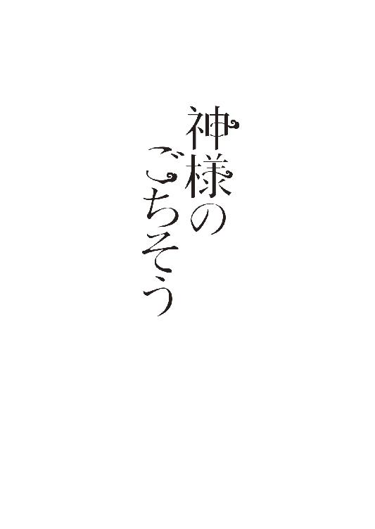

| 神様のごちそう (マイナビ出版ファン文庫) | |
| 石田 空 | |
| 株式会社マイナビ出版 (2017) | |
本作品を電子化するにあたり、一部の漢字及び、記号等が簡略化されて表現されている場合があります。
本書はリフロー形式で制作されています。本文は文字の書体と大きさを変えることが出来ますので、お好みの設定で読書をお楽しみください。

旭商店街の建物と建物の間。低めとはいってもビルの谷間。そこにひっそりと、その神社は存在している。
鳥居や石碑に書かれているはずの名称の部分は割れたり剥げたりしてしまって、なんという神社なのかは、この商店街に住んでいるあたしにもわからない。本当の名前を知っている近所のおじいちゃんやおばあちゃんだって、年々少なくなってしまっている。
お父さんの子供の頃は普通にその神社にも宮司さんがいて、夏祭りとか正月には祭事が執り行われていたし、商店街でもきちんとお祭りを盛り上げるために組合もつくられていたらしい。
でも神社を継ぐ人がいなかったのか、神社への寄付金が足りなくって維持できなくなったのか、大人の事情は知らないけれど。あたしが小さい頃には既に神社はもぬけのからになってしまっていたし、誰かが神社の面倒を見ることだってなくなってしまっていた。
それでも取り壊されないのにはいくつか理由があって、神社なんて壊したら罰が当たってしまうんじゃないかというのが一点、そもそも取り壊すお金がないという世知辛い理由が一点。
そして、もう一点。
──この神社は呪われている。
それが、神社を取り壊す話が出ない最大の理由だった。
誰も世話をしてないにもかかわらず、雑草がボーボーに生えてみっともなくなることがない。
そして春先に桜が咲けば、普通だったら一週間も経たずに桜は散ってしまうのに、雨が降ろうが風が吹こうが一ヶ月まるまる花見が楽しめるほど桜が長持ちしてしまう。その下で酔っ払った人が花見をしているのも十年くらい前までは見かけた光景だったけど、ここ数年はそんな姿だってお目にかからなくなってしまった。
この神社の鳥居をくぐったら、何故か人は神隠しに遭ってしまう。そんな噂が商店街がある町で流れてしまったからだ。
そんなの誰かがつくったでたらめな話だろうと、はじめは商店街の人たちも一蹴していた。
でも残念ながら商店街の人たちも、ある事件から「本当に神隠しじゃないか？」と疑ってしまって、怖くって神社のそばには近づかなくなってしまっていた。
ある日突然、商店街にある蕎麦屋のおじちゃんがいなくなってしまったのだ。
おじちゃんは真面目な人で、ギャンブルをして借金取りに追われることもなければ、浮気をしておばちゃんや姉ちゃんを泣かせたことだってない。
おまけに姉ちゃんは、里帰りしてもうすぐ赤ちゃんを産む。おじちゃんが初孫の顔も見られないなんて、可哀想だ。
警察がやってきて捜査をしたけれど、目撃情報もなければ、不審者情報もなく。唯一あったおばちゃんの「今日の出前は神社の前をとおるルートだった」証言に、尾ヒレ背ビレがついて広まり......、それで近所ではとんだ大騒ぎになってしまった。
さらに、近所に住んでいる造り酒屋の兄ちゃんも急にいなくなってしまった。
ちょっと前まではやんちゃして似合わないリーゼントにしてバイクで走り回っていた兄ちゃんだったんだけれど、高校を卒業してからは更生して実家で杜氏として酒造りに励んでいたのに、急に行方不明になった。
警察は「またか」と調べてくれたものの、おじちゃんと同じく目撃情報なし、不審者情報なし。おじちゃんと同じように神社をとおるルートの配達に行ったきり行方不明になったので、これまた近所では大騒ぎになってしまっていた。
短い期間でふたりも近所の人間が突然消えてしまったせいで、商店街に住む子供たちは親からきつくきつく言い含められていた。
あのもぬけのからの神社には絶対に近づくなと。
だから今ではその神社に桜の花びらがひらりと舞って春を感じる光景が広がろうとも、花見をする人などいない。
いつもぽつねんとしていて、ちょっぴり寂しそうにも見える。
＊＊＊＊
「うーっし!!」
肌寒さが残る三月の終わり。
まだまだ日が落ちるのが早くて既に薄暗くなっている路地を、あたしはひとつ気合いを入れて、足早に歩いていた。高校を無事卒業し、四月から調理学校への入学が決まって、今日は必要な教本と調理用の割烹着を学校まで取りに行っていたのだ。教本にはもらってすぐ【夏目梨花】と油性ペンで名前を書き込んだ。
あたしの実家は【夏目食堂】という昔ながらの大衆食堂で、高校生にも手頃な価格で、山盛りのボリュームで出すのを売りにしている。
物価が上昇している今でも、昔ながらのやり方をずっと続けていたら採算が取れないんじゃないかって心配されることもあるけれど、幸いなことにそのやり方を続けているおかげでＳＮＳでそこそこ評判になり、それなりに繁盛し続けている。
そんな家業を見て育ったあたしは、昔から料理で生計を立てるのが夢だった。だからちゃんと学校で勉強したかった。高校を卒業してすぐ店で修業するっていうのも考えたには考えたけれど、他の人がどんなご飯をつくるのかを知りたかったし、うちのお父さんだって昔は料亭やホテルの厨房で修業していたんだから、あたしだってちゃんとした場所で経験を積んでから店を継ぎたかった。
こうやって調理学校の教材を持っていると、ようやく夢の一歩を踏み出せたんだと実感する。早く学校に行きたい。そしていっぱい勉強したい。そう思って期待に胸を膨らませていると。
ひらり、と薄紅の花びらがあたしの鼻にくっついた。
「うぐっ......！」
鼻の穴を塞がれてうがうがして、思わず「ぐっちゅん!!」とくしゃみをしたところで、あの名前がわからなくなった神社の朱い鳥居が目に入った。駅から家までは、神社の横をとおるのが近道なのだ。まだ開花宣言されて間もないっていうのに、既に神社の桜は満開になっていた。
相変わらず誰にも見られることのない桜だけれど、薄暗い中でも咲き誇る桜には、人を引き寄せる魔力がある。あたしはしばらく外灯でまっ白く浮かび上がっている花を見て、はっと我に返った。
いっけないいっけない、さっさと家に帰らないとね。お父さんとお母さんに夕飯用意しないと。そう思いながら家路を急ごうとしたとき。
ぐるるるる............
聞こえてきた大きな音に、あたしは思わず耳を疑った。
獣の鳴き声に聞こえる。飲食店の多いこの商店街、保健所が厳しいから野良犬一匹だって生息できやしないのに。
あたしは思わず目を細めて、神社の鳥居の向こう側を覗いてみた。灯りのない神社の向こう側に、なにかがいたとしても見えやしない。
どうしよう、やっぱり野良犬かなあ。見つかったら連れていかれちゃうよね。
躊躇していたら、またぐるる......と大きな声。こんなに大きな声を立ててちゃ、通報されるかもしれない。
聞かなかったことにしてしまえばよかったけれど、無視して保健所に連れていかれるのも後味悪い。もし犬だったら、あとで友達に連絡を回して、飼ってくれそうな人を探そう。
そう考えをまとめてから、あたしは恐る恐る神社の鳥居をくぐり抜けた。蕎麦屋のおじちゃんや酒屋の兄ちゃんがいなくなっても、あたしはあんまり神隠しを信じてはいなかった。
砂利を踏みながら歩いていくと、境内は人が訪れないのに、相変わらず雑草一本だって生えてはいない。神社だから神威が宿るのよ、とお母さんが言っていたような気がするけれど、桜の花びらすら綺麗に端っこに寄せられて散らばっていないのはどういうことなんだろう。
あたしが首をひねっている間も、うなり声が響いている。いったいどこからだ。きょろきょろと視線を動かすと、賽銭箱の後ろに人が倒れていることに気が付いた。足袋に包まれた足に、分厚い下駄が見え隠れしている。
ええ......犬じゃなくって、人だったんだ。
その人からうなり声のような音がまたも響く。これ、犬のうなり声じゃない。お腹の音だ。あたしは思わず脱力して、その人に声をかける。
「あのぉ......大丈夫ですか......？」
あたしの声に、足の主はばっと頭をあげたかと思ったら、賽銭箱に頭を打ちつけた。ガンッという音のあとに「いっだぁ!!」と悲鳴があがる。
こんなところで寝てたんだ。
「あのぉ、ここって神隠しに遭うとか言われている神社なんで、あんまりうろうろしてたら近所の人に騒がれちゃいますよぉー？」
「......痛っ......あー、すまないすまない......すぐに退散するから、なあ」
賽銭箱の向こうに隠れている男の人から返ってきた声は、意外と若くてびっくりした。若いからってこんな所で寝てたら風邪引くよ。なんてつっこみが浮かんできたところで、またも獣の威嚇のような腹の虫が鳴り響いた。
あたしの鞄の中には、学校で新しくできた友達に振る舞ったお菓子が入ってる。余った分は持って帰って家族にあげようと思っていたけれど、こんな腹減りの音を聞いたんじゃね......。
「......ええっとぉ、あたしお菓子持ってますけど、よかったら食べますか？」
「あー......聞こえたか？」
いや、こんな神社の外まで響くくらいに腹を鳴らしておいて、なんだこの人は。
溜息のひとつでもついてやりたいところだけれど、男の人って変なところでプライドが高くって面倒臭いのだ。さっさとお菓子を渡して帰ろう。そう思って鞄を開けてタッパを取り出す。
タッパに入れているのは、昨日の夕飯の残り物のキンピラでつくったケーキだ。
「あげますからそんなところに隠れてないで出てきてくださいよー」
「あー、すまない」
そう言いながら賽銭箱の裏からのっそりと出てきたその人に、あたしはどう反応すればいいかわからず、口の中で「げ」とだけ言った。
身長はあたしよりもかなり高い。多分１８０センチはありそうなんだけど、下駄が分厚いから正確な身長はわからない。
着ているのは袴に下駄に......修験装束？ そして天狗のお面で顔をすっぽりと覆っている。修験装束の背中に生やしているのは、どう見ても黒い羽だ。なんでこんなコスプレをしている人が神社の賽銭箱の裏で腹鳴らして寝ているのか。意味がわからなくて頭の中は疑問符だらけだ。
あたしが混乱していると、その修験者コスプレさんは長い天狗の鼻をタッパの中身に向けてきた。
「なんだ、それは？」
「あー......残り物でつくったケーキです。キンピラなんてケーキに入れるなあって言われそうですけど、ケークサレとか全然甘くないおかずケーキだってありますし、それっぽいのを目指してつくったんですよ。食べますか？」
「いただこう」
そう返事してお面を外した修験者コスプレさんの顔を見た瞬間、あたしはまたも「げ」と口の中でつぶやきそうになったのを必死で飲み込んだ。
切れ長の目は涼やかで、鼻筋だってとおっている。はっきりいって、整った顔つきだ。どうしてこんな色男が、天狗のお面をつけてなおかつ修験者コスプレをしているのか、理由を教えてほしい。
あたしはぼーっと見惚れてしまった。その間に、その人はひょいとタッパの中のケーキを取ると、それを頬張って咀嚼しはじめた。あたしはそのもぐもぐと動く口を眺めた。
我ながらキンピラは上手にできていたし、ケーキの味付けだって醤油の匂いが飛ばないように苦労してつくったのだ。バターの代わりになたね油を入れて、小麦粉と米粉を配合して焼いた。これから料理を一緒に習う予定の子たちからも評判だったんだから、不味いはずはないと思うんだけど......。
「......驚いたな、美味い」
「あ、よかったです」
そのひと言にほっと胸を撫で下ろす。料理をつくったら、やっぱり「美味い」が一番嬉しい感想だって思うんだ。
「それじゃあ、あたしそろそろ帰りますね......」
「よかった、これで代わりが見つかった」
「はいぃ？」
ちょっと待って、話が見えない。
あたしは思わず鞄を抱きしめて後ずさりしようとするけれど、それをこの修験者コスプレさんは許してくれそうもなかった。大きい手でぐいっと腕を掴まれる。
「じゃあ行こうか」
「どこに!?」
おまわりさん、こいつが！
なんて言っている間もなく、ずるずると強い力で引きずられたと思ったら、急に地面の感覚がなくなった。飛んでいる、それに気付いたときにはもう遅く、さっきまで見慣れていたはずの夜の町並みがどんどん遠ざかっていく。
先には何故かぽっかりと色のない場所が存在して、そこへどんどん進んでいく。
この修験者コスプレさんはばさりばさりと烏のような黒い羽を羽ばたかせて、あたしを抱えたまま飛んでいるのだ。足が地面に着いてないっていうのがこんなに怖いとは思ってもみなかった。本当だったら今すぐにだって逃げ出したいのに、修験者コスプレさんから逃げ出したら落ちてしまう。落下してミンチになるなんて最期はさすがに勘弁してほしい。
夜だったはずなのに、ここを飛んでいるあたしたち以外に色がついていないっていうのが、より一層不安を掻きたてる
「ここどこ!? なんで空飛んでるの!? 色ない!!」
霧が出ている訳でもないのに、全体的に色がない場所っていうのは不気味だ。
あたしがギャーギャーわめくのに、修験者コスプレさんは怒る訳でもなく苦笑を浮かべている。
「そりゃ神域に入るんだったら飛ぶだろ。現世と神域の境には色がないからなあ。そこが線引きになるんだな」
「なに!? しんいき......？」
「神の領域だなあ」
「なにそれ!?」
思わずつっこみが口をついて出たあとに気が付いた。神の領域に連れていかれているっていうのは、つまり。
「神隠しの原因はあんたですか!?」
「そうだが怒られるのは筋ちがいだなあ。お前さんたちの町を守るためにやっているんだから」
さらりと言っていることがひどいんですけど、この人。
あたしは半眼で修験者コスプレさんを見るけれど、この人は涼しい顔をするばかりだ。でも今のあたしは残念ながら、この人にしがみつく以外にないのだ。だって落ちたらどうなるのかわからないんだもの。この浮遊感がたまらなく人を不安にさせる。
空を飛んでいると、まっ白だった空間がだんだんと水彩画のように色づいてきたことに気が付く。
緑、ピンク、白、赤。
最初に目に入ったのは鮮やかな新緑。ちょうど五月の並木道で見かけるようなまだ頼りない葉が顔を覗かせ、その間にぽつりぽつりとつつじの花の柔らかいピンクや白が入り交じる。
その中で、白のような薄紅のような花びらが舞う。桜？ 一瞬そう思ったけれどちがう。その淡い芳香はどう嗅いでも梅の匂いだ。
さらに目を奪うのは艶やかに舞い散る紅葉の紅に、彼岸花の燃えるような朱。古びた苔の生えた井戸が見えたと思ったら、その周りには朝顔の蔓が巻きついている。
春夏秋冬......全部が入り乱れていた。
「......なにこれ、季節感滅茶苦茶じゃない......」
おまけに飛び交っている小さい虫っぽいものの鼻が天狗みたいに尖っていたり、足も腕もない球体みたいなものが飛び回っていたりと、いつかなんかの本で見た極楽っていうものが広がっている。いったいどうなっているんだろう。
そもそもなんであたしがそんなところに誘拐されてきたのか、さっぱりわからない。あたしは抱えられたまま修験者コスプレさんをジト目で睨みつけると、修験者コスプレさんは肩をすくめた。
「まあ、御先様もわがままだしなあ」
「みさき......さま？」
「ここの神様の通称だなあ。真名は教えられないが」
「はあ......？ 神、様？」
極楽の次は神様か。ここが神の領域ってだけでも理解が追いつかないっていうのに。あたしが混乱しているのをよそに、この修験者コスプレさんはかまわず話をする。
「さっきの神社があっただろ。お前さんはあそこの神社の本当の名前、知ってるか？」
「え......？ 知りません。おばあちゃんだったら知っていたかもしれないですけど、お父さんやお母さんの子供の頃にはもう名前がわからなくなっていたって。宮司さんもいなくなっちゃってましたし」
「元々それが原因なんだよなあ......あの神社が廃れてしまったのが」
「え？ 原因って......神隠しの？」
「ああ」
修験者コスプレさんは空を飛んだまま話を続ける。
「あの神社の本当の名前は豊岡神社っていってなあ。稲の神を祀る神社だったんだよ。あそこにいたの、狛犬じゃなくって三本足の烏じゃなかったか？ 御先様はあそこを治める八咫烏の化身なんだよ」
そういえば石段の上に鳥の像があったような気がする。足の数までわざわざ数えてなかったけど、三本足だったんだね。それはわかったけど。
「宮司さんがいなくって神社が廃れてるのと、あたしの誘拐ってどんな因果関係があるんですか？」
「神は本来、等価交換で願いを叶えている。賽銭を賽銭箱に投げ入れたら、神はその願いを叶えるんだが......もし神社の世話が放棄されている場合はどうなるんだ？」
「ええっと......？ 誰かが持っていっちゃうとか、ですかねえ......？」
「そう、神が持っていってるんだ。だが神様は賽銭で食べ物を買ったり神社を手入れすることはできない。宮司がいる場合は、賽銭やもろもろの神事で得たお金で神に奉納を行い、神社も手入れすることにより、神も人の願いを叶えてやろうとするが......宮司もおらず、誰も神社の世話を行わないのに、使えない賽銭だけを払われて願いを叶えろと催促されても、叶える義務はないと、現在御先様はご立腹という訳だ」
「あー......」
なんかのマンガで読んだような気がする。願いを叶えるためには叶える願いと同じだけの重さの対価を支払わないといけないって。その対価が対等じゃない場合は、願ったほうか願いを叶えるほう、どちらかに被害が及ぶって。
......ん？ でも神隠しに遭っている原因っていうのがやっぱり全然わからないぞ？
「ええっと......その御先様が放置プレイ食らって拗ねてるっていうのはわかったんですけど」
「おいおい、お前さん口が悪いなあ」
「これが地なんすよ。で、現在進行形であたしが誘拐されていることの因果関係はまだ説明されてないです」
「ああ。対価が支払われていない以上、本来だったら御先様も願いを叶える義理はないんだが、契約を交わして社に縛りつけられている御先様は、神社から離れることができない。だから賽銭が払われるたびに願いを叶えないといけない。でも神事が執り行われていないせいで、御先様は毎日空腹だ」
「はあ......？」
放置プレイを食らって怒っている。そこまではわかるものの、その結果お腹が減っているって......なに？
あたしの疑問に、修験者コスプレさんはやんわりと答えてくれる。
「お前さんは知らないのかい？ 神社では一日二回神に食事が捧げられているということを」
「ええっと......神棚に朝と夕、二回お供えするやつですか......？」
「詳しいな、それだよ。御先様は食事を供えられていない」
昔気質の商売をやっている我が家だと、神棚のお供えは日常的にやっているけれど。
神社の手入れがきちんとされてないってことは、御先様にはお供えされてないから、お腹が減っているってことなのかな？
修験者コスプレさんはあたしの疑問を理解したのか、丁寧に語ってくれる。
「対価がまったく支払われてない上に空腹なものだから、すっかり力を失ってしまってね。このままだとお前さんの町が穢れてしまうんだよ。御先様も対価が不釣り合いな願いばかり叶え続けたせいで」
「えっ？ 穢れって......」
「さっきも言ったように、神は対価の支払われていない願いを本来なら叶えることができない。でも社と交わした契約の関係上、御先様も願いを叶えるしかない。不釣り合いな対価の災厄をずっと御先様が被り続けているせいで、もう邪神になりかけてしまっている訳だから」
「ええっと......邪神になったら、どうなるんでしょう？」
なんだ、言ってることがだんだん物騒になってきたぞ。あたしが思わず顔を引きつらせていると、修験者コスプレさんはさも当然という具合で答えをくれた。
「ああ、そうなったら神社の守護下にある町は、当然人が住めなくなる程度には穢れるだろうなあ」
「ちょっ、その、人が住めなくなる程度に穢れるって！」
「そうだなあ......お前さんは、流行り病が横行している町や人が突然いなくなるような町に、ずっと住んでいられるのか？」
「い、今も神隠し起こってるじゃないですか！」
「あー......そう来たか」
あたしが思わず言った言葉に、一瞬修験者コスプレさんは困ったように眉をひそませたけれど、すぐに涼しげな顔に戻ってしまった。
「ちがうちがう。それは穢れじゃない。御先様の遣いである俺は、あの方が邪神にならないよう、どうにか人間側が対価を支払う方法はないかと考えたっていう訳だ。それが、神隠し」
「ちょっと待ってくださいよ。あたし、そもそも神社で賽銭を入れたこともなければ、願い事をしたこともないですよ!?」
そもそもあの神社は数十年単位で無人のはずだから、誰もわざわざお参りなんてしてないはずなんだけど。あたしの苦し紛れな反論も、修験者コスプレさんにあっさりとかわされてしまった。
「お前さんの時代にはないのかい？ 他の人間のやらかしたことは、末代まで降りかかるって話が？」
「そ、そりゃ......大昔にはひとりの罪は一族末代まで降りかかるとかはあったかもしれませんけど......!?」
なんだそれ、むっちゃくちゃ理不尽だよ。でもちょっと待てよ。
神隠しされたのがどうして、対価の支払いになるんだ？
「......仮にあたし、御先様に差し出されたらいったいどうなるんですか？」
大昔は、生贄があったらしいけれど。まさか。差し出された人はバリバリ食べられるとか、火あぶりにされるとか、生きたまま川に流されるとか......？
お伽話に描かれた怖い話が頭の中を駆け巡り、あたしはダラダラと冷や汗をかく。そんなあたしの態度をスルーして、修験者コスプレさんはあっさり回答してくれた。
「決まっているさ。食事をつくればいいんだ」
「って、ええ......？」
なんだって？ 飛びながらも涼しげな顔でそう言い切る修験者コスプレさんを見て、あたしは目をぱちくりとさせてしまった。
正直、あたしには拍子抜けするくらいに「楽」過ぎる願いなのだ。
「でも......それだったらお兄さん......ええっと......？」
「ああ、俺は烏丸」
「御先様の名前は聞いちゃ駄目なのに、お兄さんは名乗っていいんですか!?」
「偽名に名乗っていい悪いもないだろ」
「って人に名前聞かれて偽名っすか!?」
「神域では名を伏せるのが礼儀だからなあ。人だって忌み名ってもんがあるだろう？ 真名を知られたら呪われるから、名前を伏せるというやつが」
「って、話逸れてる！ 烏丸さんが言うように、食事をつくる、それだけでいいんですか？」
「まあな。御先様がそれで許してくれたら、だけれど」
おい。おいおい。
あたしは思わず口元を引きつらせる。もし許してくれなかったらどうするんだ。
怒らせたらなにされるんだろう......。そもそもあたし、元の世界に帰れるんだよね......。なんだか不安になってきた。
そう思っている間に、だんだん地面が近づいてきた。
すとんと降ろされた場所は、土がふかふかしているのが靴越しでもよくわかる。着いた場所はさっきまでいた寂れた神社と繋がっているとは全然思えない、大きな神社。
白い壁で囲まれて、石造りの鳥居が建っている。それをくぐって、参道の端っこを先導して歩いていく烏丸さんに、あたしはついていった。
そういえば。
「烏丸さん。あたし以外にも神隠しに遭っていた人たちって、今どうしてるんですか？」
「あー、彼らか。元気に働いてるよ。いろいろあって帰ってもらった者もいるが」
「理由があったら帰れるんですか。それに、働いてるって......なにしてるんですか」
「まー......いろいろあるって話さ」
......この人、案外中間管理職的な役割で大変なのかもしれない。御先様は邪神一歩手前だし、あたしみたいにぐちゃぐちゃ文句言ってくる神隠し対象者がいるし。
烏丸さんについて、あたしは御先様が住まうとされている御殿の廊下を歩いていく。ふと足元を見ると、てくてく小さいものが歩いてなにかを運んでいるのが見えた。どう見たって、現世にいる動物とはかけ離れている。
あたしは思わず「ひっ!?」と叫んでそれを凝視していると、烏丸さんは「あー」と言って解説してくれた。
「あれは付喪神。人間でも妖怪でもない。御先様の世話をするのは、人間だけじゃなくって付喪神もいるのさ」
「付喪神って......神様が神様の面倒を見るんですか？」
「彼らは御先様みたいな神よりは神格が低いのさ」
「はあ......」
説明が曖昧だなあと思いつつ、頬をポリポリ引っ掻く。
天狗みたいな鼻のとんがった小人が歯ブラシサイズの槍を持って歩いている姿はシュールだし、大福に手が生えているようなのが畳んだ服を抱えて歩いているのはへんちくりんだ。
季節感滅茶苦茶な庭に沿った長い廊下はピカピカで、その床に映り込んだ霞がかった景色の美しさはやっぱり異常だ。
しばらく歩いた先に、襖が見えてきた。豪奢なそれを見て、ここが御先様のいる場所なんだろうなと想像できた。あたしは烏丸さんに「ここで正座しなさい」と言われ、烏丸さんと一緒に正座する。
烏丸さんが床に手をつきつつ「失礼します。料理番を連れて参りました」とひと声かける。たっぷり十秒ほど沈黙が続いたと思ったら、襖の向こうから「入れ」と声がかかった。
「失礼します」
烏丸さんが音も立てずに襖を開くと、青々した井草の香りがむわりと漂った。毛羽立って黄ばんだ枯草みたいな匂いの畳しか知らないあたしは、そんな高級感漂う香りでまず背筋が伸びる。
入った部屋は、いったい何人泊まれるんだろうと思うほどに広い畳の間。奥には金箔が貼られた派手な絵の描かれた屏風があり、その前に誰かが座っている。
その人から発せられるオーラは、初詣に行ったときに感じるような、妙にありがたいもの。人ならざるものの雰囲気をありありと感じる。
その人は雲みたいにまっ白でふわふわとした長い髪を垂らし、まっ白な狩衣を着て、こちらを見ていた。そして背中。烏丸さんみたいに羽を生やしているが、その羽は烏の濡れ羽みたいなまっ黒とはほど遠いまっ白なものだった。
顔は驚くほど人間味がない。すごい美形は人間に見えないことがあるって聞くけれど、これは神様だからこんなに美形なのか、美形だから余計神々しく見えるのか、他に神様を見たことがないからわからない。虹彩だけかろうじて灰色なものの目すらまっ白なのにびっくりしつつ、あたしは頭を下げた。
この人が御先様......だよね。
どんな顔をすればいいのかわからず、せめてもと表面だけはかしこまった態度を取ってみた。
「烏丸、こやつがか？」
「はいはい、これが新しい料理番ですよ」
「ふむ......そち。名をなんと申す？」
「えっ......」
あたしは思わず烏丸さんを見る。烏丸さんは声を出さずに口だけをパクパクと動かした。
『本名を名乗るなよ』
ええっと、本当の名前を名乗っちゃいけないっていう礼儀、だっけ。でも本名教えずになんて言えばいいんだろう。
あたしはしばらく考えてからこう名乗った。
「り、りんと申します」
礼儀作法って、これでいいのかな。神様の礼儀作法なんて知らないよ。そう思いながらプルプル震えていたら、御先様はこちらを値踏みするようにじぃーっと凝視してから、すぐに烏丸さんに視線を変えた。
「まだ童ではないか。我の料理番が務まるのか？」
「いやいや、料理人としては一流ですよ。俺が保証します」
いやいや烏丸さん。あんた腹減らして倒れてたんじゃないっすか。そんなときに食べたもんはなんだって三割増しで美味いと思いますよ、ハードルあげるのやめてくれませんかね。なんて言えたらいいんだけれど。
御先様のオーラで身が縮こまってしまって、つっこみなんて入れられる訳がない。ただあたしはダラダラと冷や汗をかいていた。
しばらくあたしを凝視していた御先様は、やがて「そち」と声をかけてきた。
「ひあっ......な、なんでしょうか？」
「勝手場を用意する。本日の夕餉は任せるからせいぜい腕を振るうがいい」
かってばって？ あたしは思わず烏丸さんを見ると、「厨房とか台所と言えばわかるか？」と教えてくれた。昔の言い方、なのかな。
「ほ、本日って......前の料理番さんは、どうしたん、でしょうか......」
いきなりまったく使ったことのない場所で料理しろなんて言われても、難易度が高いよ。
こんなお伽話でしか見たことないような場所に電気やガスがとおっているなんて思えないし、料理ができるとはいっても火起こしや炊飯器を使わずにご飯を炊くのなんて、キャンプとかで年に一度やったらいいほうだもの。
それにしても、前の料理番さんはどこに行ったんだ。
ここに来てからまだひとりも人間を見てないんだけど、まさか不味い料理つくった人を石や妖怪に変えてるなんてないよね？ あたしはダラダラ冷や汗をかいたまま烏丸さんのほうに顔を向けると、烏丸さんは「あー」とひと言。
「あの人、孫が生まれるとわかって急に帰りたいって言ってきてなあ。さすがに神の奉公でも子孫繁栄を見守れないのはことだろうと帰らせた」
「あたしの事情については無視するのに、そういうところには気を遣うんすね!?」
「ええい、我を無視するな。りん。それでしないのか？ するのか？」
あたしが一瞬でも無視したのを御先様が心底不快げに顔を歪めたのを見て、あたしは思わず「ひぃーっ」と縮こまる。美形が顔を歪めたら恐怖の対象になるなんていうのを、できれば知りたくはなかった。
助けを求めるように烏丸さんを見ると、烏丸さんは肩をすくめた。
「まあ、なんとかなるだろ。御先様は味には細かいが、お前さんなら大丈夫だ」
「あ、たし。そもそも勝手場を見てもいないんすけど!?」
「大丈夫だろ。ちゃんと『つくります』って言えば問題はない」
「うう......」
烏丸さんいい人みたいだけど、勝手なことばっかり言うなあ。御先様は御先様でイライラしてるし、白い肌に青筋が浮き上がっているのが怖くて仕方がない。
そういえばこの人、邪神になりかけているんだっけ。あまり怒らせちゃ駄目だよね......。あたしは意を決して、とりあえず手をついた。
正直、他に言いたいことは喉の奥に渦巻いている。あたしの進学どうしてくれるんだとか、うちの親絶対に大騒ぎしているとか、本当だったら今頃家で夕飯つくってからまったりしている時間だっていうのにとか。
でもそれらは御先様の放っている威圧的なオーラで縮こまって、喉の奥に張りついて出てこない。出てきた言葉は、全然ちがうものだった。
「誠心誠意料理させていただきますので、どうぞよろしくお願いします」
いつ家に帰してくれるんだろう、そもそも帰してくれる気あるのかな。そう思うけど。
今はそう言わないと駄目な場面なんだろう。そう思い込むことにした。
羽織っていたダッフルコートを脱いで、替わりに割烹着を着る。まさか入学の前に着ることになるとは思いもしなかった。
そして再び長い長い廊下をとおり、広い場所へとたどり着く。
入ってみれば、火のついていないかまどに、大きな羽釜、寸胴鍋が並んでいる。調理台の棚を開けて包丁を確認してみて、あたしは思わず「うぇ......」とうなり声をあげる。
高価過ぎて一流の料理人じゃないと持ってないレベルの包丁が並んでいた。日頃、ステンレス包丁しか使ってないあたしからしてみれば高嶺の花だ。
他の道具を確認する。ステンレスのボウルはないみたいだけど、陶器のすりこぎ鉢に漉し器なんかはあるし、菜箸や木べらもあるから道具は問題ないみたい。問題は材料のほうだ。
冷蔵庫は案の定ないけれど、床下からは芋などの根野菜がどっさり出てきた。魚は新鮮なものはないものの、干物はあるみたいだ。
外には季節感滅茶苦茶な花園以外に畑も広がっているみたいだし、採れるものや使えるものがないか探してこられないかな。
調味料は、酒やみりん、酢は見つかったけれど砂糖はない。塩や味噌もあったけれど、醤油がないのにあたしは「あれ？」となった。醤油なんて日本食の定番なのに。思わず烏丸さんのほうを振り返る。
「醤油はそういえばつくられてないなあ」
「って、ないんですか!?」
「前の料理番は醤油抜きでも料理はしてたぞ？」
そう言われてしまったらグウの音も出ない。
日本食の味付けはさしすせそ（砂糖、塩、酢、醤油、味噌）が基本中の基本なのに、砂糖も醤油もないのは致命的だ。そもそも、出汁に使えそうなものだって全然ない。大きな店だったら当たり前に置いてあるかつお節だって昆布だってないのはどういうことなんだ。野菜で出汁を取る方法はあるけども、それだと香りもコクも弱過ぎるんだよね。
これは結構大変そう......。
うろうろと探し物をしていると、こちらを窺う視線に気が付いて、あたしは目を瞬かせた。そこにいたのは、火の玉だった。マッチ棒みたいな手がついているのが妙だ。
「だあれ？」
思わず屈み込んでみると、火の玉はきょとんとこちらを見上げてくる。パチンパチンと火花が弾ける。
「なんだい、あたらしいりょうりばんかい？」
「え？」
料理について詳しいんだろうか。あたしは疑問に思って烏丸さんを見る。
「こいつは火の神。小さいがうちで働いているやつだよ。付喪神の中でも上級のやつだな」
「へっへっへっ。おれがいなきゃここのかってばは、うごかないからな！」
烏丸さんがそう言うと、当然と言ったようにマッチ棒のような手をない腰に当ててふんぞり返る。
そういえばここ......。あたしは思わずかまどを見る。
かまどの脇には大量に薪が積まれているし、燃えやすいようにと藁も置かれているけれど、肝心の火をつける道具......ライターとかマッチなんて期待できないとしても、火打石なんかもまったく置いてはいない。そもそも火打石なんて使ったことないけど。
「じゃああんたに頼まないといけないんだ？ 火のことは」
「たいかははらえるのかい？」
「ひあっ？」
なに、火を使うたびに命でも支払えとか、可愛いなりしてそんなおっかないこと言うの？ あたしは烏丸さんに助けを求めるようにして無言で訴えると、彼は苦笑して教えてくれた。
「御先様のときも言っただろう？ 神は基本的に対価が支払われないことには願いを叶えることができない。それは神格の低い付喪神だって同じだ」
「そんな......あたしなにを支払ったらいいの？」
命取られる......と、びくついていたら、火の神はあっさりと言ってのけてくれた。
「まえのりょうりばんのごはんはうまかったんだぞ！」
あ、あれ？ その言い方にピンと来た。
「......もしかして、賄いが欲しいの？」
「おうっ」
火の神は火の粉を噴きながら笑うのに、あたしは途方に暮れて烏丸さんに無言で助けを求めた。烏丸さんはこくりと頷く。
「できあがったら賄いをやればいい。火の神はそれで火を熾してくれる」
「ふうん。じゃあ、あんたに賄いあげるね。ご飯できてからで大丈夫？」
「おうっ、だいじょうぶだ！」
「そっか。じゃあちょっと待ってね」
火の神が心底機嫌よさそうに火花を散らしながらひょいっとかまどの下に潜り込んだのを見て、あたしは半信半疑で藁と薪を入れると、火の神はたちまちぽっぽと火を熾しはじめる。最初はパチンパチンという音だったけれど、あっという間に火は赤々と燃えはじめる。
これで火は大丈夫かな......。さて、献立考えないといけない。
「ねえ、烏丸さん。ここには砂糖と醤油がないんですけど、前任さんはいったいどうやってたのか知ってますか？ さすがにみりんと味噌だけだったらどこまでできるかわかりませんし」
床下をもう一度丹念に調べると、干し椎茸は見つかったから、出汁は取れそうだ。本当は山の産物と海の産物を合わせて取った出汁にしたかったけど、ないものは仕方がない。現状あるものでどうにかする方法を考えないと。
保存されていた魚の干物は川魚で、岩魚と山女に鮎。今日はシンプルに岩魚の干物を焼こう。昆布や醤油があったら、炊き込みご飯にできたんだけれど。
あたしがあるもので必死に献立を組み立てていたら、烏丸さんはひょいと壺をひとつ取り出してきた。
「前の料理番も苦労してたな。あいにく砂糖はつくるのが面倒でうちには置いてないが、水飴だったらあるぞ」
「水飴っすか!?」
うーん、今日の献立だったら使わないから、次に考えよう。
あとは野菜だなあ。どんなものがあるんだろう。そばに立て掛けてあった竹ざるを持って、「すみません、畑に生えてるものって、好きに使っていいですか!?」と尋ねると、烏丸さんは「どれでも好きに」と言ってくれたので、急いで花園の近くにある畑へと出た。
無茶苦茶な季節感の花園と同じく、畑にも見事に季節感というものがない。
どうしてつくしとふきのとうと一緒に大根が生えて茄子がなっているのか。どうして柿の実が育っているそばで柚子まで熟しているのか。それにどうして山菜と畑の野菜がごちゃごちゃに生えているんだとか。
神域って本気で訳がわからない。スーパーで旬に関係なく野菜が並んでいるのを見ても気持ち悪いと思わないのに、畑で生えているところを見ると気持ち悪い。
びくついている自分を励ましつつ、今日使う野菜を必死で考える。
小人みたいな生き物がズボンみたいな袴を穿いて草履で一生懸命畑を耕しているのが目に入る。これも付喪神なのかな、小さくって可愛い。あたしは彼らを尻目に、どうにかきゅうりとみょうがを採ってくる。あと大葉を摘ませてもらって、干し椎茸に合う味噌汁の具を考えないとな、と畑をうろうろする。
さまよっていると、一生懸命荷物を運んでいる付喪神たちとぶつかりそうになる。あたしは邪魔になっていることに気づいて慌てて竹ざるを抱えて道の端に寄った。
「ふう」と息を吐いていたら、ビチビチと音がすることに気が付いた。視線を落とすと引っくり返っている付喪神がいた。その子は笠にずいぶんとたくさんのきのこを入れて運んでいた。重さで引っくり返ったのかな。
「あんた大丈夫？」
慌てて掴んで元に戻してあげると、付喪神はぱちぱちと瞬きをしてこちらを見上げた。あたしの持っている竹ざるを見ると、ひょいと黒っぽくって汚いきのこを差し出してくれた。
「え？ ありが、とう......？ でもこれって、食べられるの......？」
あたしが言い終わらないうちに、付喪神はなにも答えずに立ち去ってしまったので、途方に暮れた。
気を取り直して味噌汁の具として外れにはならないだろうと白ネギを一本引っこ抜いて、育ち過ぎて食べられそうもないタケノコから皮だけを取って、帰ることにした。泥がすっごいから、戻ったらたわしで洗わないと。
つくづく八百屋さんやスーパーって偉大だ。綺麗に洗ったものを売っているんだもの。しかしこの汚いきのこなんだろう。あたしは付喪神がくれたきのこの匂いをふんふんと嗅ぐ。毒きのこは派手めなものが多いし、多分これも毒きのこじゃないんだろうけど、さすがに野生のきのこの区別なんてあたしにはできないよ？
＊＊＊＊
勝手場に戻ると、烏丸さんは野菜を洗おうとするあたしの竹ざるを見て「おっ」と感嘆の声をあげた。
「えのきだけ採ってきたか、いいもの採ってきたな」
「えっ、えのき......？」
あたしが知っているえのきだけは白くってひょろひょろしているやつだけれど、これは黒っぽくってがっちりとしている。
よく考えたら養殖きのこと野生のきのこは、そりゃ見た目がちがうだろうと、今更思い至る。これがえのきならいい出汁が取れるし、干し椎茸との合わせ出汁で味噌汁がつくれる。白ネギとの相性もいいだろう。
ひとまずお米を洗って、火の神が火をつけて待っててくれたかまどに釜をセットしてご飯を炊くことにした。
釜に入れたお米の匂いを嗅ぐ。普段食べているお米よりも糠の匂いがきつい気がするから、本当にちょっとだけみりんを入れた。みりんを入れたら、米の糠臭さが消えるのだ。
「それじゃあ、こっちのかまどでご飯炊くから、よろしくね」
「おうっ」
火の神はパチンパチンと花火のように音を鳴らしながら、嬉しそうに頷いてくれた。
死んだおばあちゃんが鍋でご飯を炊いているのを見ていたし、あたしも一応鍋でご飯を炊く術を知っている、でも、多分薪の火とガスの火じゃ火力が全然ちがうから、少しずつ覚えていくしかない。
昔聞いた歌だったらこうだっけ。
はじめちょろちょろなかぱっぱ。赤子泣いてもふた取るな。
ご飯は最初は弱火で、あったまったら一気に強火にするのが鉄則。ふたが開きそうなくらいに泡が強く吹いて沸騰してきたのを見計らって、また弱火に変えるのだ。
「あのね、最初は弱火で、しばらくしたら強めにしてもらえる？」
「おうっっ」
火の神がぐっと睨んで火力をあげてくれている隣で鍋に水を張って、水で戻して切った干し椎茸とえのきだけを入れはじめる。
「隣の鍋も火をつけたいんだけど、あんたできる？」
「そっちもつよいひか？」
「ううん、こっちは中くらいの火がいいの」
「まかせろ！」
そう言うと火の神はないはずの肩をいからせると、火の粉をぽっぽと吹き出して、隣のかまどにまで火をつけたのだ。
ご飯ももうちょっと様子見でオッケー、味噌汁の出汁取りも沸騰するまでは放置でオッケー。その間にもう一品つくっちゃおう。岩魚を焼くのはご飯を蒸している間がいいし。
そう思いながらさっき採ってきたきゅうりとみょうがと大葉をざくざくっと千切りにする。ほんの少しだけ鍋からきのこの出汁をすくって鉢に入れる。それに塩と酢を加え、千切り野菜と混ぜて和えれば、きゅうりとみょうがと大葉で小鉢ができあがる。
少しだけ指ですくって味を見た。うーん......やっぱり醤油も砂糖もだけれど、昆布やかつお節がないのが痛いなあと思ってしまう。きのこの出汁は美味いけど、やっぱり出汁は植物性の出汁と動物性の出汁を合わせたものが一番おいしい気がする。豚肉と昆布しかり、きのことかつお節しかり。
そう考えている間に、釜のふたがふつふつと泡を吹いてきた。
「ねぇ、今度はご飯の火、とろ火にしてくれる？ ......ええっと、とろ火っていうのは弱い火って意味だけどわかる？」
「おうっ！」
便利だな......最近のガス会社の用意してくれるガス台だと、火事対策のせいでとろ火に調整したくってもその前に火が消えちゃうのが多いのに、見事なまでのとろ火で惚れぼれする。
「なべのひは？」
「こっちは少し弱めてくれたら嬉しいかな」
「おしきた！」
火の神の火力調整ってすごいなあ。これが神様の力か......。そうつくづく感心しながら、あたしは七輪を持ってきて、岩魚を炭焼きにする準備をしはじめた。しばらくこちらを眺めていた烏丸さんは、ほんの少しだけ驚いた顔をしてこちらを見ていた。
「なんですか？」
「てっきり魚を焼くのも火の神に任せると思ったんだが......」
「いや、魚を焼くのは自分で見ながら焼いたほうが早いんで。あたしもご飯や煮込みをかまどで料理するのははじめてなんで、火の神が手伝ってくれるんだったら、そっちを面倒見てくれたほうが嬉しいんですよ」
「はあ......そういうことかぁ......」
烏丸さん、えらく感心してるなあ。そういえば。この人、腹減らして神社で倒れてたんだ。火の神にも賄いを準備してあげるんだったら、烏丸さんの分も用意したほうがいいかな。
火の神から火の粉をちょこっともらったあたしは、七輪の炭に火をつけ、網の上に岩魚を載せて焼きはじめた。同時に、火の神にご飯のかまどの火を止めてもらう。
岩魚は一夜干しだったらふんわりとして柔らかいけど、見た感じからして完全に乾燥しているし塩気も強そう。だとしたらお酒の肴にしたほうがよさげだけど、お酒の準備の方法を神域初日のあたしは知らない。
もうちょっとしたら魚も香ばしい匂いを放つだろうと思いながら、味噌を出汁の鍋に流し入れる。ひと口お玉ですくって味を見てみると、かつお節とはちがう、上品で澄んだきのこの旨味たっぷりの味噌汁になっていた。あとは白ネギを浮き身にすれば完成する。
次に皿にタケノコの皮を敷いて、焼きあがった岩魚を載せる。
朱のお椀にえのきの味噌汁を入れ、きゅうりとみょうがの小鉢と一緒に並べる。残りはご飯。
一番心配していたご飯が蒸らしあがったのを見計らって、恐る恐るふたを取ってみた。白くて艶々して、ほんのりと甘みがある匂い。普段使っているお米よりも糠臭いような気がしてものすごく力を込めて研いだけど、お米は割れてはいないみたいでほっとした。
さくりさくりとしゃもじで混ぜてから、あたしはひとさじだけすくって頬張った......。
「......かまどのご飯、やっばいわ。おいしい」
糠の匂いはみりんを入れたから取れているとは思ったけれど、炊き加減ばかりは実践してみないことには自信がなかった。これだったら大丈夫のはずだ。
でも──。御先様、これで満足してくれるのかな？
ご飯、岩魚の炭焼き、みょうがときゅうりの小鉢、きのこ汁。
なにかあと一品くらい欲しいんだけど、その最後のひとつが思い付かない。うーん......。あたしが思わずうなっていたところで、ずっと見守っていた烏丸さんが「うん」と言った。
「これなら酒も進むだろうし、御先様も満足だろうさ」
「え、そういえば......あたし、お酒の準備なんてどうすればいいんですか？」
床下を見た限り、料理酒に使うようなくせの強いものはあったけれど、飲んで楽しむような酒なんてなかった。あるものだったら出せるけど、ないものはこちらもどうにもできない。
「うちの杜氏に任せればいいだろ」
「え......杜氏って......ここ、まさかお酒つくってる場所まであるんすか？」
そう言いながら、あたしは完成した料理を、料亭もびっくりな豪華な膳に並べる。日本料理の基本はわかっているつもりだけれど、あしらいやかいしきの知識は料理の本で読んだ必要最低限しかない。これで大丈夫なのかな。
烏丸さんは大丈夫と言ってくれているけれど、不安で仕方がない。
「それで......お酒はどこに取りにいけばいいんですか？」
「酒は食事のときに運ばれてくるからな、お前さんはそのまま膳を御先様に届ければいい」
「はあ......」
烏丸さんの先導でとおってきた廊下を再び歩く。
御先様のいる広間に通じる通路まで歩いたときに、ふわんと甘い匂いが立ち込めているのに気が付いた。商店街を歩いているときに嗅いでいる匂いだ。
甘い甘い、米麹を発酵させて混ぜ合わせる匂い。あたしはまだ飲めないけれど、丁寧に丁寧につくられた日本酒は飲むたびに皆がにこにこ笑っていたような気がする。その匂いを漂わせている人を見て......あたしは思わず目が点になった。
「......古巣の兄ちゃん？」
古巣雲雀。行方不明になっていた造り酒屋の兄ちゃんだ。
考えてみればわかる話だ。兄ちゃんも蕎麦屋のおじちゃんも、あたしと同じように神隠しに遭っていたんだ。御先様が原因の神隠しなんだから、そりゃ御先様の社で働いていると考えるのが筋だ。
あたしは料理番としてさらわれたけど、兄ちゃんの場合は杜氏としてさらわれたのか。
思わずジト目で烏丸さんを見ると、烏丸さんは暢気に「あー、知り合いか」とだけ言った。いや、神隠しに遭ってる人たちって基本的にご近所さんなんだから、そりゃ知り合いだよね!? 兄ちゃんはあたしのほうを見て、首をひねった。
藍色の作務衣でたすき掛けなのは、普段から酒の仕込みをしている兄ちゃんの服装と大差がない。兄ちゃんはあたしにすたすたと近づいてきた。
「んー......？ お前もしかして、夏目食堂の？」
「え、うん」
最後に会ったのはいつだったかな。まだ高校に通ってた頃だったと思う。兄ちゃんはあたしをまじまじと見ると、にかりと笑った。
「うわあ、マジかよ。制服着てたと思ったらでかくなってるし！」
「いや、そこまででかくはなってないかな！」
なおも兄ちゃんがなにかを言いかけたけれど、烏丸さんにぱちんと手を叩かれて中断されてしまった。
「知り合い同士の久々の再会はいいけど、ひとまず先に食事を出してからだな。そのあとにでも話をすればいい」
「......はあい、わかりました」
兄ちゃんはそう言って肩をすくめた。
聞きたいことはいろいろあれども、ひとまず襖の前で声をかける。
「失礼します」
「......入れ」
「はい」
あたしは膳を、兄ちゃんは酒を小さな樽に入れて持ってきていた。まずはあたしが御先様の前に出て膳を出す。そして兄ちゃんは樽から柄杓でお酒を汲むと、銚子に移し入れた。甘い甘い匂いが立ち込める。
ご飯、岩魚の炭焼き、みょうがときゅうりの小鉢にきのこ汁。
御先様はじぃーっと膳に載せられたそれらを見つつ、先にお猪口を取る。それに兄ちゃんが銚子から酒を移した。それを傾けると、薄く薄く御先様は笑った。
「......ふむ、悪くはない」
「ありがとうございます」
上から目線だ。兄ちゃんのお酒がおいしいのかどうかは、正直お酒を飲めないあたしにはわからない。ただ商店街の人たちは美味い美味いと飲んでいたはず。大きくはないけれど、歴史の長い造り酒屋の息子のつくったお酒なのにと、思わず歯軋りしそうになるのを堪える。
それにしても。料理に手をつけずにお酒だけ飲まれるのはすごく不愉快。それに、あたしの料理駄目だったのかなとだんだん不安になってくる。そもそも神様の料理なんて、どうすればいいのかわからないんだし......。
落ち込んできたところで、ようやく烏丸さんが助け船を出してくれた。
「御先様、そろそろ食事に手をつけねば、冷めてしまいますよ」
「ああ......あったな、そういえば。ずいぶんと地味なのが」
地味......。思わずグサリときて、うなだれないように堪える。
定食なら、味がよければ見た目が地味でも問題ない。けど割烹料理など、料亭で出す料理であったら別だ。
季節感滅茶苦茶な場所ではあるけれど、春なら花しそや桜草、夏ならつつじの花やほおずきと、季節感あるあしらいを添えて、食べるだけでなく見た目も気にするべきなのだ。はじめてだからってテンパり過ぎたとはいえ、そこまでできてるとはお世辞にも言えない。
もし不味いって言われたら死ぬ。いや、死なないけど精神的に死ぬ。というより御先様に殺されるんじゃないの？ 考えれば考えるほどネガティブなことばかり頭の中を駆け巡る。御先様の箸が小鉢に伸びたのを見て、覚悟を決めた。
あたしが神隠しに遭った挙句殺されたなんて、どう親に知らせればいいんだろう......。思わずぎゅっと目をつぶりそうになったが、そのとき。
「......ふむ、悪くはないか。地味ではあるが。地味ではあるが」
にっ、二回も言うなぁぁぁぁ!! って、あれ？ 御先様は小鉢をひと口ふた口食べたあと、今度は岩魚に箸を伸ばす。こちらもお酒を飲みつつ綺麗に残さず食べてくれた。そしてきのこ汁。こちらも丁寧に食べてくれたのに、あたしは目を見張っていた。
ご飯もひと粒残さず食べてくれたので、心底ほっとした。箸をぱちんと置くと、御先様はゆるりと脇息に肘を乗せる。
「ふむ、せいぜい励め」
「えっ......その。ありがとうございます......！」
「ただし地味だ。見てくれがそれでは料理が可哀想だ」
「あっ、はい！」
次はもうちょっと見た目に気を付ける。
地味なのは自分でもわかっていたから。でも料理に使う時間を飾り付けに使うのはやっぱりなにかちがう気がする......。もうちょっとその辺りは勉強しないと駄目かもなあ。
＊＊＊＊
御先様の食事が終わったあと、ものすっごく疲れていることに気が付いた。つくっていたときは全然気付かなかったけど、料理を出して評価されるのを待つっていうのは疲れてしまうんだなあ、と実感した。
兄ちゃんはてっきり酒蔵のほうに行くのかと思っていたけれど、勝手場までついてきた。
「あれ、兄ちゃんも行くの？」
「そりゃそうだろ。俺だって賄いを食べないと死ぬし」
「あー......」
御先様の食事が済んだら皆のご飯の時間って訳ね。そして兄ちゃんが「おい」とひと言。
「なに？」
「そういやお前をなんて呼べばいいんだよ」
ああ、そっか。神域で本名名乗っちゃいけないってやつね。
「ええっと、うん。今はりんって名乗ってるから兄ちゃんもそう呼んでくれると嬉しい」
「そっかそっかあ......一応、俺は今はこじかって名乗ってる」
「なに可愛い名前名乗ってんのよ」
「うっせえ。烏丸さんにいきなり『本名名乗るな』って言われたから、とっさに出てこなかったんだよ。だからキーホルダーの」
そう言いながら、兄ちゃんが懐からひょいと出したのはバイクのキーホルダーだった。なるほど、修学旅行土産のようで鹿の絵が入っている。そしてこちらのほうを目を細めて見てくる。
「それにしても、ほんっとにでかくなったなあ」
「兄ちゃん、親戚のおじちゃん臭いよ。それにさっきも言ったけど、そんなに変わってないよ」
「えー......でも俺、バイク走らせてたし、高校卒業したあとはすぐにうちの修業に入ってたからあんまり交流なかっただろ」
日本酒なんて今時流行らないって、近所でも噂になるほど、おじちゃんと大喧嘩してたもんねえ。それこそ、あまりの悪童っぷりで、一度おじちゃんにぶん殴られてお祓いにいったくらい。悪いことはできないんだよね、すぐに商店街中に広まっちゃうから。
「兄ちゃんここでもお酒つくってたんだねえ」
「まあな。柄にもなく神社で拝んでたら、ご覧のありさまだよ」
「あはは。二年前に急に行方不明になっちゃうしさあ......近所で大騒ぎだったよ」
「二年っ!? そんなに経ってたのかよっ！ 俺の中じゃ一ヶ月くらいだったぞ！ そうかあ......でもここにいると一日が長く感じるんだよなあ。それにしても俺が駆け落ちしたとか家出したとかっていう話は出なかったのかよ」
「兄ちゃん、修業はじめてからはお酒造り以外に興味なくなったのに、どうして駆け落ちなんていう発想が出てくるの」
「あはは......ちがいない」
あたしと兄ちゃんがギャーギャー騒ぎながら勝手場に入ると、火の神が「りーんりーん」とあたしを呼んで、かまどでぱちぱちと弾けていた。
「りーん、おれがんばったぞ。だから、はやくまかないをおくれよ」
「あ、そうだ。ちょっと待ってね」
残っているきのこ汁をあげたら、やっぱり火が消えてしまうのかな。だとしたら、小鉢にした和え物？
あたしがうーんと考えている間に、兄ちゃんはまじまじと鍋のきのこ汁を見ていたと思ったら、それをお玉ですくって味見しはじめた。
「ん、やっぱお前の味噌汁、美味いなあ」
「って、兄ちゃん！ 勝手に味見しないでくれるかなあ!?」
「これに団子でも入れて飲めば美味いんじゃねえかな」
「お団子......あ、ちょっと待って」
あたしは床下を開くと、がさがさと探しはじめた。団子をいちからつくるのは時間かかるけど。なら、麩だったらどうだろう。探してみたら、乾燥麩がなんとか見つかった。それをひょいっときのこ汁に入れてみた。
じんわりと汁の染みたそれときのこを器に盛って、火の神の前に置いてあげる。
「ええっと、これで大丈夫？」
「おお！ ありがとな！」
火の神は舌をカエルみたいにべろーんと伸ばすと、それで麩ときのこを食べはじめた。嬉しそうにぽっぽと火の粉を撒き散らしているから、悪くはないみたい。それにあたしは心底ほっとした。
「りん、もう火の神を手懐けたのか」
「手懐けたっていうか......手伝ってもらってるだけなんだけどな。そういえば兄ちゃんもここでお酒つくってるんだよね」
「まあな。ここの酒蔵はうちとは比べもんにならねえくらいでかいから、最初は本当にどうしようと思ったけど、まあ手探りでな」
「ふうーん。あ、そうだ」
麩入りのきのこ汁と残ったご飯でつくった塩にぎりを、あたしと兄ちゃん、あと烏丸さん用に用意しつつ、聞きたいことを口にしてみる。
「ここってさ、調味料とか全然ないけど、今までどうしてたかって知ってる？ 昆布もかつお節もないから、最初は出汁をどうしようってすっごい途方に暮れたんだよね」
「え？ そうなのか？ 普通に使ってたの見たことあるぞ？」
「......ええ？」
ちょっと待ってよ。さっきまで床下漁ってたけど、そんなの全然見なかったんですけど。あたしが驚いて塩にぎりを喉に詰めてげほげほとしていると、兄ちゃんはのほほんときのこ汁をすすりつつ言った。
「ないんだったら、もらいに行けばいいんだろ」
そんな当てがあるの？ あたしは目をパチパチさせて兄ちゃんを見た。
かつお節はたしか、江戸時代までは民間では使われていなかった。
江戸時代中期にかつお節や醤油が市井の人の間で使われるようになるまでは、調味料は専ら塩や味噌だったし、蕎麦だって味噌を溶かしてそれをかけて食べていた。
でも。今の日本食は出汁が命。本当だったら味に深みを出すかつお節が欲しいけど、それはいくら料理が得意なあたしでもつくるのは無理。せめて昆布。せめて昆布があったらバリエーションが増えるんだけどなあ......。
あたしは鞄の中の教本を読みながら、そっと溜息をつく。読み終えるとそそくさと鞄にしまった。この教本が本来の使い道をされるのはいつになるのか、あたしにはわからない。
今はひとりで、ぴゅーぴゅーとやけに風通しのいい部屋にいる。
烏丸さんが案内してくれたあたし用の個室は、御先様の住んでいる豪奢な御殿とは比べものにならないほどぼろっぼろの茅葺屋根の離れで、柱も梁も丸裸で、昔話でおじいさんとおばあさんが住んでそうな場所だった。
一応囲炉裏はあるし、鍋なんかもあるから生活はできるみたいだけど......。
ひとまず敷いた布団はぺったんこだった。これ、お日様の力を借りたらふかふかになるものなのか。あたしは横になりながらぼんやりと考える。
思えば、烏丸さんに突然さらわれて、いきなりあるもん全部使っていいからご飯つくれって言われて、とにかくつくって......ゆっくり考える暇もなかった。
あたしこれからどうなるんだろう。
必死過ぎて訳わからなくなっていたけれど。御先様は本当にあたしを帰す気あるのかな。烏丸さんもあたしが帰れるように言ってくれる気あるのかな。そこのところどうなんだろう。......あたし、学校に通いたいのに。
いろいろ考えていたら、思っている以上に疲れていたらしく、とろりとろりと睡魔がやってきた。耳が拾う風の音をＢＧＭに、そのままあたしは眠りに誘われた。
＊＊＊＊
「おい、おい、りん。起きろ」
体が揺さぶられる。体はまだ重い。やっぱり知らない場所で料理をつくったせいで、思っているより心も体も疲れている。ぼんやりしてたら、揺さぶりはますますひどくなる。なあに、まだ日も出ていないのに。......ん？
「あっ、昆布もらいに行くんだった......！ いだい!?」
途端にゴッチーン、なんてひどい音を立てて兄ちゃんの頭に頭をぶつける。目の端から星が飛び散るほど痛い。あたしが頭を押さえている向こうで、兄ちゃんも頭を押さえている。
......って、兄ちゃん、あたしが寝てるのにひどいな!? 夜這いじゃんと言いたいところだけれど、今はそんな場合ではない。
「うわあ......おはよう、兄ちゃん。今何時？」
「知らん。だけど飯つくるんだったら早く行くぞ。御先様は起きる前に準備ができてないと怒るし、冷めたもの出しても怒るからな」
「わがままだね、御先様は!?」
「仕方ないだろ、わがままでも神様だし。俺らがいつ帰れるかだって、御先様の匙加減ひとつなんだしな」
「......まあ、そうなんだろうけどね」
とりあえず起きると外に顔を洗いに出る。
まだ外はまっ暗で、神域は山の気候なのか、ひんやりと寒くて震えが止まらなくなる。水は井戸水があるけれど、石鹸がないのが正直きつい。お米を洗ったときに出る研ぎ汁、次から取っておいて使おう。そう思いながら顔を洗う。
寒い寒いと震えながら洗顔を済ませてさっぱりしたところで割烹着に着替えると、ひとまず勝手場に出向く。お米の用意だけは済ませておくのだ。かまどでは火の神が丸くなって眠っていた。
あたしがお米のセットをしている間に、火の神がごしごしと目を擦ってこっちを見る。
「......ん、りんー。もうごはんかあ？」
「おはよう。起こしちゃったね。でもまだご飯の時間じゃないよ？ あっ、これから出掛けるんだけど、灯り用に火をくれないかな？」
「むに......じゃありんは。なにをくれるんだ？」
「うーんと......じゃあ先にこれあげるね」
考えた末、昨日の賄いにも使ったお麩をあげた。すると火の神は機嫌よさそうにそれをもしゃもしゃ食べはじめ、提灯に火を入れてくれた。
さて、ようやくあたしは兄ちゃんと一緒に出かけることとなった。うっすらと霞に覆われて、視界の自由があまり利かない道を、火の神に灯りを入れてもらった提灯を持って歩く。
兄ちゃんの歩みは、あたしとはちがってずいぶん慣れた感じだ。神隠しの先輩はすごいな、と素直に感心しつつ、道を下っていく。
「ねえ、どこまで行くの？」
「そりゃ昆布をもらいに行くんだから、海だろ」
「海......！」
兄ちゃんは御先様大好評のお酒が入った小さな樽を携えている。前の料理番さんも、こうして必要なものを取りに行ってたのかな......。そう思いながら歩いていると、兄ちゃんはしみじみとした口調で語り出した。
「いやあ、前のおじさんも苦労してたけど、りんも苦労してるよなあ。ああ、おじさんって商店街の蕎麦屋のおじさん」
やっぱり。
あたしがそう納得していたら兄ちゃんは続ける。
「烏丸さんが神社の掃除に行っているときに、蕎麦屋のおばちゃんが『孫が生まれるんであの人を返してください』ってお願いに来たのを見たんだって」
ああ、烏丸さんの言っていた話。
「それで烏丸さんが帰したの？」
「あの人だけは、対価を支払わなくっても俺たちの要望、叶えられる範囲でだったら聞いてくれるからなあ。付喪神や神様の場合は、なにか差し出さないと駄目だけどな。俺はほとんど酒を金代わりに使わせてもらってるけど」
「ふうん......、でさ。おじちゃんはどうやってたか知ってる？ 勝手場には干物はあったけど、魚は全部川魚だったし。やっぱり海の魚も欲しいよ」
「それこそ俺の酒を使ってたよ。西に酒持ってっては肉をもらって、東に酒持ってっては魚をもらって......って、そろそろだな」
......やっぱりおじちゃんも苦労してたんだ。あたしはおじちゃんに感謝した。川魚の干物とか、床下の貯蔵とか。それらはどう考えてもおじちゃんやその前の人たちが必死になって知恵を絞って集めたものだとわかったから。
使える食料も調味料もないところからのスタートだったら、それこそ川に魚獲りに行くところからはじめなければいけなかった。そうなっていたら時間がかかり過ぎて御先様の怒りを買いかねなかったしね。
そう考えていた矢先。鼻がつんとする匂いを拾った。
最初は臭いってだけだったけど、寄せては返す波の音や海鳥の鳴き声で、それが磯の香りだとわかった。
もう少し行くとあたしたちの歩いている道の先に、海が見えてきた。その海の上に、ぽつんぽつんとなにかが浮いているのが見える。
それは漁火のように幻想的な火の玉だった。それを怖いと思わないのは、多分勝手場にいる火の神に既に会っていたせいだろう。
「......神域って、マジでなんでもありだね。御先様の住んでるとこなんて山なのに、ちょっと歩いたらもう海って！」
「俺もさっぱり理屈がわかんないわ。烏丸さんが言うには、なんでも神社で祀ってる神様の属性がぶつかり合ってるとこんな不条理なことになるんだと。御先様の祀られてる豊岡神社の近所に海の神様を祀ってる神社があるんだとさ」
「あー......そういえばあったかな」
豊岡神社への参拝はきつく止められていたけど、商店街から離れた神社のお祭りには行った記憶がある。名前はいちいち覚えていなかったけど。
潮の香りを嗅ぎながらそんなことを考えていたら、御先様が住んでいる御殿よりも明らかに豪奢な建物が見えてきた。
「ごめんくださーい、酒の奉納にあがりました」
と、兄ちゃんが白い建物に向かって大声で叫ぶ。そんな宅配サービスみたいなノリでいいのか!? と、あたしがぎょっとしていると、奥からひらりと風が吹いてくる。
「おお、御先殿の杜氏か。待っておったぞ。早う入れ」
返ってきたのは、女性の声だ。どうやら海の神様は女神らしい。
あたしは兄ちゃんについて鳥居をくぐって建物に入っていく。あんまり付喪神がいないことに、あたしは思わず「あれ」と目を瞬かせる。
「兄ちゃん、御先様のとこには付喪神がたくさんいたけど、海神様のとこにはあんまりいないね」
門番らしい甲冑をつけた海鳥はいても、御先様のところみたいにあれこれ世話を焼いている付喪神は見当たらない。それに兄ちゃんは「あー......」とうなった。
「烏丸さん曰く、御先様は自分でなんもできないからだって」
「ええ......？」
わがまま？ 子供？ 一瞬そう思ったけれど、兄ちゃんの反応はそんな感じじゃない。兄ちゃんは歩きながら淡々と話す。
「御先様、付喪神に住まいを提供する対価として働いてもらってるんだと。付喪神は社がなくっても勝手に生きていけるけど、社を持ってる御先様のような神様だとそうはいかないんだってさ。だから付喪神に働いてもらってるんだって」
「あれ、でも付喪神はどこでも生きていけるんでしょ。なのに、わざわざ住まいを提供するのって......？」
「住まいが欲しい付喪神って、ほとんど人間のご飯の味を覚えているやつだってさ。料理番のご飯目当て」
「......そうっすか」
御先様もだけれど、付喪神もご飯目当てって、神様って意外と食い意地が張っている。
そう思いつつ長い長い廊下を抜けた先。
柔らかい音が聞こえる。寄せては返す波の音。開け放たれた和室から見える海の色はびっくりするほど透明で、ここの神様の社は管理が行き届いているんだなと感心する。
その先でのんびりと海を眺めている女性の髪は、わかめのようにしっとりとして艶を帯びた黒。長い白い着物を着て、肌には鱗のようなものが見え隠れする。こちらを振り返ると、にっこりと笑った。
「おお、御先殿の杜氏に......料理番だな。ようこそ」
「お、お邪魔しております！」
「おはようございます、海神様」
あたしたちは腰を低くして挨拶をする。それに対して彼女はころころと笑う。
「顔をあげよ。いつもそなたの酒を楽しみにしておるのだからな」
大らかな物腰で、御先様みたいなピリピリとしたオーラがない。ものすごーくあたしたちとは雰囲気がちがうのに、角がなくて親しみやすい感じ。
「すみません、彼女は新人なんです。これ、新酒です」
兄ちゃんが差し出す酒を、海神様は心底嬉しそうに受け取る。女神様が樽を嬉しそうに抱えるとはおかしな光景だ。あ、目的。あたしはそれを思い出して兄ちゃんに、小声で聞く。
「ねえ兄ちゃん。海神様になんて言ってお願いしよう？」
「まあ、黙って見とけって」
「え、うん......」
あたしが不安に思っている間に、海神様は小槌を持ってくると、樽のふたを叩き割りはじめた。ニュースでしか見たことないぞ、樽の鏡開きなんて。
甘い酒の匂いを嗅ぎつつあたしが目を白黒とさせている間に、さっさと海神様は酒を升に入れて飲みはじめたのだ。豪快というか......ちゃんと祀られている神様って存外に大雑把なのかな。
酒で濡れた唇は満足げに弧を描き、兄ちゃんのほうを見る。
「うむ。いい酒だな、御先殿の杜氏」
「ありがとうございます」
「それで、今日はなにを持っていきたいのだ？」
そう言って今度はあたしのほうを見る。
我に返って、あたしは慌てて欲しいものを指を折りながら言ってみる。
「こ、昆布と、かつお節と、にがりが、欲しいです！ 出汁が干し椎茸だけだとやっぱり味が締まりませんし......もちろん野菜の出汁も馬鹿にはできないんですが......」
昆布ならともかく、かつお節なんて都合のいいこと言って大丈夫かな。でもあんなのはさすがに手づくりなんて無理だし。
あたしがダラダラと冷や汗をかいていたら、海神様は「ふむ」と頬に手を当てて考え込んでしまった。や、やっぱり無茶言い過ぎた......？
あたしがおろおろと兄ちゃんを見ると、兄ちゃんは「ああ、大丈夫っぽい」とだけ言った。えっ、大丈夫なの。
「それだったら先日奉納されたな。よしわかった。少々待つといい」
「え......ありがとうございます」
海神様は着物を翻して奥に引っ込んでいく。あたしはポカンとしたまま、兄ちゃんを見た。
「烏丸さんが言ってなかったか。そもそもちゃんと管理されている神社だったら、参拝客から初穂料ももらってるし、奉納だってされてるんだよ」
「えっと......だからかつお節も......？」
「一度奉納されたものも、おさがりとしていただくだろ。神棚に供えたものだって、捨てずに食べるだろう？ あれって神様が食べたものをおさがりとして食べてるんだよ。そもそもそれがないせいで御先様も食事がない訳だし」
「うん......」
なるほど、納得。烏丸さんが言っていたことは規模が大き過ぎてピンとこなかったけれど、そういう理屈だったらわかりやすい。
海神様が竹ざるいっぱいに持って戻ってきたものを見て、あたしは目を細める。
竹ざるの中にはかつお節と昆布がたっぷり。しかもかつお節はいわゆる削り節じゃなくって、本枯節っていうしっかり乾燥された硬ーいやつだ。それに白い粉のたっぷりついた昆布。この白い部分が最高にいい出汁になる。あと、添えられている小さな瓶。入っているものは、にがりだろう。
うん、お湯をたっぷり沸かしてこれで出汁を取ったら味噌汁をつくれる。本当だったらすまし汁にして思う存分出汁のおいしさを楽しみたいけど、醤油をどうにかして手に入れないことにはさすがにつくれないな。
「ありがとうございます！ これでいい出汁が取れます」
「ふむ。御先殿も美味い食事を食べれば、少しは心が晴れるだろう」
その言葉にあたしは思わず目をぱちくりとさせた。どうも御先様の意地が悪いって話はよその神様もご存知らしい。いじけてしまっている原因も。
あたしたちはお礼を言ってから急いで御先様の社に帰ると、今日の献立を考えはじめた。
もらったかつお節と昆布を勝手場に置いて畑に出ると、ようやっと朝靄が出た頃合いだっていうのに、既に付喪神がせっせと畑の世話をしているのが見えた。実がなったばかりの野菜を採っているのを眺めつつ、あたしも使える野菜を探しはじめる。
ときおり付喪神が「なに？」と言いたげにこちらを見上げてくるのに軽く会釈しながら、あたしは野菜をぷちぷちと採っていった。
採った野菜は茄子、冬瓜、枝豆。せっかくにがりをもらったんだから豆腐もつくりたいところだけれど、さすがに今から仕込むのは難しいし、そもそもそれだけの大豆を採ってくる作業は骨が折れそう。
頭で献立を組み立てつつ、最後に木の芽を採って、勝手場に引き返すと火の神に声をかけた。
「ねえ、そろそろご飯を炊いて。もう片方にはお湯沸かすけど、これはちょっと待ってね」
「お？ きょうのこんだて、もうきまったのか？」
「まあ一応ね」
火の神がパチンッとご飯のほうのかまどに火をつけてくれたのを見計らって、水の張った鍋にもらったばかりの昆布を乾いた布巾で拭いてからそっと入れた。しばらく水に浸してから火の神に沸かしてもらう。お湯が沸いたらそこにかつお節を入れるんだ。
すると、兄ちゃんがやってきた。
「カンナ、借りてきた」
「ありがとう！ でもあたしもかつお節削るのはじめてなんだよねえ......」
本枯節なんて扱うのは、高級料亭くらいだもの。それにかつお節を削っていたら他のことができないよ。そう思っていたら、兄ちゃんが手をあげてくれた。
「あ、なら俺がやろうか？ その間にお前、他のことできるだろ」
「ありがとう！」
兄ちゃんの厚意に甘えることにして、あたしは野菜を切りはじめた。
味噌汁の具にするのは茄子。昆布とかつお節の合わせ出汁ができたらそれに入れるのだけど、かつお節が削れるまでは水にさらしておく。
冬瓜は炭焼きに、表面を焦がしたほうが甘みが増すのだ。皮を剥いて輪切りにし、昨日も使った七輪で焼いてしまおう。それに添えるのは、味噌とほんのちょっぴりの昆布出汁、木の芽を混ぜた特製味噌だ。
そして鮎。これは床下にあった干物だ。冬瓜の表面が焼けたのを見計らったらすぐに取り出して、交替で鮎の干物を焼いてしまう。
「りんー、おゆわいたー」
「ありがとう、火の神。兄ちゃん、かつお節削れた？」
「おう。量はこれくらいか？ あー、いい匂い。この匂いだけで酒が飲めるわ」
「なあによ、それー」
うん。でも。削り立てのかつお節の香りは、パックで安売りになった削り節とは明らかにちがい、かつお節の香りが強い。醤油があったら、ちょっと垂らしそれだけでご飯のお供になりそう。
鍋の中の昆布を取って削り節を鷲掴みで投入。ふつふつとしてきたところでアクを取り、沈んだかつお節を慎重にすくってから、茄子を入れ、火がとおったところで味噌を投入した。少し小皿に取ってそろそろと飲んでみる。
ああ、おいしい。この存在感のある味は海産物の出汁ならではだ。出汁はやっぱり海産物の出汁もないと駄目。
すっと最初に感じるかつお節の香り、そのあとをとおっていく昆布の香り、そしてそれらを旨味にしている味噌の味。味噌の味を十二分に吸った茄子のおいしさ。どれを取ってみても、陸の味と海の味の絶妙なバランスの上にある。
朱塗りの椀に味噌汁をよそい、皿に冬瓜の炭焼きを盛り、隅に小さな器を載せて木の芽味噌を入れる。鮎を長皿に載せて木の芽を散らす。そして。
炊き立ての白いご飯に、別のかまどで塩茹でした枝豆の実を散らす。そこに少し火をとおしてアルコールを飛ばした兄ちゃんの酒とわずかな酢、水飴を加えて、さっくりと混ぜ合わせる。枝豆の実がたっぷりと入るように気を配りつつ椀に盛り、最後に木の芽を散らす。枝豆ご飯だけれど、大丈夫かしら。
枝豆ご飯、鮎の炭焼き、冬瓜の炭焼きの木の芽味噌添え、茄子の味噌汁。
全て膳に載せると、あたしは再び兄ちゃんと一緒に廊下を歩きはじめた。
あたしたちが海神様の所にお遣いに行ったときはもっと空は暗かったはずだけれど、今はすっかり外が明るくなっている。朝餉の時間だ。
「ねえ、兄ちゃん。御先様これで怒らないかなあ」
「どうした、いきなり」
「うーん......御先様の言う『悪くない』ってなんだろうなあって。『不味い』って言われるのも腹が立つけど、『美味い』と言われないのも気分が悪いなあと思って」
最初に出したものよりは、彩りには気を遣ったけれど、まだまだ割烹のそれにはほど遠い。足りない調味料がある中でどうにか工面してつくったものの、結果が伴わないと駄目だよなと、ついつい思ってしまうんだ。
あたしが俯いていると、兄ちゃんは「うーん......」とうなった。
「あの人なあ、本当に滅多に『美味い』って言わないんだよ。俺の酒でもそう」
「そうなの？」
あたしが顔をあげると、兄ちゃんは頷く。
「おじさんもほとんど言われたことなかったはずだし、その前の料理番も言われてなかったと思う」
「どれだけ厳しいの......」
思わずげんなりしてしまう。不思議と嫌気が差さないのは、ひとえに御先様の食べ方が綺麗だったからだ。食堂のお客さんの中には、好き嫌いが多過ぎてほとんど手つかずの皿のある人だっているし、小食が過ぎて食べ切れない人もいる。残さず綺麗に食べる人を、あたしは嫌いにはなり切れない。
そうこうしている間に、御先様のいる広間の前に着いた。
広間に「おはようございます」と言って入ると、御先様は既に脇息に肘を乗せて待っていてくれた。
「失礼します」
「ふむ。今日の献立は」
って、昨日は聞かれませんでしたがっ!? 思わず兄ちゃんを見ると、口パクで「いいから言え」と言われてしまった。む、むぅ......。あたしは御先様の前に膳を置くと、つっかえつつ言葉を繋げる。
「御先様の右奥から、冬瓜の炭焼き、器に入っています木の芽の味噌をつけて食べてください。鮎の干物の炭焼き、手前は茄子の味噌汁と、ご飯は枝豆の混ぜご飯になります」
「ふむ......」
う、うう......。ひとつひとつの料理が、舐めるように見られてから箸が出されるのがいたたまれなかった。店だったら、こんなに審査されるようなことなんてない。せいぜいひと口食べて「おいしい」「不味い」といったシンプルな感想があるだけだ。
御先様が次に口を開いたのは、昨日と同じように綺麗に食べ終えたあとだった。
「悪くはないな」
その言葉に、どっと背中に汗が流れ落ちるのを感じた。
「......ありがとうございます」
べちゃりと頭を下げると、兄ちゃんに小声で「頭下げ過ぎ」と注意される。
嬉しい。
でもまだプレッシャーを気持ちいいなんて思えるようにはなれない。
醤油、欲しいなあ......思わずぽつんと思った。出汁の材料は揃った。味噌汁もそのおかげで格段によくなったと思っている。だからこそ、もっといいものを出したい。
あたしは広間をあとにするまで、そのことばかり考えていた。
次の日の朝餉も、御先様の感想は相変わらず「悪くはない」だった。あたしは御先様の膳を下げ、兄ちゃんや火の神と賄いを食べながら「やっぱり醤油が欲しい」と改めて思う。
火の神にはご飯の残りをおにぎりにしてあげ、あたしと兄ちゃんは味噌汁にご飯のおにぎり、かつお節の出がらしでつくったなんちゃってふりかけも一緒にいただいた。......はあ、かつお節と醤油は相性いいのに、醤油がないのがつらい。
「ねえ兄ちゃん。ここってどうして醤油がないんだろ？」
「んー、おじさんも言ってたなあ。なんでだろ。......んめぇ、味噌汁、美味いわ」
兄ちゃんがぷはぁーと息を吐いていたところで「俺の分はあるかー？」という間延びした声が聞こえた。
烏丸さんだ。ずいぶんへろへろしているのは、また現世で神社の世話をしていたせいなんだろうか。
「おはようございますー......というより大丈夫ですか？」
「あー、すまんすまん。......俺にも賄いくれないか？」
「ええ、どうぞ」
あたしがご飯をおにぎりにして差し出すと、ぺろりと一気に食べきってしまった。
ありゃりゃ。あたしたちよりあとに来たのに、もう食べ終わっちゃったよ。
烏丸さんが指を舐めつつ、「ごちそうさん。美味かった」と言ってくれるのにほっとしつつ、疑問をぶつけてみる。
「そういえば烏丸さん。どうしてここには醤油がないんですか？」
「醤油？ あー......神域は現世であの神社の面倒を最初に見た巫女の食文化を反映してるせいかな」
「はあ......それっていつですか？」
「現世でいうところの戦国時代だな。だから食事も朝夕の二回だろう？」
「ぶっ......!?」
思わず噴き出しそうになったのを堪える。
畑に生えているものは無節操なのに、そこだけ現世を反映しなくっても。ええっと。
「あたしもちょっと教本で読んだくらいですけど、たしか醤油やかつお節が広まったのって、江戸時代からですよね」
「そうなのか？」
兄ちゃんに聞かれてあたしは頷く。
「うん。あたしもうろ覚えなんだけど。武将にも美食家はいたけど、一般庶民にまでそれは伝わってなかったの。あの時代ってご飯イコールお腹いっぱいにするものだったから、おいしく食べようって発想はなかったはず。庶民も食道楽ができるようになったのは江戸時代から」
「ずいぶんと味気ないな？」
「戦をしていたんだから仕方ないけどね。どうしたら醤油が手に入るかなあ。素材の味を生かすんだったら塩だけでもいいけど、出汁と合わせるんだったらやっぱり醤油が一番いいと思うんだよね。それとさ、豆腐。豆腐つくりたいなあ。豆腐つくればおからもつくれるし、湯葉もつくれる。料理のレパートリーが増えるのに」
あたしがそう言うと、烏丸さんが「ふぅーむ」と腕を組んで考え込んでしまった。やっぱり言っていることが突飛だった？
そう思って見上げたけれど、烏丸さんは「醤油はまあ、どうにかなりそうだなあ」とつぶやいた。その言葉にあたしも兄ちゃんも思わず顔を見合わせ、兄ちゃんが口を開く。
「え、でも醤油ってすっげえつくるの大変じゃなかったですか？」
「いやいや。酒と同じように毎日醤油の面倒を見るんだったらできるぞ。付喪神にたくさん対価を支払えるっていうのならな」
「むぅ......あたしが渡せるものなんて、賄いくらいっすよ」
「それで充分動いてくれるだろうさ」
むぅ......。あたしはそれを聞きつつ、残りのおにぎりを頬張った。
昨日の枝豆ご飯はおいしかった。枝豆があるってことは、大豆もあるはずだ。畑を世話している付喪神に聞いてみよう。でも。
「でも烏丸さん、醤油をつくるには大豆だけじゃなくって麹が必要なんですけど」
醤油づくりに必要な醤油麹を入手しないことには醤油なんてできない。でも醤油がないんだから、醤油麹なんてないと思うんだけど。
「あたしもさすがに麹なんてどうやってつくればいいのか......」
「うん。まずは麹以外の材料揃えたら、酒蔵に来い」
ん......ん......？ 烏丸さんの意図がさっぱり読めない。
「でも、醤油って、まず大豆を水に浸けるのに一日、醤油麹でもろみをつくるのに三日、さらに発酵に最低でも九ヶ月、いやもっと必要じゃ......」
指を折りながら、作業工程を言ってみる。知っているのとやれるのは大ちがいだ。あたしの言葉に烏丸さんは笑う。
「さすがに大豆を水に浸けるのは省略できんが、他はなんとかなるだろ」
兄ちゃんが「あんまり醤油をたくさんつくって匂いを俺の酒に移さないでくださいよ、俺が御先様に殺されるっす」と文句を言っているが、烏丸さんは笑っているだけだった。
か、考えがあるんだよね、多分......。
＊＊＊＊
朝餉が終わったあと、兄ちゃんは蔵で酒の面倒を見、あたしはひとまず畑に出る。
畑では付喪神たちが野菜を収穫してるのが見えた。あたしがなにげなく付喪神を眺めつつ大豆を探していたら、つんつんと足元をつつかれた。
思わず視線を下げてみると、畑の世話をしている付喪神がこちらをじぃーっと見上げてきた。この子もしかして......ううん、もしかしなくっても、一昨日えのきだけをくれた子だ。あたしが屈み込むと、その子は口を開いた。
「なあに、どうしたの？」
しゃべった！ この子しゃべれるんだ！ 思わずバンザーイとしそうになるのを堪えつつ、あたしは頬を引っ掻く。
「あたし、大豆をたくさん欲しいんだけど、どこにあるのか知ってる？ あったとしてもどれくらいの量持っていけばいいのかさっぱりでさ」
豆腐づくりに使うのはわかる。豆腐は高校の調理実習でもつくったことはあるけど、さすがに醤油を仕込む量なんていうのはあたしにはさっぱり。伝わるのかな......？ あたしがゆっくり膝を折って付喪神を見ると、付喪神はこくんと頷いた。
「わかった、とってあげる。だからごはんください」
「あー......対価、ね。オッケーオッケー。あとで賄いあげるね」
「まかない！」
付喪神が万歳と手をあげたのに、あたしは思わず笑った。兄ちゃんが言っていた食い意地の張っている付喪神らしい。この子も。
それにしても、この子なんて呼ぼう。小人だし、コロポックル......ころん。うん。最初にこけてたし、それも兼ねてころんと呼ぼう。
「じゃあお願いね、ええっと......ころんって呼んでいい？」
「おなまえ！ うんっ！」
嬉しそうに笑って笠を取ると、そのまま走ってどこかに行ってしまった。しばらくして戻ってきたと思ったら、嬉しそうに笠を見せてくれた。笠の中にはたっぷりと大豆が詰まっている。でもこんな小さな笠じゃあ豆腐をつくるならともかく、醤油づくりには足りないんじゃ。
そうは思いつつも、ころんにお礼を言うと、ころんは勝手場まで運んでくれた。ひとまず豆腐用に大きな水瓶を探してきて、井戸水を入れる。ころんに笠の半分だけ大豆を入れてもらい、調理台に置いた。明日になったら柔らかくなっているといいんだけど。
そしてあたしは塩を、ころんは残りの大豆を持って、一緒に酒蔵に向かうことにした。大豆足りるのかなあ？ あたしがころんを見下ろすと、ころんはにこぉと笑った。
うーん、なんとかなるといいな。
酒蔵を見つけるのは簡単だった。甘い甘いお米の発酵する匂いをたどればすぐに着く。商店街でずっと造り酒屋の前をとおってたから、楽勝だ。あたしがころんと歩いていると、蔵の前に烏丸さんが立っているのが見えた。
「烏丸さん、大豆持ってきました。ええっと、この子に頼んだんですけど」
「なんだ、もう火の神以外も味方にしたのか」
烏丸さんがおどけてころんを見下ろすのに、あたしは首をひねった。付喪神と友達になるのって、そんなに珍しいことだったのか。
「いやこの子を助けただけなんですけど。そもそも助けたっていうのも微妙な感じっすけど」
「それは、鍬神だ。畑を耕すのが仕事の付喪神だよ」
そう言って笑う。そっか、畑にいっぱいいた子たち、そういう名前の付喪神だったのね。
「それじゃあさっそくこじかに借りるか」
「えっ？ 兄ちゃんに借りるって、なにを？」
ちんぷんかんぷんのまま酒蔵に入ってみると、発酵したお米の濃厚な匂いが広がっていた。
酒をたっぷりと蓄えているのは、いったい何年物なのか想像できないくらい酒をしっかりと染み込ませて変色した大きな大
きな木の樽で、その樽の上に橋をかけて、兄ちゃんは長い棒で樽の中をかき混ぜていた。
あたしところんが烏丸さんと一緒に入っていくと、兄ちゃんがちらりとこちらを見た。
「こっちの酒はまだ全然熟成が足りてないっすよ」
「ああ。知ってる知ってる。そうじゃなくて、くーがどこにいるか知ってるか？」
「さっきまでその辺にいたんすけどねえ......おう、りん。醤油の材料揃ったのか？」
「うん！ 兄ちゃんからなにかを借りるって聞いたんだけど......あたし、なに借りればいいの？」
兄ちゃんは「ちょっと待て」と棒を一旦立てかけると、「くー、くー」と呼びはじめた。くーって......なに？ いや、誰？
あたしが首を傾げていると、急にすごい匂いが漂ってくるのを感じた。
たとえるなら、夏場に三日間くらい放置したクリームシチューのような、酸っぱいとか甘いとかがないまぜになったような、そんな匂い......。あたしは思わず「ひぃー!!」と鼻を手で押さえると、樽の下からなにやらどろどろとしたものが出てきた。
「なーにー？ くーちゃんになんのようー？」
間延びした幼稚園児みたいな声を出すのは、そのどろどろした謎の生き物だった。
こ、これがくー......ちゃん？ でもよくよく見てみれば、兄ちゃんも烏丸さんも、ころんもなんの反応も示さないっていうことは、このひっどい匂いが特徴ってこと？
「ああ、紹介する。こいつ腐り神。自分ではくーちゃんって言ってるから、皆くーって呼んでる」
「くーちゃんはくーちゃんだよぉ、あなたさまはだあれ？」
「ええっと......」
......マイペースだな。ものを腐らせる付喪神ってことでいいんだよな。
としたら、この子を食べ物と一緒に置いておいて大丈夫なのかな。でも兄ちゃんは普通に仲良さそうだし......あたしがうんうん考えていたら、兄ちゃんが補足してくれた。
「ああ、こいつ、ものを腐らせるだけじゃなくって、発酵させてくれんだよ。ここでも麹をつくるときには、くーに頼ってるしな」
「麹って......つまり、醤油づくりに必要な麹も!?」
「しょうゆってなあに？ くーちゃんおてつだいするの？」
餅が溶けたような外見の子だけれど、間延びした口調とないはずの首をこてんとさせる様が可愛く見えてきた。
「うん、あんたの力、貸して！」
「いいよぉー」
......しかし、ものを腐らせるような子に、なにをあげればいいんだろう。だって、この子ものを腐らせちゃうんでしょ。
あたしが首をひねっていると、ぼそりと烏丸さんが助言をくれた。
「くーは調理のときに出る野菜の切れ端をやればいい。そのあとに出るくーが発酵させたものを鍬神にやれば、畑に撒くだろ」
「......有機肥料っすか」
恐るべし腐り神。腐らせるだけじゃなくって発酵までしてくれるなんて。
とりあえず酒蔵のいらない樽をひとつもらい、醤油の匂いが酒に移らないようにと、隣の小屋に移る。ここはどうも完全に空き小屋らしい。
「ここは雑穀小屋。御先様の力がもうちょっとあったときは、雑穀を貯蔵して付喪神で賑わってたんだがなあ。今は付喪神も大分減ったから」
「ご飯目当てで付喪神が住みついてるって、兄ちゃんが言っていましたけど」
「聞いたか。そうだな、付喪神も味を占めたら素材だけの対価じゃ物足りなくなるらしい。人間のつくる食事は美味いからな。じゃあ、さっそく醤油づくりをはじめるか。大豆はあるな？」
「うん。ええっと、ころん？」
ころんは自分の持っていた笠をひっくり返すと、大豆を烏丸さんの持っていた桶に入れてくれた。ころんのひっくり返した笠からは、想像もつかないくらい大量の大豆が出てきて、あたしはぎょっと目を見開いた。
雑穀部屋の奥には使われてないかまどがあった。埃を被ってるけど、ちょっと掃除すれば使えそうだ。あたしは雑巾と掃除用の桶を持ってくると、そこを急いで掃除してしまう。
ちゃっちゃと掃除し終わると、烏丸さんのほうを振り返った。
「多分、これで明日にはできるんじゃないかと」
「そうかそうか。なら、馳走は明日だなあ」
この人はいちいちプレッシャーかけてくるなあ。あたしは思わずぐんにゃりとしてしまうものの、同時にわくわくもしていた。
豆腐や醤油ができたら、料理のバリエーションも増える。今よりももっといろんなものがつくれるようになる。
＊＊＊＊
翌日。朝餉が終わったあと、勝手場にいる火の神の所に行った。
「あのね、火の神。ちょっと手伝ってくれる？」
「なんだー？ もうごはんおわったぞ？」
「うん、そうなんだけどね。ちょっところんやくーちゃんに醤油つくるの手伝ってもらってるんだけど、火の神も来て」
そしたら、火の神が拗ねたように背（って、背はどこかわからないんだけども）を向けてしまった。
「えー、なあに？」
「おれだけなまえないのはやだー」
「って、そこなんだ!?」
子供のように駄々をこねはじめる火の神に、あたしは思わずうなだれる。
これじゃ醤油づくりだけじゃなく、他の料理のときにも支障をきたすかもしれない。まあ、あたしもこの子に一番お世話になってるしなあ......。
ちょっとだけ悩むと、パチンパチンと火花が散っているのを見て、ぴんとひらめいた。
「花火はどうかな？」
「それ、おれのなまえ？」
「うん」
そう言った途端に機嫌が直った花火は、ぱちんぱちんと火花を弾けさせて、かまどで体を一回転させた。調子いいなあ。あたしは花火をちりとりに乗せて雑穀小屋に連れていくと、薪に火をつけた。
まずは大豆。昨日から一晩水に浸しておいたそれを蒸し器で蒸しあげる。
蒸し器がカタカタ鳴る音を聞きながら、あたしは雑穀部屋を漁りはじめた。
全粒粉が残っているのが確認できた。付喪神が減ったせいで放置されていたみたい。これ使って大丈夫かな、傷んでないのかな......。
ふんふんと匂いを嗅いで、ちょっぴり舐めて味を確認してから、あたしはそれを大豆を蒸している隣のかまどで、勝手場から持ってきた大鍋で炒る。香ばしい匂いがしてきたところで火から下ろして、すりこぎでぐりぐりと挽いた。
挽き終わるとちょうど大豆も蒸しあがった。大豆と小麦粉を桶で混ぜ合わせてから、あたしは恐る恐るくーちゃんを呼んだ。
「あのね、これを発酵させたいんだけど......発酵ってわかる？」
「おさけつくるのといっしょ？」
「あ、うん。そうそう」
酒と醤油は、使っている麹はお米か大豆や小麦粉でできているかってちがいだけで、実はあんまりつくる工程は変わらない。あたしも本で読んだ程度のことしか知らないけど、兄ちゃん家が材料を変えたり発酵のタイミング変えたりして、味を研究しているのは知っているから大変なのはわかる。
とりあえずわかってくれたらしいくーちゃんは、ちょんっ、と自分を千切った。......ん、千切った？
あたしがぎょっとしている間に、リバウンドしたようにくーちゃんの姿は元に戻り、どこを千切ったのかすらわからなくなってしまった。そしてちょいっと千切った部分を、あたしの指差した大豆に入れてくれる。
「これでいいの？」
「う、うん。多分......お？」
くーちゃん（の破片）が入ったそれから、だんだんいい匂いが漂ってきた......って、まずいまずい！ 発酵が進み過ぎたらそれは腐敗だ！
あたしは慌てて塩をふりかけ、ぐりぐりと混ぜ合わせた。最初は大豆と小麦粉が混ざっているだけだったのに、すごい勢いで大豆の茶色が見えなくなっていくのだ。
「早い！ いくらなんでも発酵早過ぎる！」
「ああ、これがくーの力だしなあ」
今まで見守っていた烏丸さんがあっさりと言う。
この人、料理に関しては本当に手伝ってくれないな。
あたしのぼやきはさておき、本当だったらつくるのに最低でも三日はかかる、大豆を麹で発酵させたもの......もろみがあっという間にできあがってしまった。
これを樽に移し替えて、塩と水をさらに加え、木杓子でどんどん混ぜていく。するとさらに匂いが強くなる。......付喪神、すごいな本当に。
だんだん艶を帯びてきて、匂いもどんどん強くなる。茶色いどろどろとしたものの濃い匂いを嗅いで、あたしはごくりと唾を飲む。これ......すごい、本当に醤油だ。本当だったら醤油は仕込んだら最低でも九ヶ月、長めに見積もったら一年はかかるはずなのに。
あたしは感心しつつ、すっかり大豆の形のなくなったそれを木杓子でほんの少し手に取って舐めてみた。
火が入ってない生醤油はおいしい。スーパーで売っているような火の入っている醤油だったら、味にこんな深みは生まれない。風味が生きているし、なによりも香りが飛んでいない。日本が誇る万能調味料だ。本当にすごい。
あたしは感動しつつ最後に木杓子でぐるっと混ぜ合わせ、水分を含んで重くなったそれを、別の樽に張った布の上に落としていく。布の下へとぽとぽと零れていくのを確認し終えると、布をぎゅっと絞って残りを出す。
力が必要だから、さすがにこれは烏丸さんに手伝ってもらった。絞って出たそれを見て、あたしは心底ほっとした。
「醤油！ すごい、くーちゃんすごい！ 醤油がないって悩んでたのに、もう醤油できた！」
「くーちゃんすごいの？」
「すごいよ！ ありがとね！ これで料理のレパートリーもぐんと増えたよ！」
あたしがさんざん褒めちぎると、くーちゃんは「ふへっ」と笑った。
醤油ができたし、あとは豆腐、だな。豆腐はさすがにくーちゃんの力を借りる訳にもいかない。ひとまず今日使う分の醤油は煮沸消毒した小さい樽に入れておくことにし、取っておきたい分は小さい樽で煮沸させた上で保存しておくことにした。
醤油ができて大満足のあたしは、勝手場に戻ることにした。そろそろ豆腐つくらないと、夕餉に間に合わないし。
ずっと立ちっぱなしで樽のもろみを混ぜていたせいで、腰も痛いし、腕だってパンパンに張っている。
この生活を続けていたら、体を壊してしまうような気もするけれど。
それでも、すごい充実していると思う。
おいしいものをいちから自分でつくれて、足りないものをもらいに行ったりつくったりするのがこんなに楽しいなんて思いもしなかった。
そんな充実感を味わいながら、あたしはちりとりに花火を乗せ、肩にころんを乗せ、手に引っ掛けた手桶にくーちゃんを入れて勝手場へと戻る。その途中、まっ白な姿が歩いているのが見えて、あたしは思わずぴたっと足を止めた。
広間にいるのがデフォルトだと思っていた御先様が外を歩いているなんて。
ど、どうしよう、ここでなんか挨拶とかするべき？ あたしはおろおろして、付喪神の皆を順番に見ているところで、御先様もあたしたちに気が付いた。そしてひと声かけてくる。
「なんだ、昼間はなにをして油を売っているのかと思ったら、こんな所にいたのか」
「りょ、料理のための、調味料を、つくっていました！」
御先様のずいぶんと気だるげな問いかけに、あたしは背中に冷や汗をかきながらそう答えた。御先様は不思議そうに長くて白い髪を揺らめかせると、途端にあたしの髪を掴んで、自分の鼻にくっつけた。
って、なにっ!? あたしがどうすればいいのかわからず固まっている間に御先様はひくり、と鼻を動かす。
「......なるほど、不可解な匂いがすると思ったら、調味料なあ......、夕餉、楽しみにしているぞ」
御先様はそれだけ言うと、あたしの髪からぱっと手を離して、そのまま立ち去ってしまった。あたしは思わず呆然とする。......不可解な匂いっつうと、もしかして......醤油？
「うん、りんはいいにおいがするからな！」
「しょうゆ、いいにおいー」
「あっ、あのね!? そんなに褒めても、賄い以外出ないよ!?」
方々から褒めちぎられても、醤油の匂いがするってあんまり嬉しくない。御先様の言葉にプレッシャーを感じつつも、あたしは勝手場に戻る足を速めた。
早く豆腐をつくってしまおう。豆乳があるんなら、それをにがりで固めてしまえばすぐにできるんだけれど、残念ながらそんなものがない以上は、大豆からつくるしかない。
勝手場に戻ってくると、昨日から水に浸していた大豆は水分を吸ってずいぶん膨らんでいた。本当はミキサーがあれば楽なんだけれど、ないものはしょうがない。
あたしは溜息をつきつつ、水分を吸った大豆の水を捨てると、新しい井戸水を汲んできて、大豆がひたひたになるほど水を被せた。それをすり鉢に入れて、徹底的にすり潰す。水を含んでいるから大分柔らかくはなってるけど、煮豆よりも硬いに決まっている。
あたしは腕をパンパンにしながら、そりゃもう丁寧にすり潰しはじめた。
「こんどはなにをつくってるんだ、りんー」
あたしがかまどに戻した花火が暢気に声をあげるのに、あたしはすりこぎ振り回しつつ答える。
「豆腐をつくるの。ええっと、豆腐は知ってる？」
「とうふ......？ うーんと、ほんとうにおおむかしだったら、ひらべったいかわいたやつだったらたいたことがあるぞ」
「ああ......多分それは湯葉じゃないかな」
神域にある食べ物はどうも、ここで採れる野菜や穀物以外は、奉納されないと入手できないらしい。多分花火が言っているのは保存の利く乾燥湯葉で、まだ奉納されていた頃のものだと思う。
豆腐屋さんだったら豆腐を奉納することもあるだろうけど、豆腐屋さん自体が減った現代だったら、奉納されている場所も限られてるんじゃないかな。
汗をかきながらも、大豆は大分綺麗に潰れてくれた。
ペーストっていうほどどろどろはしてないけれど、豆乳よりももっと濃いものができあがった。あとは花火にかまどに火をつけてもらって、井戸水を張った鍋に、その大豆を潰した液体を注ぎ入れる。それを木べらを使ってしっかりと混ぜ合わせるのだ。
混ぜるたびに漂う、濃い大豆の匂いがたまらない。
火がとおった途端にふつふつと盛り上がって鍋から零れそうになるのを見て、あたしは花火に「とろ火にして」と頼んで火力を緩めてもらい、さらにどんどんかき混ぜていく。
盛り上がりが落ち着いてきたところで鍋を一旦火から下ろして、用意していたもうひとつの鍋に布を張り、そこに流して漉す。これで布の上に残った大豆がおからで、下に流れて中身の漉されたものが豆乳って訳だ。
おからは調理して卯の花として食べられるけど、どうしよう。市販のおからよりもできたばかりのそれはなめらかだけど、御先様に出すのは豆腐でつくった白和えのほうがいいかなあ。
そう考えつつ、海神様の所から昆布やかつお節と一緒にもらってきた瓶の中身を空ける。
その瓶に納まっていたのはにがり。塩をつくる際に一緒にできあがるものだけれど、これを豆乳に入れたら、豆腐ができるのだ。
できた豆乳を火にかけ、あたしは木べらで味見をしながら温度を調整する。沸騰してしまったら、ぼそぼそとした豆腐ができてしまうし、ぬる過ぎるとそもそも豆腐が固まらないのだ。
表面に膜が張り、湯葉ができる直前に火から下ろして、にがりを加え、それが全体に浸透するようにじっくりと混ぜる。
上澄みができたのを確認してから、穴を開けた桶に木綿の布を敷き、それを流し入れた。穴から水分が出る。水分をしっかりと出すことで、豆乳は豆腐になるのだ。
木綿を使っているから表面が硬めの煮物にも耐えられる木綿豆腐になる。これは木綿の布で漉すことからその名がついたんだけど、絹ごし豆腐は絹の布で漉しているわけではない。木綿豆腐のときより濃い豆乳を型に入れて、水切りをせずににがりで固める。水切りをしない分、水分がたっぷり含まれ、舌ざわりのいいつるんとした豆腐になるから、湯豆腐など豆腐が主役の料理にぴったりなんだよね。
「まっしろになったね、だいずなのに」
隅っこでころんと遊んでいたくーちゃんが、できあがりつつある豆腐を眺めながら首をひょこんと傾げるような仕草をした。その仕草に、あたしは水瓶に水を張りながら笑った。
次に、桶に流し込んだ豆腐の素の上に、木綿の布を被せた板を置き、さらにその上には重石としてさっきできあがったおからを入れた器を載せた。それで余分な水分を抽出するのだ。
「ああ、そうだね。大豆の茶色いのは全部皮だし。皮はおからで、それはそれで料理の材料になるけど、豆腐みたいにまっ白ではないよ」
あたしは豆腐を見た。余分な水分が抜けたのを確認してから、仕上げに水瓶に豆腐を落とす。水に浸けて、余分なにがりを取り払えば、お手製豆腐の完成だ。
今晩はずいぶんとごちそうっぽくなるぞと思いながら、今度は昆布で出汁を取り、豆腐の使い道を考える。豆腐はひとまず水にさらしておき、必要な分だけあとで切ろう。
おからは栄養の塊だけれど、豆腐と比べたらどうしても舌触りがパサパサしてしまうのが難点。これはあたしたちの賄いとしていただいてしまおう。
あたしは昆布の出汁に、かつお節を削って合わせ出汁にしたものに、醤油をたらーりと入れる。
塩分を入れただけで、出汁は劇的に旨味が増す。
ひと口味見をした途端、あたしは思わず「くぅ～......！」とうなり声をあげてしまった。
醤油、おお醤油、醤油。
あるのとないのとでは大ちがい。現代日本万歳、醤油がリーズナブルに手軽に買えるんだから、現代日本最高、最高。
味噌汁がおいしくないという訳ではないけれど、出汁の旨味を味わうにはすまし汁が一番だ。おまけに醤油の香ばしさが、本当に食欲をそそる。生醤油は醤油の倍は香りがいいものだから、余計に出汁の味が生きるのだ。
「そんなにうまいのか、りん？」
「うん。でもあんたはさすがに飲めないよねえ、すまし汁」
「み、みずは、きんし！」
「だよね......知ってる」
花火に吸い物あげたら、確実に火が消えちゃうよね。火が消えちゃったらどうなるんだろうとも思ったけれど、可哀想だから試す気にもなれなかった。
ころんとくーちゃんはじぃー......と見上げてくるので、小さな木杓子にすくって「熱いよ」と言いながら口に入れてあげると、ころんの目がうるうるきらきらとし出した。対してくーちゃんは「あつーい」と言うだけで反応が乏しい。うーん、くーちゃんは発酵させられるものじゃないと興味がないのかもしれないな。
すまし汁の具はふきのとう。昨日、庭で見つけて採ってきたものだ。あらかじめ塩を入れたお湯で茹で、しっかりと水洗いして、苦味をしっかりと取る。それを刻んだものを椀に入れて出汁を入れたら、もうそれだけでおいしいすまし汁になってくれる。
豆腐はどうしようと考えた結果、みょうがを切って載せ、醤油をかけることにした。冷奴だ。豆腐はまずはそのまま食べて、豆の甘さを噛みしめてほしいと思った。
生醤油に豆腐。大豆のおいしさが凝縮された最高の取り合わせだし、みょうがの千切りは大豆特有の臭みを取り払ってなおかつさわやかな香りを与えてくれる。
さて、問題は今日のメインだ。川魚は淡泊で、それは干物にしても変わらない。かつお節でしっかり取った出汁に負けない料理ってなんだろうと考えた末、せっかく醤油があるからかば焼きをつくることにした。砂糖は水飴とみりんで代用する。糖分も醤油も焦げやすいから、たれづくりは慎重にしないと。
材料を混ぜてたれをつくっていたところで、魚を持った烏丸さんが顔を出した。
「ただいま......まさか釣りをさせられるなんて思いもしなかったぞ」
「あー、お帰りなさい、烏丸さん。仕方ないじゃないっすか。あたしは土地勘ないのに釣りなんてできないっすよ」
朝に今晩の夕餉の魚の調達を頼んでいたのだ。
「はいはい......これが夕餉の主役だな？」
「そうですよー」
釣り立ての岩魚を三枚に下ろして、それをぶっすりと竹串に刺してから、七輪で焼く。焼き目がついたら、慎重にたれを塗り重ねながら皮が香ばしくなるように焼いていく。
岩魚だって川魚だけれど、かば焼きにしてしまえば海魚に負けない旨味が味わえる。皮をパリッと。そして中身はふっくら、美味いかば焼きのできあがりだ。
魚の肝は、あとで炙ろう。これもあたしたちの賄いいき。あとはきゅうりを昆布の風味を移した酢で和えたものを出せば、今日のメニューはできる。
でも。あたしは膳を並べながら「んー......」とうなる。そして遊んでいる花火やころん、くーちゃんに聞いてみる。
「そういえば、今までの料理番って、甘いもの出したことあるの？」
「あまいもの？ くり？ いも？」
「うん、それも甘いね」
戦国時代にだってお茶請けはあったと思うんだけど。やっぱり膳には出さないものなのかな。あたしの懐石料理の知識って教本に載ってるくらいしかないもんなあ。あたしがそう考えていたら、花火が言った。
「くりのしぶかわにならたべたことあるぞ。かわむくのいたい、いたい、っていいながらつくってた」
「おお......」
栗の渋皮煮、ねえ......。
栗を蒸して皮を割って中身を取り出し、アク抜きしながらひたすら煮る。手順は知っていても面倒臭くってつくったことがない。あんな手間ひまかかるものをつくった人がいたんだ。
あたしは「ありがと！」と言いながら賄いに出すより先に付喪神たちにそれぞれきゅうりの酢の物をあげた。
そっか。甘いものも出せるんだなと笑いながら。
＊＊＊＊
岩魚のかば焼き、みょうがを添えた冷奴、きゅうりの酢の物、ふきのとうのすまし汁。
それらを膳に載せて歩く。
いい加減廊下をすり抜けて歩くのにも慣れたような、慣れてないような。
あたしが膳を持って歩いていると、「おっ」と言う声が聞こえ、声のほうを振り返ると兄ちゃんだった。
服からは甘い甘い発酵中のお米の匂いがし、あたしがそれにうっとりしていると兄ちゃんは「気持ち悪っ」と言う。ひどい。
兄ちゃんはあたしの膳を見ながら「おっ」と身を乗り出す。
「そっか。豆腐まで用意したのか」
「うん。海神様からにがりももらったし、折角だから」
「そっかそっか。これは酒も進むだろ。ここはみょうがだけじゃなくってかつお節まぶして醤油をもっとたらっとさせても
よかったかもしれない」
「ああ......無茶苦茶居酒屋料理じゃない」
「美味いもんに貴賤があるのかよ」
......兄ちゃん、たまにだけどなかなか的を射たことを言うよね。
そうこうしていたら、御先様のいる広間の襖の前にたどり着いた。
「失礼します」
「うむ。入れ」
御先様の返事のあと、そろそろとあたしは襖を開いて膳を持って入っていった。
御先様がもの珍しそうに見るのは、多分あたしが出すもの出すもの、馴染みがないからだと思う。
兄ちゃんがお酒を注ぎ、あたしが御先様の前に膳を置くと、御先様はまず不思議そうにすまし汁を見た。茶色いし透明だし、御先様ははじめて見るのかもしれない。
「ふきのとうのすまし汁になります」
「すまし......？」
「出汁に味噌ではなく醤油で味付けした汁物になっています」
御先様はじぃーっとあたしを見る。目の色彩がやっぱり人間離れしているし、なによりも美形過ぎる人にガン見されるのは怖くて思わず固まりそうになるけれど、あたしはつくった以上は、食べ終わるのを見守る責任がある。
御先様はようやくお椀を持ち上げて、それを口にする。大丈夫、かな。不味くはない、はず。でも。
醤油は御先様、口にしたことない、のかなあ......。食べ慣れない味はどうしても違和感を覚えて不味いって思いがちだ。あたしはそうならないかと気にしてじっと見ていたけれど。
意外なことに御先様は箸を使ってふきのとうも残さず綺麗に、一気に椀を空にしてしまったのだ。思わず唖然としてそれを見た。兄ちゃんもまた、口をあんぐりと開けてそれを見ている。
「......悪くないな」
「え......」
「他のは？」
「あ、......はい！」
あたしは全身で一度呼吸を整えると、次々と料理の説明をする。
御先様は満足げに兄ちゃんのお酒を飲みつつ、冷奴を食べ、かば焼きにも箸を伸ばす。御先様の食事はいつだって早いのに、不思議とがっついている雰囲気はない。
今日の夕餉もご飯粒ひとつ残さず、綺麗に食べ終えてくれた。
「......せいぜい、次も励め」
「はい、ありがとうございます......」
あたしはべちゃっと頭を下げつつ、そう言った。
反応は悪くなかったはずだ。手ごたえがあったと、そう思う。あたしは口がむずむずするのを感じながら、額を畳に擦りつ
けながら笑っていた。
＊＊＊＊
勝手場に戻ると、今日手伝ってくれた皆に賄いを出すことにした。
おからの半分は卯の花に。菜園で採った青菜を刻んでおからと炒め、みりんと醤油、そして残しておいた出汁で煮込む。ある程度水分がなくなれば完成だ。
残っているすまし汁には豆腐を投入してアレンジ。
出汁に使ったかつお節や昆布は残しておき、細かく刻んで醤油とみりんで甘辛く味付けして、お櫃に移したご飯に混ぜる。そしてぎゅっとにぎった。
残しておいた岩魚の肝はじっくりと炙って兄ちゃんたちの酒の肴に。ころんとくーちゃんのすまし汁はお猪口に入れてあげた。それと、野菜の端っこや皮もくーちゃんに。
できたものを全部お皿やお椀に盛ったら、賄いにしては豪勢な代物になった。
「うわっ、豪勢だな。今日の賄いは」
酒蔵から戻ってきた兄ちゃんが驚いた顔をして並んでいる品を見た。
「お疲れ様ー」
「おう、すげえ。いただきます！」
「いただきまーす」
うん。おいしい。でも豆腐は三日くらいは大丈夫だと思うけど、それ以上は傷んで駄目だよね。高野豆腐......にできたらいいんだけど。温度差が激しい場所とはいっても、ここで豆腐をうまく凍らせるのかなあ。
あたしがはむはむとおにぎりを頬張っているところで「今日もごちそうだなあ」と言う声が聞こえた。姿が見えなくなっていた烏丸さんが戻ってきたのだ。
「あ、お疲れ様ですー。今日は調味料や食材いっぱい手に入りました。おかげで料理のレパートリーも増えましたよ」
「そっかそっか。ありがとな。御先様もずいぶん機嫌よさそうで助かった」
「そうですか......」
烏丸さんが兄ちゃんと一緒にちびちびとお酒を飲みはじめたのを眺めつつ、未成年のあたしはただそれを見守っていた。
そういえば。あたしは気になっていたことを質問してみることにした。
「そういえば、疑問に思ってたことがあるんですけど......」
「ん、なんだ？」
卯の花をつまみつつ、酒を飲む。おにぎりを頬張りつつ、酒を飲む。この酒飲み共はご飯をおいしそうに食べてくれる。
「畑の野菜、好き勝手に使わせてもらってますけど、ころんたちって、野菜をどこかに運んでますよね。いったい野菜をどこに持っていってるんですか？ ここの床下に入り切る量じゃないですし......」
「鍬神たちな。あいつらは神の末端で、ちょっとなにかあったら妖怪になる類だな」
「はあ、妖怪......」
足元でおちょこですまし汁を飲んでいるころんに視線を落としつつ、続きを聞く。
「あいつらは神在月の神事の際に行われる宴に参加させてもらえる許可が下りるように、奉納する野菜を蓄えてるんだよ。
本当だったら妖怪に近いあいつらは、参加資格がないんだが......そこは宴の手伝いをするということでまけてもらうんだ。付喪神はそこで人間のつくる料理の味を覚える。それを気に入ったら今度は料理目当てで、料理番のいる神格に住まわせてもらうんだな」
「どこでご飯の味を覚えてるんだろうと思ったら......その、かみありつきって？」
「旧暦で十月のことだ。十月になったら全国の神が集まる神事があるんだよ。一部の神域では、神が留守になるから神無月とも呼ばれているな」
「なるほどー......」
神様のしきたりはよくわからないけど、御先様はそういうの好きじゃなさそうだなとは、ひとりで引きこもっているのを見ていたらそう思える。
引きこもってばかりいるのも体に悪いと思うから、どうにかならないのかな。そうは思えども、アイディアはさっぱり湧かない。
＊＊＊＊
次の日、あたしは朝餉の膳を出し、皆に賄いを振る舞ったあと、食器を片付けたらやることがなくなってしまった。あたしは畑に出てぶらぶらしながら考えてみる。
あたしが悩むのなんてせいぜい献立やテストのことだけれど、あたしより長生きな神様の場合はそれだけじゃないよな。慰めるなんていうのはおこがましいけれど。
鍬神たちがせっせと今日も畑の世話をしている中、枝豆がなっている場所に出たことに気付いた。あたしはふと考えた。
砂糖はない。蜂蜜もない。でも水飴はある。雑穀小屋で見つけた白玉粉もある。そこまで考えてピンと来たあたしは、「ころーん！」と声をかけた。「どうしたの？」と土で汚れたころんが出てきた。
「ええっと、お仕事お疲れ様。枝豆運びたいんだけど、大丈夫かな？」
「いいよー」
いい返事をくれたころんに賄いあげないとな。そう思いながら、あたしたちはふたりで手分けして枝豆を枝ごとごそっと取り、それを笠に入れさせてもらう。
大量の枝豆を持って勝手場に向かい、「ちょっと茹でるの手伝って！」と花火に頼む。
大鍋で湯を沸かし、その隣で、「こっちも沸かして！」と小鍋にお湯を張って、そちらも沸かしてもらう。
「どうしたんだ、りん。もうごはんおわったよなあ？」
花火が不思議そうに目をパチパチさせると、ころんも同意するようにこくんと頷いた。
あたしは白玉粉を鉢に入れつつ「うんとね」と言う。
「おやつの時間......現世だったら三時のおやつっていうんだけど。食事と食事の間にお菓子を食べるんだよね。甘いもの。御先様、いろいろ大変だったんだろうし、あたしには想像しかできないけど......」
どんなに綺麗な広間にいても、どんなに立派な膳を食べていても。それだけじゃ寂しいんじゃないかなと、そう思ってしまったんだ。
白玉粉を器に入れ、昨日つくった豆腐を崩しながら加えて、よくこねる。ピンポン玉くらいの大きさに丸めたら、それをお湯の沸いた鍋に入れ、浮き上がってきたものを水に落として締めた。白玉ができた。
大鍋では大量の枝豆を茹でる。茹であがったら「あっちあっち」と言いながら豆をさやから取り出して、馬毛でできた漉し器でそれらを漉す。漉した薄緑のそれに水飴を混ぜて練り、ずんだ餡が完成だ。
白玉を器に盛って、ずんだ餡をたっぷりとかける。ずんだ白玉ができあがった。
「あれ、またなにかやってるのか？」
「あ、烏丸さん」
あたしがずんだ白玉づくりを手伝ってくれたふたりにひとつずつ白玉をあげていたところで、烏丸さんが入ってきた。こちらの光景に目を見開いている。
「......珍しいな、甘味か」
「あたしもどうかなって思ったんですけどね。昨日はじめて広間以外で御先様に会ったんです。珍しいなあと思ったんですけど、ちょっと考えて思ったんです。あんな広いところでひとりでご飯食べるの、寂しくないのかなって。だけどあたしって、料理つくる以外なんにもできないし、なんかできないかなあと思ったんです......なあんて。罰当たりですか？」
「......いや、むしろ。御先様は喜ぶだろうさ」
「うはあ、そうだといいんですけど」
烏丸さんは少し笑うと、懐からなにか筒のようなものを出した。それをぱかっと開けると、ふんわりと漂うのは緑茶の匂い。
「甘いものだけってのもなんだろ。茶でも淹れよう」
「あ、ありがとうございます！」
烏丸さんはさっさと茶瓶でお茶を淹れると、湯飲みに注いでくれた。それをずんだ白玉と共に膳に載せると、烏丸さんはゆったりと笑う。
「それじゃ、行っておいで」
「あ、ありがとうございます......！」
普段の膳よりも軽いそれを持ちながら、あたしはいつものように広間へと出向く。あたしは広間の前に着くと襖越しに声をかけた。
「御先様、いらっしゃいますか？」
「......なんだ、今は食事の時間ではなかろう？」
「甘味を用意しました」
「......今までそんなもの、やったことがなかっただろうが」
御先様の声は冷ややかだ。はじめて聞いたときは、その声を聞いた途端に震えあがっていたけれど、もう慣れてしまった。
しょうがないなあとも思うけれど、果たしてその感情は神様に向けていいものかどうかわからない。あたしは「開けてもよろしいですか？」と尋ねる。返事がない。あたしはふうと息を吐いた。
「烏丸さんがお茶を淹れてくれたんです。冷めたら折角のお茶が台無しになっちゃいますよ？」
「......入れ」
烏丸さんの名前を出したらいいのか。このふたりの付き合いって本当に謎だな。
あたしはそう思いつつも、「失礼します」とひと声かけてから、なるべく音を立てないようにして広間に入っていった。
こんな広い部屋で、御先様の使うスペースはちょっとだけ。そこでごろんと横になっていたところに、あたしは膳を前に差し出した。御先様は起き上がるとまじまじとそれを見る。
「なんだ、これは」
「ずんだ白玉になります。白玉に枝豆の餡をかけました」
もっと嫌がるのかと思っていたけれど、御先様は視線を膳から逸らさず、その手はすぐに添えた楊枝に向かった。餡のたっぷりかかった白玉が、ひとつ御先様の口に入ると、ゆっくりと咀嚼される。あたしはそれをごくりと唾を飲み込みながら見守っていた。
しばらく御先様は天井を見ていたと思ったら。
「美味いな」
そうぽろりと口にした。
それにあたしは肩をぴんっと跳ねさせた。今まで「悪くない」という感想以外聞いたことがなかったから、この人からの感想はそんなもんなんだとばかり思っていた。
あたしが驚いている間に、御先様はときおりお茶をすすりつつ、ずんだ白玉を綺麗に食べ終えてくれた。
「......せいぜい、次も励め」
「あ、あ......ありがとう、ございます......!!」
あたしはいつも以上に締まらない礼をする。
嬉しい！
頭を下げたまま、あたしの口元はぷるぷると笑いを我慢するので震えていた。空になった膳を持って広間を出た頃には、あたしは我慢の限界に達し、ただ、大笑いをしていた。
「あはははははははは......!!」
長い廊下に響く笑い声に、廊下に出ていた兄ちゃんがぎょっと目を見開く。
「ちょ、りん......おま、どうした？」
だって、だってさ。あたしはひとしきり腹を抱えて笑ったあと、目尻に浮かんだ涙を拭いた。
「御先様、はじめて『美味い』って言ってくれたんだよ！ だから嬉しくってさ」
「おー、そりゃレアケースだなあ」
兄ちゃんが納得したように頷いた。
「あの人、食べるのが好きな割には、全然褒めないもんな」
「ね、レアだよね！」
「というより、なんかこう」
「なに？」
兄ちゃんは考え込むように目線を上に泳がせると、ガリガリと頭を引っ掻いた。
「あの人、褒めたり礼を言ったりするの、苦手なんじゃねえかな。そんな感じがする」
「天邪鬼なの、それ......？」
「これ絶対に御先様に言うなよ、絶対だぞ」
兄ちゃんに何度も釘を刺されて頷きつつ、あたしは考えた。今までの言動を考えてみれば、たしかに心当たりがある部分は多い。
神様のくせに卑屈で、現世では忘れられた存在になっても、社との契約でがんじ絡めになってどこにも行けない御先様。食べることでしか誰かと繋がれないのかな。それってやっぱり、寂しいんじゃないかな。
でも本当の御先様の気持ちは、あたしにはちっともわからなかった。
朝、日が昇っていないうちから起きて、米を洗って仕込む。
他の付喪神は眠っている頃だというのに、畑に出てみれば今日もころんを含めた鍬神たちがせっせと野菜を収穫しているのが見えた。
小さな笠が見えると思ったら、ころんが出てきた。
「ああ、おはよう。朝餉になにをつくろうか考え中なんだ。昨日、御先様にはじめておいしいって言ってもらえたんだもの。今日もおいしいものつくりたいなとは思うんだけどね」
こてり、と首を傾げるころんにあたしは笑う。
それにしても、なにをつくろう。
実は昨日、夏が旬の鮎を烏丸さんが釣ってきてくれたのだ。それを献立の主役にするとしたら、他のメニューも夏に合わせるべきなんだけど、そもそもここって季節感が滅茶苦茶なんだよね。
あたしが「うーん」と考え込んでいると、ころんが笠でちょんちょん、とあたしの足をつついた。ころんの笠の中には、大豆がぎっしりと詰まっている。
「なあに？ 今日の分の豆腐はあるから必要ないんだよ？」
そう聞いてみたけれど、ころんはあたしに「あっち」と言ってから、ちょこちょこと走りはじめた。ついてこいってことなのかな。
そういえば一昨日、烏丸さんが言っていた。鍬神は神在月の宴で奉納される野菜を集めているって。だとしたら、ころんはそこに連れてってくれるのかな。
ころんは畑を越え、御先様の住む御殿からどんどん外れて林に向かっている。いったいどこまで歩くんだろう。
夜が明けはじめているのか、朝靄が出てきた。林の緑に靄の白が合わさると、本当にここが神域なんだなって思わせる幻想的な景色が広がる。
あたしはころんにひたすらついていく。あんまり遠ざかると、御先様の朝餉に間に合わなくなるんだけどな。あたしが気にしていると、小さな笠が途端に動きを止めた。
「ん......ころん？ どうしたの、着いた......ん、なにここ」
「ここ！」
ころんが足を止めた先には、鍬神がたくさんいた。
ころんみたいに、野菜を笠いっぱいに入れて、それをせっせと運んでいた。そこは、緩やかな坂になっている場所で、その先は洞窟になっていて、そこに野菜を持った鍬神たちが入っていくのだ。
そしてその洞窟から吹いている風に驚いた。なにここ。涼しい......ぞ？
どうなっているんだろう。あたしが訝しがっていると、ころんはあたしを見上げてから、またも先導するようにトコトコと走り出した。
「あっ、ちょっと待ってってば！」
あたしは、慌ててころんについていく。
だんだん寒さが増して、思わずあたしは自分の体を抱きしめた。坂を下るごとに冷気は増していく。
穴の中は暗くて本当なら目が慣れないと見えないはずなのに、不思議と目は見えている。なんでだろうと思ったら、壁面がほんのりと発光しているのだ。うっすらと張りついているものを見て、あたしは驚いて瞬きを繰り返す。
これって氷？
でも普通に水を撒いて凍らせただけなら気泡が入ってしまうのに、発光している氷には気泡なんて見つからない。宝石みたいに透明度が高いのだ。
氷屋さんは天候を気にしながら水を張って透明な氷をつくったりするけれど、こんな壁面に張りついているような氷なんて、どうやったらつくれるんだろう？ そんなことを思っていると。
「こら、鍬神。こんな所に人間なんか連れてきちゃ駄目だって言ってるだろう」
ちょっとだけ棘のある女の人の声が聞こえて、あたしは思わず壁をこすっていた手を止めた。奥に誰かいる。
気が付けば息が白くなっていて、寒過ぎて息をするのがしんどい。
奥にいる人を見てみると、その人はこんな寒い中でも青白い着物を花魁みたいに前で帯を結んで、胸元を思いっきり露出させ、青い唇を尖らせていた。
雪女......？
一瞬そう思ったけれど、御先様の神域にいるのかなと疑問に思う。
「お、おはようございます。この子......鍬神とは、友達なんです。この子がここに連れてきてくれて......あ、あの。ここはいったいどこですか？」
「あらまあ。御先様も変な人間を料理番にしたんだねえ」
色っぽい格好とは裏腹に、この雪女（仮）は蓮っ葉な口調で言った。
「ここは御先様の氷室。あたしはここの管理人。一応氷室姐さんと呼ばれてるねえ」
彼女はそう言いながら笑う。どうも彼女もまた、御先様の神域の居候、らしい。
それにしても......あたしは寒いながらもようやくあちこちを見る余裕が出てきた。
鍬神がせっせと野菜を運んでいるのが見える。よく見たら、しっかり冷やしたほうがいい青菜は氷室姐さんの近くに置き、冷蔵庫の野菜室に入れておくようなきゅうりやトマトは姐さんから少し離し、あまり冷やさなくてもいい根野菜などは姐さんから離れた場所に置いていくのが見える。
「ええっと、氷室姐さんはここを出ては駄目な人ですか？」
「一応ここの管理人だからねえ」
「氷が欲しいんですけど、氷室姐さんくれますか？」
「あらまあ、夜に冷酒を用意したいってことで杜氏が取りに来たりはするけどねえ」
「えっと、じゃあ」
自然と昨日の御先様の「美味い」を思い出す。
やっぱり、おいしいものを食べて御先様に笑顔になってほしいって思う。氷があったら、夏向きの献立もいろいろ考えられると思うし。
「氷......分けてください」
あたしが頭を下げると、氷室姐さんはきょとんとしている。
氷室姐さんの反応が怖くって思わずビクビクしていたら、「あらまあ......」と氷室姐さんが声を漏らした。
「氷でいいのかい？ わざわざここまでやってきて料理するのもいたねえ」
「へ？ ここで料理してもよかったんですか？」
「そりゃあたしだってあんまりいい顔しないけどねえ。冷やしたほうが美味いもんは美味いのは事実さね。火の神を連れてこられたら他のものが傷んじまうから追い返すけどねえ」
冷蔵庫を開けっ放しにして料理しはじめるのと同じだもんね、そりゃ怒るよね。納得。
氷室姐さんは奥に引っ込んでいったかと思ったら、藁をいっぱい敷き詰めた桶を持ってきてくれた。
「この中に氷を入れておいたから、溶けないうちに持っていきな。勝手場は暑いんだろう？」
「わっ！」
持たせてくれたものは、ずしりと重い。急いで持っていかないと、すぐ溶けちゃうかもしれない。あたしはペコンと氷室姐さんに頭を下げる。
「ありがとうございます！ これで、今日の朝餉つくれます！」
「おやまあ、そんなに張り切って」
「駄目だった......でしょうか？」
あたしが不安げな顔をしていると、氷室姐さんは「いんや」と笑ってくれた。
「むしろ逆さね。御先様も昔は今ほど卑屈じゃなかったんだけどねえ......よその神様にいじめられてるから、すっかりひねくれちまってねえ。美味いもん出して慰めてやりなよ」
「え？ それって本当......ですか？」
「嘘ついてもしゃあないよ」
どうも彼女は居候歴が長いらしく、御先様の事情にも明るいみたいだった。
氷室姐さんがくれた氷を、あたしは大事に抱えるものの「あ......」と思う。
対価って姐さんにはなにを出せばいいんだろう。冷たい品は一品のつもりだけれど、他は温かいものだから、姐さんの具合にかかわるんじゃ。
「あの、氷室姐さんには対価はなにを支払えばいいんですか？」
「じゃあ御先様と同じもんをおくれよ」
「え？ 朝餉、です？」
「そうさね」
「え？ 食べられます......か？」
「この数十年はあたしもお相伴に与かってないからねえ」
そう言ってにこにこ笑うのに、あたしは思わず「あはははは......」と乾いた笑いで頷くしかできなかった。
あたしの足元ではころんが「そろそろ行かないの？」とでも言いたげに、とんとんとくるぶしを突いてくる。うん、そろそろ食事の用意をしないと。
あたしは氷室姐さんに「あとで持ってきますね」と言ってから、急いで勝手場へと戻った。
＊＊＊＊
花火に頼んで、かまどに火をつけてもらってご飯を炊く。
釜がかたかた鳴る音を聞きながら、あたしは畑から摘んできた大葉を切り、それが終わると味噌にみりんと酒を加えて混ぜ合わせていた。
いくら外の涼しい場所に置いてあるとはいっても豆腐も傷んでしまうから、そろそろ全部食べ切ってしまいたい。今日は焼く方向でつくってみよう。そう献立を組み立てていたら、お遣いを頼んでいたころんが戻ってきた。
「はい」
「あ、ありがとう。賄いはちょっと待ってね」
笠に入った野菜とみつば、ごま、青い紅葉の葉を受け取りつつ、あたしはころんにお礼を言う。
ころんに頼んで採ってきてもらった野菜は万願寺唐辛子に、おくら。
万願寺唐辛子とおくらは、油の入った鍋に入れてからりと揚げる。夏野菜で揚げ浸しをつくるのだ。
氷室姐さんからもらった氷は、出汁と醤油とみりんを合わせた漬け汁を冷やすのに使わせてもらった。その中に揚げた野菜をぽいぽいと漬け込み、冷やすのだ。花火は不思議そうにそれを見ている。
「せっかくあげたのにひやすのかい？」
「うん、温かいものを冷やすと、味が染みておいしいんだよ」
煮込み料理も冷ましたときに味が染みるから、時間がないときは冷蔵庫に入れて無理矢理冷やして、温め直す方法だってあるけど、あいにくここには冷蔵庫はない。氷室姐さんにそれをやれって言ったら嫌がりそうだし。
今度はその油で、鮎に水で薄く溶いた小麦粉の衣をつけて揚げはじめた。こちらは温かいまま塩を添えて出すのがいいだろう。
釜の隣の鍋には昆布出汁を温め、かつお節を少し入れて合わせ出汁にしたら、味噌を溶く。すりこぎでごまをすりごまにして、それも入れてぐるりと混ぜる。最後にみつばを加えて火をとおせば、ごま汁の完成だ。冷や汁もいいかなと思ったけれど、冷えているものが続いてもあんまりよくない。
七輪で豆腐を焼き、表面に軽く焼き色がついたのを確認し、急いでそれにあらかじめ混ぜておいた味噌だれをつけて器に盛る。
そうこうしている間に、ご飯は炊きあがる。そこに大葉を加えて混ぜご飯にした。
しそご飯、鮎の姿揚げ、万願寺唐辛子とおくらの揚げ浸し、豆腐田楽、ごま汁。
今までが春の献立だったのに、急に夏の献立になって大丈夫かしら。あたしはそう思いながら、膳にそれぞれ載せて、運びはじめた。
あたしがいつものように長い廊下を歩いていたら、酒を持っていく兄ちゃんと出会う。いつも小さな樽を持ってる兄ちゃんが、珍しく陶器の入れ物で酒を運んでいるのに、あたしは「あれ？」と首をひねる。
「兄ちゃん、いつもとちがうね？」
「あー、そろそろ冷酒の時期なのかなと。ここにいると季節感滅茶苦茶でわかりづらいけどな」
「うん。そうだね。でもここって季節感が滅茶苦茶なのって、なにか理由があるの？」
畑でどんな野菜も採れるのはありがたいっちゃありがたいけど。季節感がないと、どんな献立にすればいいのか結構困る。
兄ちゃんは「んー......」とうなる。
「前に烏丸さんから聞いた話だと、御先様の神格が落ちてるせいで、季節を正常にする力がないんだと。そのせいで時間の流れも狂ってるんだとさ。俺もくーがいなかったら酒をまともにつくれないと思う」
「ああ、そっか」
日本酒を仕込むのに適しているのは、本来だったら正月明けだ。寒造りといって、寒い冬に仕込むのだ。一月は兄ちゃんの実家から甘い発酵臭がしてくるのは知っている。季節が滅茶苦茶なここでは、くーちゃんがいなかったら仕込むのも寝かせる作業も大変なんだろう。
そんな話をしている間に、広間の前に着いた。
「失礼します」
「入れ」
御先様の言葉に促されながら、あたしたちは襖を開けて中に入る。これまでと同じように脇息に頬杖をついて、御先様は待っていた。相変わらずの仏頂面だけれど、今日は幾分か機嫌がよく見えた。
御先様は兄ちゃんの勧める冷酒をゆったりと飲みつつ、あたしの膳に目をとおす。そしてちろりとこちらを見た。
「前よりも見た目を気にするようになったか」
そうぽつんと言われて、あたしは自然と背筋が伸びた。
夏らしい膳として、冷たいもの、夏野菜、夏の魚の献立をつくった。味は自信があるけれど、最初に「地味」と一蹴されたのを思い出して、教本を読みながら悩んだんだ。
あしらいに、なにかひと工夫加えられないかと考えて、青い紅葉の葉を散らした。それに気付いてもらえたそのことが嬉しく、隣で兄ちゃんが半眼で眺めてくるのを無視して、あたしは御先様のほうを凝視する。
御先様はいつもの横柄な態度で口を開く。
「説明せよ」
「は、はいっ。右奥から鮎の姿揚げ、その盛り塩をつけてお召し上がりください。豆腐田楽は温かい品になります。万願寺唐辛子とおくらの揚げ浸しは冷たい品になります。手前はごま汁、ごまとみつばの味噌汁になります。ご飯はさっぱりとしそを混ぜ込んだ品となります」
この説明で大丈夫なのかな......。ぐだぐだな説明をしつつ、御先様がいつものように丁寧に食事をするのを見守っていた。
本当に綺麗に食べる人だ。豆腐田楽は器を持ち豆腐を箸で切り味噌だれをすくって食べ、揚げ浸しも出汁以外は全部綺麗に平らげた。鮎の姿揚げなんて、箸で身を割って頭、骨、尾を残して綺麗に食べた。
兄ちゃんのお酒を飲みながら、ご飯を食べる。その表情は無表情にもかかわらず気持ちよさそうだから本当に不思議だ。普段の仏頂面に見慣れていると、その表情のわずかな緩みが見える。
最後にお茶碗のご飯をぺろりと平らげると、箸を置いた。お酒も兄ちゃんが注いだのも全て空っぽになったはずだ。御先様の口元が弧を描く。
「......ふむ、悪くはなかった。せいぜい励め」
「あ、ありがとうございます」
昨日みたいに「美味い」のひと言はなかったものの、あたしは額を畳に擦りつけつつ、むずむずしていた。
あの無愛想な人の笑顔を、あたしははじめて見たのだから。
＊＊＊＊
勝手場に戻り、皆に賄いを出す。兄ちゃんにはしそご飯のおにぎりと揚げ浸し、ごま汁を、くーちゃんには野菜の破片を、花火ところんにはおにぎりをあげてから、あたしは新たに並べた膳をひょいと持つ。おにぎりを食べていた兄ちゃんが「おっ」と言う。
「それは氷室姐さんに？」
「うん、氷をもらったお礼。姐さんも対価を支払わないと駄目......なんだよね？」
「そうだな。俺はいっつも酒をあげてたけど」
あたしはあの蓮っ葉な人が喜んでお酒を飲んでいる姿を思い浮かべた。冷えた場所では焼き物の器だと割れてしまうだろうと、器は漆器を選んだ。あたしは勝手場を出て、早朝にころんと一緒に通った道を歩いていった。
あたしが着くと、氷室姐さんは兄ちゃんからもらったらしい徳利を傾けてのんびりと手酌で飲んでいるところだった。
「氷室姐さん、さっきは氷ありがとうございます。膳持ってきました！」
「おやまあ。久しぶりだねえ、膳を食べるっていうのは」
あたしが持ってきた膳に目を輝かせた氷室姐さんは、徳利を傾けつつもあたしの膳にも手を伸ばして食べはじめた。御先様みたいに綺麗な食べ方ではないけれど、氷室姐さんも気持ちよくあたしの料理を食べてくれる。
あたしは寒さに身を震わせながらそれを見守りつつ、ふと思ったことを口にしてみた。
「そういえば、氷室姐さんは御先様との付き合いは長いんですか？」
「まあそうだねえ。ここにはそれなりに厄介になっているから」
「朝に、御先様って、昔はそんなに卑屈じゃなかったって言ってましたけど」
「そうだねえ、今でこそ偏屈だけど、元々は面倒見のいい方さね。付喪神にも働いてもらうって対価を取っているとはいえど住処を提供してるし、昔は人間の様子を見によく社をとおって現世に行っていたからねえ」
「......え？」
それにあたしは目をぱちくりとさせた。普段は広間にこもりっ切りのあの人が、現世にわざわざ行っていたというのは、想像できない。
「あたしがここに来たときには、既にここに引きこもっていましたけど......？」
「現世の社に奉納がされなくなったんだって？ そのせいだろうねえ。神格が落ちて現世に出られなくなっちまったんだよ。烏丸からどこまで聞いたのかは知らないけど、神って人間から奉納がなくなっちまったら力が弱まってしまうから」
「その辺りは烏丸さんや兄ちゃんから聞きましたけど......でも氷室姐さんも神様ですよね？ ここに住んでてそれなりに元気そうに見えますけど......？」
「ああ。あたしは別に社には祀られてないからねえ。御先様は社に縛られているもんだから、ますます神格が落ちれば邪神になっちまうことだってありえるし、最悪消えちまうことだってある」
「え......そこまで、大変なんですか？」
「烏丸が悪いと思いながらも人間をさらってきては料理番に据えているのを見たら、わかるだろう？」
そうしれっと言ってしまう氷室姐さんの言葉に、あたしは絶句した。
食べ終えた姐さんの膳を持って帰る道すがら、神域に来てから耳にしたいろんな言葉を頭の中でぐるんぐるんと思い返していた。
烏丸さんもあたしをさらってきたときに言っていた。昔の人の願いの対価が支払われていないから、神隠しをしてきて今の人たちが料理やお酒をつくることで支払っているって。そもそも神社が普通に管理されていたら、神隠しに遭わなくて済んだとも。
さらに氷室姐さんの話を聞いていたら、それってあたしが思っていたよりももっと深刻な話なのかもしれないと思えてきた。......御先様が消えちゃうって、そんなのひどい。
つくづく自分はちょろいという自覚はある。さらわれておいて、ご飯を綺麗に食べてくれるから、消えちゃうのはひどいって思ってしまうのはお人よしにもほどがあるって。でも......。
ひとりで考えていてもしょうがないなあと思って、夕餉の献立をどうするか考えようと思考を切り替えたときだった。鍬神たちが珍しく野菜以外のものを運んでいるのを見つけた。
ころんが抱えているものを見て、あたしは頭にハテナマークが浮かんだ。抱えているのは、ころんの背丈よりも大きなすすきだ。
「ころん、そんなのも運ぶの？」
あたしが声をかけると、ころんは驚いてぺちゃっと引っくり返った。あたしは「ごめんごめん」と慌てて元に戻してあげると、ころんは嬉しそうに言った。
「こんばんのためのかざり」
「今晩？ なにかあるの？」
「おつきみ！」
「え......お月見って......」
あたしは思わず空を仰いだ。
ここは朝から晩まで霞がかっていて、夜だって薄闇が支配していて星ひとつだって見えやしない。
こっちの疑問に気付いたのか、ころんは目を細めて言う。
「よる、そらをみるといいの」
「そしたらわかるの？」
「うん！」
そうこっくんと頷くのに、あたしは「そうなんだ？」と言いながらもう一度空を仰いだ。霞がかった空の色は、現世で仰ぐものよりも色素が薄い。
＊＊＊＊
ころんがそう言うものだから、あたしは教本を読んでうんうんうなりつつも月見らしい料理をつくることにした。月見なんていっても、あたしは月見団子をつくる以外知らなかったんだけれど、ちゃんとした季節の行事らしい。
その季節の農作物を月に奉納することで、来年も豊作であるよう祈るのが、本来の十五夜だと教本にもまとめられている。芋や栗をお供えするとあるので、あたしも畑で栗を探してきた。それにしても、春にさらわれて、数日で夏っぽくなったと思ったらもう秋って、ここの時間の流れっていったいどうなってるんだろう......。
考えてもしょうがないので、あたしは夕餉の用意にかかることにした。いがのついた栗なんてはじめて扱う。どうにかいがを取り払って、鬼皮と渋皮を剥いてからご飯と一緒に炊きあげる。栗ご飯にするのだ。
昨日の夕方、兄ちゃんと一緒に海神様の元に出かけていって、魚介類を分けてもらっていたのでそれも使う。まずは、いかをさばく。わたとゲソは酒のあてになると兄ちゃんが騒いでいたから、これは一旦塩を振って取っておこう。胴体の部分を切って、下茹でしたあとに里芋と一緒に煮物にすることにした。出汁にいかと里芋を入れて火にかける。出汁が沸いたところで、醤油、みりん、酒で味を整えて煮る。
花火はあたしのつくっている料理の取り合わせに、目を丸くしている。
「りんー、それいったいなんだい？」
「うーんと。今晩は栗と芋を一緒に食べるといいんだってさ。あとでもう一度温め直すけど、一旦煮物の鍋どけるよ。次に味噌汁つくるから」
「おー」
あたしは出汁になめこを加えて味噌を投入。ぐるっとお玉でかき混ぜつつ外を気にした。もうすぐ日が落ちるけど、本当にお月見なんてできるのかな。
次に、昼のうちにみりんと醤油と柚子の果汁に漬けていた鮭を取り出した。それを鍋で焼こうとあわあわと用意をしているときだった。花火がのんびりと口を開く。
「ことしもつきが、きれいだなあ」
「......え？」
一瞬目を離してジュ......と焦げた匂いがするので、あたしは慌てて火から下ろして鍋の中の鮭を見た。......みりんの入った汁に漬けたものは焦げやすいから目を離しちゃ駄目なのに。これはあたしの賄いにしてしまおうと、別の鮭を取り出しつつ外を見た。
いつもぼやけて見えていた景色が、異様にはっきり見えることに気付いた。
「......霞が、晴れてる？」
外を見てみれば、昼間にせっせとすすきを集めていた鍬神たちが集まって空を眺めている。御座を敷いて芋や栗、野菜を積んで並べて、どうやって用意したのかお団子まで並べて。
鍬神たちの目線をたどると、そこには......。
夜空にまん丸なお団子のような月が浮かんでいたのだ。普段は星ひとつ浮いていない空に、存在感を露わにして。
あたしは急いでできあがったものを膳に並べると、それを早歩きで運んでいった。広間の前で酒を運んでいた兄ちゃんが、あたしがどたどたしているのに目を白黒とさせる。
「おい、そんなに急いだら膳の上のもんがずれるだろ」
「月が、月が出てるの！」
「月ぃー？ ああ、そっか。十五夜のときだけ何故か空が晴れるんだよなあ」
「御先様って、月見の頃も部屋に引きこもってるの!?」
あたしがまくし立てるのに、兄ちゃんは思わずのけぞりつつも頷いた。
「ああ。月も見ずに部屋にいるよ」
そう聞いたら、普段だったらひと声かけてから開くのに、スパンと音を立てて襖を開いてしまった。
兄ちゃんは「お、おい！」とあたしの肩を叩き、脇息にもたれていた御先様が文字どおり白い目であたしを睨んだ。
「なんだ、礼のないやつだな」
「ああ、申し訳ありませんっ！ おい、りん！」
兄ちゃんが頭を下げさせようとする前に、あたしは声をあげた。
「御先様、月が綺麗ですよ！」
「......十五夜だったな、今晩は」
「はいっ！ 今日は月が綺麗ですが、ここからだったら見えませんよね。よろしかったらよく見える場所に移動しませんか？」
「断る」
御先様は間髪を入れずに不機嫌に返事をした。
兄ちゃんは顔を青ざめさせながら、「こら、やめろ！」と言うけれど。でも。
こういう機会がなかったら、ただ怖い人のままじゃないか。
御先様がひとりにならないようにってしてくれる烏丸さんや、御先様のことを理解している氷室姐さんだっているのに、御先様はそれをわからず独りでいるのが、妙に悔しかった。
「......わかりました」
あたしはそう言うと、兄ちゃんに膳をずいっと押しつけた。兄ちゃんの頬がひくつく。
「おい、なんだよ」
「兄ちゃん、持って」
ここで離したら上に載せたものがぐちゃぐちゃになってしまうと判断したのか、兄ちゃんは観念したようにそれを持った。
あたしはそのまま御先様の前まで歩いていくと、彼の手を取った。その手は、ひどく冷たい。冬の水場で作業しても、こんなに冷たくならないんじゃないだろうか。
御先様は目を吊り上げる。
「我を馬鹿にしているのか？」
「そうじゃありません......ここで月見をするのははじめてですので、一緒にしてほしいだけです」
御先様は一瞬視線を揺るがせたあと、あたしの押しに負けたのかようやっと立ち上がった。そのままわずかな衣擦れの音を立てて、黙って月が見える廊下まで歩き出す。あたしはまだ御先様の手を取ったままだ。兄ちゃんは慌ててあたしたちについて、膳を持って追いかけてきてくれた。
＊＊＊＊
空には柔らかな月輪が浮かんでいた。あたしたちはようやく畑の見える廊下まで出てきた。
「御先様、ほら。付喪神が月見をしていますよ！」
あたしは御先様の手を引いたまま、鍬神たちが畑に御座を敷いて集っているのを指差す。鍬神たちはあたしの声と御先様の姿に、目をぱちぱちとさせている。
あたしはころんを見つけると声をかける。
「ここで御先様、お月見してもいいかな？」
ころんが一瞬きょとんとしながら鍬神たちを見つめると、鍬神たちは皆頷いて、廊下のほうへと出てきてくれた。あたしはようやく御先様の冷たい手を離すと、彼を月の見える場所に座らせる。鍬神たちは御先様の元に、座り心地のよさそうな円座やら、月見団子やらを並べてくれる。
もっと怖がっているのかなと思っていたのに。案外付喪神って御先様のことが好きなんだな。彼らが甲斐甲斐しく彼の面倒を見てくれるのを眺めながら、あたしはそう思う。
あれだけ不機嫌だった御先様も、仏頂面は相変わらずだけれど、少しだけ機嫌が直ったらしく、ようやくあたしのほうを見た。兄ちゃんはハラハラしつつも、黙って御先様の前に膳を設置してくれる。
「......それで、今晩の献立は？ 我をここまで連れてきておいて、馳走でない訳はないのであろう？」
「あ、はい......！」
栗ご飯、鮭の幽庵焼き、いかと里芋の煮物、なめこ汁。
芋と栗を使った膳というお題で、いつも以上に慌ただしいながらもがんばったと自分を褒める。
兄ちゃんが諦めた顔で、隣で御先様にお酌をはじめたのを見ながら、あたしは今日も綺麗に食事をはじめる御先様を眺めていた。
「......いい月だな」
兄ちゃんが注いだ酒を飲みながら、御先様はぼそりと言う。
「はい、あたしもこんなに本格的な月見ははじめてです。あたしの住んでるとこ、空が狭いから、空を見上げたりあんまりできないんで」
「ふん......あそこは情緒なく建物ばかり建てているからではないか」
「あ、ひどい。まあ、本当のことですけど」
御先様とあたしの会話に、兄ちゃんはハラハラしながら、隣で酒を注いでいる。
ガチガチになってしまっている兄ちゃんを気の毒に思ったのか、鍬神のひとりがひょいと月見団子を出してくれた。それに兄ちゃんは「あー......どうも」と言いながらお団子をもらって、お返しに鍬神の持ってきた本当に小さなお猪口に酒を注いであげていた。
あたしは御先様のそばに座りながら、月を眺めつつ、彼の横顔を盗み見ていた。
ふてぶてしい人かと思えば繊細だったり、癇癪持ちかと思ったら優しかったり。
この人は次から次へと知らない姿を見せる。この人が一歩まちがったら消えてしまうというのが、あたしにはどうしても信じられない。
すすきが風に揺れ、ふわりと甘い酒の匂いが漂う。
そして空に浮かぶ月に、まっ白な綺麗な人。贅沢に過ぎる時間が、少しでも長く続けばいいのにとあたしは思わずにはいられなかった。
「──様、──様、どうか願いを叶えてくださいませ」
しゃんしゃんしゃんと、鈴が鳴る。
ときおり投げ込まれる賽銭は、宮司の一家に届くのだろう。
社には供物の酒があり、米があり、野菜があり、季節によれば魚や肉もある。
神格が上の神とは比べものにはならないものの、境内には子供があふれ、年寄りが茶飲み話をし、猫があくびをする。
牧歌的で暢気な、そんなときが。
いつまでも続くと思っていたのだ。
人間は勝手だ。勝手にいなくなったと思ったら、今度は怖がって、脅えて。
力はどんどん衰えた。かつては現世と神域を行き来できたというのに、今ではそれすら叶わない。
烏丸が面倒を見なければ、我はとうに朽ち果ててしまっていただろう。
烏丸が食事も満足に摂れなくなった我に、料理番を連れてくるようになったのはいつからのことか。
年寄りもいた。若者もいた。時には幼子もいたし、女もいた。さらわれてきた人の子が我に震えながら食事を用意するのに、我はあぐらをかいて見ていた。
──ああ、人間は勝手な生き物だと。
出された食事は砂を噛んでいるようだった。
「甘い」「辛い」「苦い」「酸っぱい」
それらはたしかにわかったが、それだけだ。
どんな味かがさっぱりわからないと烏丸に告げたら、心底困り果てた顔をされてしまった。
「そりゃ相当まずいのではないですか？ 神格もそこまで落ちるなんて」
「かまわぬよ。いい加減烏丸も諦めたらどうだ。そちがいくら人の子を連れてきてもおんなじぞ。我は変わらぬ。このまま朽ち果ててただの烏に戻れたらどれだけいいか」
「そんなこと言うのは勘弁してくださいよ」
「我を放っておいて、よそにでも行けばいいだろ。羽があるのだからな」
「本当に意地ばかり張るんだから、──さんは」
「その呼び方はやめよ」
何度この不毛なやりとりをしたのか覚えてはいない。
いくら烏丸ががんばったところで、このままだと神域の空気は薄くなり、やがて神域と現世の境も曖昧になる。我はそのまま邪神になりうるかもしれないが、それより消えるほうが先かもしれない。
あと何百、何十年、もしかしてもうすぐなのかもしれないと思っていたら。
またも勝手な人の子が現れた。
烏丸が次に連れてきた料理番は、童だった。
酒の味も満足に知らないような童がなにをつくるのかと思えば、「足りない足りない」と言いながら、自分がつくりたい料理の材料を揃えはじめた。
今まで、型にはまった料理から、外れ過ぎた料理、訳のわからないものまで食べさせられてきたが、この童のつくる料理はどういうことか。
「温かい」
「滋味に富んでいる」
「──ああ、美味い」
境内で、子供が遊んでいた頃を思い出した。
縄跳び、ケンケンパー、缶けり、めんこ遊び。
そんな頃にはもう二度と還れないし、社に人は集まらない。
それでも。体がどんどん動かなくなっても、手放したいと思ったことなど一度もない思い出であった。
その頃を思い出させるような、本当に久しぶりに「美味い」と感じる食事をつくる童だった。
その童に引きずられて久々に月を眺めながら食事をしたら、不思議と心は落ち着いた。
それでも。ずるりと引きずる体は重い。いつ消えてもおかしくない。浮き上がりそうになる気持ちを自ら説き伏せる。
人間は勝手だ。期待だけはくれぐれもせぬように。
いかのわたとゲソは、考えた末に塩辛にすることにした。一日経ったらつくれるはずだからと、塩を振ったそれを氷室姐さんのところで預かってもらった。彼女にもできた塩辛を振る舞ったほうがいいだろう。
御先様をいきなり月見に引きずり出して悪かったなあと、今更ながら反省しつつ、外を見た。月見の後片付けをしていたら、月はすっかり空のてっぺんまで来て、それと同時にゆっくりと霞が戻ってきた。
それを見ていたらちょっとだけもの悲しい気分になってきたので、あたしはそのまま自室まで帰ることにした。夜は難しいことを考えない。さっさと眠るに限る。
＊＊＊＊
次の日、まだ夜が明ける前にあたしはいかのわたとゲソを氷室姐さんのところに取りに行き、塩辛をつくった。そして海神様の元へと出かけた。
海神様に今日欲しいものをお願いして受け取ると、彼女に対価として塩辛を差し出しながら昨日の話をする。あたしの話を聞いた途端、海神様はお腹を抱えて大笑いしはじめた。別に面白いことを言った覚えはないんだけどな。
「あ、あの、あたしそんなに面白い話をした覚えは......っ！」
「あはははは。いや、すまない。別にそなたを馬鹿にした訳ではないのだ。ただ、そうかそうか、御先殿が、なあ？」
「だって！ 外にほとんど出ない人なんで、せめて月見くらいの口実があったらって思ったんです！」
あたしの必死な言葉にも、海神様は目尻に涙を浮かべるほど笑っているので、あたしは口を尖らせる。そういえば。氷室姐さんは御先様が具合が悪いことを知っていたけど、海神様も知り合いみたいだし知っているのかな。
「あの......どうしたら御先様、もうちょっと外に出られるようになるんでしょうか？ 具合が悪いっていうのは、氷室姐さんから......御先様の社に住んでる方から、聞きました。原因は現世の神社が機能してないからだって言われました」
「ふむ......」
海神様はあたしに「おいで」と手招きするので、彼女の豊かな髪を眺めながら彼女についていく。
朱い鳥居をくぐり、彼女の御殿に向かっていくと、奥にふよふよと泡が浮いているのに気付いた。
「あれ......泡？」
「中をよく見てみよ」
「中って......あ」
その泡にはなにかが透けて見える。いや、ちがう。泡がなにかを包んでいるのだ。
泡の中に入っているのは、お酒の樽だったり、山のように盛られたご飯だったり、お皿の上に載せられた魚だったりする。
彼女の神域の周りには漁火が浮いていたり潮の匂いが強かったり、幻想的な光景が漂っているけれど、御殿の中までこうなっていたなんて。まるで竜宮城だ。
あたしが幻想的な光景に思わず見入っていたら、彼女はくつりと笑う。
「これらは全て、わらわの現世の社から送られてくるものだ。宮司が毎日欠かさず、わらわに食事を運んでくれるのだ」
「こんなにたくさん......ですか？」
「うむ。大きな社と比べれば大した量ではないがな。社でな、賽銭を入れられ願いを唱えられたらわらわたちはその願いを叶える。そしてその願いが叶った者はお礼参りにやってきてわらわたちに酒やら米やらを供える。時には願いが叶ったとしても対価が支払われぬこともあるが、宮司が正しく社の面倒を見ることで、対価を肩代わりしておる。これが正しい社の在り方だ」
烏丸さんから聞かされていたことだったけれど、こうして海神様が現物を見せてくれたら、それがいかにきちんとしているかがよくわかる。
でも今は御先様の神社は放置されっぱなしで、宮司さんはもちろん誰も面倒なんて見てはいない。
「あ、あの。烏丸さんが面倒見ていても、御先様の具合は悪いまんまなんですか!?」
どうにかならないのかな。あたしがそれを考えてみても、いまいち知識が足りない。海神様はそんなあたしを馬鹿にすることなく答えてくれる。
「ああ。たしかに神域の者が面倒を見ていたら、社が壊れることはないだろう。だが、それだけだ。誰も対価を支払わぬから、御先殿は体を悪くしたのだろう？」
「そう......ですよね。だからあたしが連れてこられた訳ですから......じゃあ放置されている神社が放置されなくなったら!?」
思い付きでそう口走ってみる。
海神様は「ふむ」とだけ言いながら顎をしゃくる。
「人間がひとりふたり訪れる程度では、御先殿はよくはならぬよ。もっと大勢が社を訪れれば話は別だが。祭りをするか、あるいは」
「祭りって......お祭りですか？ 縁日とかお神輿とかの、あれ？」
「うむ。元々祭りは神事だ。豊穣や無厄を供物を添えて神に祈るものだ。今では形が変わって大分即物的なものになってしまったがなあ。御先殿の社で行われれば、少なくとも消えてしまうことはなくなるだろうさ」
あたしは目を丸くする。
あの神社が放置されてどれだけ経つのか、地元民のあたしすら知らないけれど。それでどうにかなるんだったら、なんとかしたい。
「あ、ありがとうございます！ あ......いろいろ教えてもらったんですから、対価を支払わないといけませんよね。でもどうしよう。今日の魚の分の対価しか持ってきてない」
兄ちゃんの酒、持ってくればよかった。あたしがおろおろしていると、海神様はころころと笑う。
「なに、もし祭りを開くのであったら、大仕事になるだろうさ。終わったらその話をわらわにしてくれればいい」
「でも......それだったら、海神様を待たせることには、なりませんか？」
「なに、数年くらいだったら待てるよ。それに、人間は神とちがって、対価の支払いがなくとも誰かを助けることができるのだろう？」
彼女がふくよかに笑ってくれるのに、あたしはじんわりと胸が熱くなるのを感じた。
でも......本当にお祭りをするなんて、どこから手をつけるべきなんだろう。あたしは海神様に「絶対にお礼に伺います！」と宣言してから、もと来た道を帰ることにした。
＊＊＊＊
「はあ......祭りの提案、なあ......」
今日の朝餉が終わったところで、賄いを食べながら兄ちゃんに海神様から教えられたことを伝える。兄ちゃんは商店街のお祭りとかにもかかわったことがあるから、なにか思い付かないかなと思ったのだ。
兄ちゃんは塩辛をご飯に塗りつつ口を開く。
「うーん......むっずかしいなあ。そもそも御先様の神社って、立入禁止状態になってるからなあ。あそこで祭りをしたいって言っても、商店街の年寄り連中が賛成してくれるかね」
「だよねえ。そもそもあの神社、どうして今は宮司さんいないの？ いたらあそこまで放置されてないよね」
「それは俺も詳しいこと知らないんだよなあ。じいさんやばあさんがなんか言ってたような気はするけど」
「皆から放置された挙句に忘れられてるんじゃ、やっぱり御先様可哀想だよ......」
お腹が空くっていうんだったら、あたしが毎日お供えを持っていけば済む話だけど、それだとあたしが神域にいるのと変わらないから、根本的な解決にはならない。
賄いを食べつつ「うーん......」とうなだれていると、不意に兄ちゃんが「あ」と声を漏らす。
「兄ちゃん？」
「ひとりいるだろ、俺たちと同じで、御先様の事情を知っている人」
「あ」
兄ちゃんのひと言で、思い出した。蕎麦屋のおじちゃん。あたしと入れ替わりで現世に戻った人。
おじちゃんだったら、現世に戻ってからもしかしたら神社の事情をいろいろ調べているかもしれない。
「......おじちゃん、お祭りに巻き込めないかなあ」
「そればっかりはおじさんに聞いてみないと。でもりん。お前どうやって御先様を説得するんだよ」
「え？」
「現世に戻るんだったら、そりゃ必要だろ。御先様の許可。おじさんが帰りたいってときも大変だったんだぞ。すっげえ面倒臭かった」
うー......。まずはそこからか。やらなきゃいけないことをひとつずつクリアしていくしかないだろうし。
現世に一度戻るんだったら、御先様に話をしないといけないのは当然だろう。
ここが嫌だから帰るんじゃない。御先様をどうにかしたいから、帰るんだから。
肩をすくめる兄ちゃんに、あたしは力なく笑う。
「まっ、仕方がないね。やりたいって思ったんだからさ」
「お前のそういうところ、俺は尊敬するね。でもなんで御先様のためにそこまでできるんだよ？」
「えー？ うーん......」
兄ちゃんにそう聞かれて、あたしは空を仰ぐ。
神域の空の色は、春だろうが秋だろうが、霞がかった淡い水色。あの月見のとき以外で、霞のない空なんて見たことがない。
「......つくったものを、おいしいって言ってくれたから？」
「なんだそりゃ」
そう言われても、それ以外に理由を思い付かない。兄ちゃんが「やれやれ」と首を振っているのを尻目に、あたしは再び空を仰いでいた。
霞がかっているのに澄んでいるなんて、本当に神域の空の色って不思議。
からからからと音が鳴った。
夏になれば、社には自然と人が増える。氷売りが持ってきた氷を削る音、それに蜜をかけ、一生懸命に食べる子供。
「──様にもちゃんと手を合わせるのよ」
「はあい」
別の場所では香ばしい匂いが漂った。いかを串に刺してたれをつけて焼いている。ときおりする砂糖の焦げる匂いは、カルメ焼きでもつくっているんだろうか。
境内には金魚のようにひらひらした帯をつけた子供が笑っている。
賽銭の音に、鈴の音。それらを聞きながら、我はあぐらをかいて、供えられた握り飯を食べていた。烏丸も社の様子をのんびりと眺めている。
稀に霊感のあるものが我らの姿を見つけることはあれど、普段は誰も気付くことはない。
「盛況ですな、今年も」
「ふん......去年より数は減ったわ」
「また御先様もそんな底意地の悪いことを言って。子供の願いをちゃんと叶えてやっているでしょうが」
「等価交換に過ぎん。くだらぬ」
「毒舌が過ぎますなあ」
いつものようなやりとりをしていると、不意に子供がぱたぱたと棒を持ってやってくるのが見えた。手にしているのは、べっこう飴だろうか。
「これ、──様に！」
そう言ってひょいと我の座っている拝殿に差し出すのに、思わず面食らう。
「......なんの願いを叶えたいんだ？」
「御先様、御先様。子供はそんなこと考えちゃいませんぜ。多分お疲れ様と言いたいだけでしょう」
「そうなのか？」
神が対価を支払われたら、それ相応の願いを叶えないといけない。等価交換が基本であり、人間のように気まぐれに親切にするようにはできてはいない。
我が困惑し切っていると、烏丸は苦笑する。
「まあ、人間は等価交換には縛られませんからなあ。それが羨ましくもありますな」
「そうか」
人の子とは本当に訳がわからない。
それから幾年か経った頃、ある日を境にぱったりと供えられるものがなくなった。我は腹が減って力が出ぬと、神域に引っ込んだが、待てど暮らせど、社に人がやってくる気配はなくなってしまった。
どんどんとやせ細っていき、みすぼらしくなっていく。体から色が抜け落ち、今や元の姿がどんなものだったのかさえも、わからなくなってしまった。
このままずるりと神を辞めることができればいいのだろうが、それはできない。既に名前が思い出せない。自分が誰だったのかさえも思い出せない。
──そんな我に──。
あの人の子は、本当に訳がわからない。
「はいっ！ 今日は月が綺麗ですが、ここからだったら見えませんよね。よろしかったらよく見える場所に移動しませんか？」
我を無理矢理引きずり出して、月見がしたいとほざく。いったいなんだというのか。
あの人の子に聞いてみたい。
名も忘れた我を担いでなんとするのか。それを神としてなんとするのか。
胸に広がる靄を振り払って、我は脇息に落ち着く。
あの子は覚えちゃおらぬよ。
期待はせぬ。しょせんは人の子。......人間は勝手な生き物だ。
あたしと兄ちゃんの話を、かまどでもしゃもしゃ賄いを食べながら聞いていた花火が、ぱちんぱちんとなにか言いたげに火花を散らせる。やがて、「りんー」と声をかけてきた。
「なあに？」
「つぎのりょうりばんさがさないと、みさきさまぺこぺこになっちゃうよ。どうするきだい？」
「お供えする」
「あー......」
「そもそもの原因は、誰も御先様の神社の世話をしなくなったことなんだよね？ だとしたら、誰かがちゃんと祀ってたらこうなることはなかった訳で」
商店街なら、どの店にだって神棚は存在するはずなのに。どうして御先様の神社が仲間外れになってしまったのかはわからない。
だから一度現世に帰って調べないといけない訳だ。あたしの言葉に、ますます花火は困惑した声をあげる。
「いままで、なんとかするっていってたりょうりばん、いたんだぞ......？」
「......その人たちどうなったの？」
「かみさまとのやくそくをたがえたやつは、たたられるんだぞ」
「......祟られるって？」
「そうなんだぞ......だから、りんにはあぶないことはしてほしくはないんだぞ......」
花火がそうむずむずしながら言うのに、あたしはかまどの熱くない縁を撫でる。さすがにあたしも花火に直接は触れられない。
「心配してくれてあんがとね。でも、あたしだって御先様が心配なんだから。こっちに来てさあ、いろんな人たちに助けてもらったじゃない。それと一緒で、今度はあたしがどうにかしたいんだよ」
「りんー......」
花火がまたもしょぼくれてしまうのに、あたしは「大丈夫だよ」と笑う。そのとき、現世に出ていた烏丸さんがひょっこりと戻ってきた。
「ん、どうした、なんか取り込み中か？」
「烏丸さん！ ええっと、ちょっとお話ししたいことがあるんですけど！」
「話か？ またなにか釣ってこいという頼みではなくてか」
「そりゃあたしだって地理に詳しかったら自分で釣りますよ！ ここって地形が滅茶苦茶だから、道が舗装されているところじゃないとあたしは行けませんってば」
ひとまず烏丸さん用に賄いを差し出して、塩辛をたっぷりとご飯に載せる烏丸さんを眺め、口火を切った。
「あの、烏丸さん。ご飯中に悪いですが、頼みたいことがあるんです」
烏丸さんが目を瞬かせている間に、あたしは一気に言う。
「あたしを、現世に帰らせてください」
あたしの申し出に、当然ながら烏丸さんは目を見開いた。箸から塩辛をご飯の山にぽろっと落とす。
「唐突だなあ......お前さん、御先様のことを怖がってないから、望郷の念が強いとは思っていなかったんだが」
「海神様とお話しして、考えました」
「はあ......そういえばお前さん、海神様とは出会ってすぐ懇意になっていたな」
あたしは早朝の話をかいつまんで説明してみた。
そもそもあたしがここに来たのだって、御先様の神格が落ちてきているのが原因なんだから、御先様の神格を取り戻さないことには、神隠しはなくならない。あたしが帰れるようになったとしても、また誰かがさらわれてしまう。
そんな誰かがさらわれるかもしれない神社には誰も怖くって近づけないから、信仰なんて当然戻らない。それでますます御先様の神格が下がっちゃう。そんなの悪循環じゃんか。
あたしの説明に、「ふんふん」と頷きながら烏丸さんは聞いてくれたけれど、同時に腕を組んで眉間に皺を寄せてしまった。
「ふうむ......祭りなあ。たしかに海神様の言うとおり、御先様の神格を取り戻すのには一番よい方法だとは思う」
「じゃあ......！」
あたしは言葉を弾ませたけれど、烏丸さんは浮かない顔だ。
「んー。でもりんの理屈で言ったら、次の料理番を見つけないままで、御先様の料理番を一旦放棄するっていうことだろう？ それを御先様が許すかどうかは、俺にもわからんなあ」
あー......。あたしは初日の身がすくむほどの威圧感を思い出す。そうだよね、やっぱり御先様を説得しないと、帰れないよなあ......。
誘拐されたばっかりの頃は、右も左もわからないから、とっとと帰りたいって思ってたけど、今はちがう。
かまどのご飯の炊き方にも慣れはじめてる。釜は重いし、火加減を調整するタイミングは難しいし、天候によって微妙に水の調整をしないと駄目だし。でも、ご飯が炊きあがったときのふっくらとした感覚、ひと口噛んだときの甘さは格別なんだから。
調味料だってない、便利な缶詰やフリーズドライだってない、洋食の材料も調味料もない。それでも。
ここでご飯をつくって、「美味い」のひと言を聞いたときの跳ね上がるほどの嬉しさは、あたしにしっかりと刻み込まれている。
ここにいたくないなんて気持ちは、今のあたしにはない。
「......御先様とお話ししてきます。御先様が許してくれたら、あたしを現世に帰してください！」
「そりゃまあ。御先様が許してくれるんだったらなあ」
烏丸さんはそう言いながら、頭をぼりぼりと掻いた。そしてちらっと兄ちゃんのほうを見る。
「りんはそう言ってるが、お前さんはどうするんだ？」
「あー、俺は別にいいです。このままで」
その答えにあたしは目をぱちくりさせる。兄ちゃん、あたしより長いことここで働かされていたのに、意外な反応だ。あたしが唖然として見ていると、兄ちゃんがぼそりと言う。
「お前、御先様に話つけてきたらちょっと付き合え」
「ええ？ うん」
兄ちゃんの言いたいことがわからないまま、あたしは頷いた。
＊＊＊＊
御先様がこもっている広間。その中であたしは正座をしていた。御先様はビリビリした雰囲気を醸し出して、そのビリビリが静電気となったのかまっ白な髪を逆立てていた。
さっき烏丸さんに言ったばかりなのに、なんでもう、御先様まで話が回ってるんだ。最初に相談した兄ちゃんも、烏丸さんも、御先様に告げ口なんてしないと思うんだけど。
「帰りたいというのは真か？」
そう問いかけてくる言葉が冷たい。それにあたしはぴしゃんと背筋を伸ばした。逃げ出すとかそんなつもりは、本当にないんだったら。
「......本当です」
「何故。そちはそこまで我が気に食わないか」
「そんなことは、ありません」
「人の子はすぐに嘘をつく」
そう言ってぷいっとあたしに背中を向けてしまった。途端にあたしの体にバチンッと痺れが走る。
御先様の不機嫌さで、広間全体が雷雲になったみたいに、電気があちこちに落ちるのだ。焦げないし死ぬほどではないけれど、電気マッサージレベルの放電でも、当たると正直無茶苦茶痛い。でも。
そうなってしまったのが、御先様だけのせいではないってことを、今のあたしは知っている。だから、怒ることだってできやしない。
あたしは歯を食いしばって、ビリビリした電気に耐える。
「ちゃんと戻ってきます。嘘はつきません。だから、あたしを」
「......そう言って」
「はい」
御先様は背中を見せたまま、ぽつりと言う。
相変わらずビリビリして痛いんだけれど、御先様のヒステリーが、「寂しい」と言っているように感じるのは、あたしが御先様に情が湧いてしまったせいかもしれない。
「戻ってこなかった者を何人も見た。そのたびに料理番は死んだ。そちまでわざわざ死にに戻るのか」
「............っ。それって、御先様が殺し......」
「我は殺さぬ。だが、人の子は神との約束を違えれば死ぬ。そちはそれがわかっていて、なおできもせぬ約束をしようとしているのかと申しているのだ」
「あ」
花火が忠告してくれたことだ。
神様は祟るって。人間は等価交換なんてしなくっても生きていけるけど、神様との約束だけは違えちゃいけないんだ......。
ん、待てよ？
「もしかして、御先様。あたしのこと心配してくれているんですか？」
「何故そう思う」
「だって。あたしがなにも知らずに帰って、向こうでトラブルがあってこちらに戻れなくなった場合、あたしが祟られるのを心配してくださったのかなあと......あ、これはあたしの自惚れですか？」
「......ふん」
あたしが恐る恐る聞いてみると、ようやく御先様がこちらのほうに向き直ってくれた。
まっ白な目で、まじまじとあたしの顔を見てくる。そして、口を開く。
「そちのつくるものを食し切っておらぬ。まだ食しておらぬものが多過ぎる」
「あの、つまりは」
「必ず戻る。その約束を違えぬのであれば、問題はないだろう」
「～～～～～～!!」
あたしは思わずそのまま手をついて畳に額を擦りつけた。
今のあたしの顔はきっと気持ち悪い。にやにやしてて、笑いが止まらないんだから。
「ありがとうございます!!」
「......もうよい、下がれ」
「はい!!」
自然と浮足立って、御先様に何度も何度も頭を下げてから、ようやくあたしは広間をあとにした。
嬉しい。あたしのつくったご飯をもっと食べたいってことだと、そう思ってもいいんだよね。
御先様の言い方はまどろっこしくて、ほんっとうに冷たい言葉ばっかり並べるけれど。
それでも意味がわかった瞬間に満たされるポカポカしたものが、あたしはたまらなく愛しかった。
あたしが廊下に出ると、兄ちゃんが「りんー」と手を振っていた。
「あ、兄ちゃん。さっき言ってたよね、付き合えってなに？」
「まさかお許しが出たのか。おじさんも帰してもらうの苦労してたのに、お前よく許可が下りたなあ......」
そう言って兄ちゃんが肩をすくめる。
「そういえば、兄ちゃんは？ おじちゃんたちに会いたくないの？」
古巣のおじちゃんたちのことを頭に浮かべながら聞いてみると、兄ちゃんはガリガリと頭を引っ掻いた。
「んー......そりゃ。俺も親父たちに顔見せたいっていうのはあるけどなあ......まあ就職決めたようなもんだって考えたら別に」
「神隠しされたんでしょうが」
「そりゃそうだけどなあ。でもお前だって似たようなもんだったじゃねえか。最初は勝手に料理番にされたのに、なにもないから料理できないって騒いで、あっちこっちからもらいものしてきたり調味料つくったりして、責任もってちゃんと料理つくる環境整えてきただろ」
「うん、まあ......そうなんだけど」
「まだ、やり残したことあるしな」
やり残したことって？ あたしが聞く前に、兄ちゃんは頭をがしがしと掻いた。
「いろいろ中途半端だった酒造りを、こっちでいちから勉強できるようになったしな。御先様は認めはじめてくれたかもしれねえけど、まだ全然満足しちゃいねえよ。だからさ、これだけ持って帰ってくれたら俺は充分だって」
「兄ちゃん......」
思えば、商店街の皆は兄ちゃんが荒れていた頃のことを知っている。だからなかなか白い目向けられるのを拭えなかったけど、御先様は荒れていた頃のことなんて知らないし、酒の味でしか判断しない。兄ちゃんにしてみれば、修業の場としてはうってつけなのかもしれない。
そう考えているあたしのことをわかっているのかいないのか、兄ちゃんはあたしにいつも海神様に渡してるような小さな樽を持たせた。揺らせばトプンという音がする。これってどう見たって。
あたしが思わず顔をあげると、兄ちゃんはニヤリと笑っていた。
「親父にも俺がどこぞで修業してるってわかれば大丈夫だろ」
「うーん......渡す方法をどうするか悩むけど、まあ、持って帰るよ」
まさか神様の蔵で酒つくってるなんて説明、できないしねえ。そして今も奉納し続けてるなんて。
あたしは「いいんだね？」と言うと、兄ちゃんは手をひらひらさせる。
「どっちかというと、お前のほうが大変だろうが。あそこの神社、マジで皆から怖がられているのに、あそこで祭りしようなんてさ。迷信深い年寄り連中だったら怖がるし、若いやつらはそもそも神社で祭りって言われてもピンと来ないだろ。味方になってくれるやつがどれだけいるのかわからねえしな」
「まあね。でも。がんばってみるよ。御先様のためだし」
「うん。俺は俺でこっちでがんばるから。りんもがんばれよ」
「うへぁ......！」
背中を思いっきり叩かれて、思わずつんのめる。
うん。今まで神社をどうにかしたいって思っても、なんともならなかったって、烏丸さんも言ってたしね。あたしが帰ってどうにかなるかはわからないけど。なんとかなるって思わないと、なにもはじまらないから。
あたしは兄ちゃんに手を振ってから、自室として使っていた小屋に戻って、荷物をまとめた。
こっちには花火がいたし、くーちゃんがいたし、ころんもいたし、皆が手伝ってくれたけど、あっちには付喪神は当然いないしなあ。あたしはこっちでつくった料理のレシピをまとめたノートをめくりながら、思い出す。
......本当に、「美味い」って言葉は強い。そのひと言のために、なんだってできるって思うから。荷物をまとめ、あたしはずっと着ていた割烹着を脱いで、元の服に着替えた。
長袖のＴシャツにジーンズ、その上に春先のダッフルコート。そんなシンプルな格好で、ぱたぱたと表に出た。
普段は氷室にいる氷室姐さんが、ちりとりの上にくーちゃんを乗せて畑に出てきている。
「氷室姐さん！ 氷室にいなくって大丈夫なんですか？」
「ちょっとくらいだったらね。本当にあんたも帰るんだねえ」
氷室姐さんはケラケラと笑いつつ、くーちゃんと一緒にこちらをまじまじと見る。
「まあ、見送りさねえ。神域から現世に戻って、また帰ってくる例って、ほとんどないから」
「あたしは、またこっちに帰ってきますよ！」
「できない約束をしたら、祟られるよ？」
「皆そう言いますけど、あたしちゃんと戻ってきますからね......！」
氷室姐さんはそれ以上はなにも言わなかった。代わりにちりとりの上のくーちゃんがこてりと首を傾げている。
「りんー、くーちゃんりんがいなくなったらさみしいー」
「ちょっと待っててね。用事終わったら、ね」
「うんー」
氷室姐さんたちと再会の約束をしていると、足音が近づいてきた。烏丸さんだ。
「りん、皆に挨拶は済んだか？」
「烏丸さん。一応は」
「そうかそうか。それじゃあ、帰るぞ」
「はいっ！」
あたしを抱えると、烏丸さんの黒い羽がばさりと音を立てる。途端に重力が消えたような浮遊感に包まれる。上昇すると、霞がかっている辺りを、あたしは見下ろしていた。
付喪神たちが畑の世話をしているのが見える。多分ころんもその中で働いているんだろう。季節感がバラバラな畑も見えた。花園も見えた。遠くには海神様のいる海も見えた。でもそれらはどんどん遠ざかっていく。
御先様をどうにかする方法、考えないと。あたしはそう思いながら、烏丸さんに体を預けた。
「本当に」
何故だかひどく楽しそうに烏丸さんが口を開く。なんでこんなに楽しそうなんだろう。あたしはこの人に対して、無茶ぶりばっかりしているような気がするけど。
「──も、喜ぶだろうな」
誰かの名前を言ったような気がしたけど、あたしには聞き取れなかった。
そういえば、烏丸さんってどうして御先様の世話をしてるんだっけ。神域でずいぶんお世話になっていたけど、御先様以上にこの人のことを知らないことに、今更気が付いた。
ふと湧いた疑問は、唐突な眠気にかき消されて、思い出せなくなってしまった。
＊＊＊＊
あたしはうっすらと目を開く。
倒れていたのは、土の上じゃない。アスファルトの上......ひび割れた神社の石碑が目に飛び込んできたことで、ようやくあたしはがばりと起き上がった。
そこは神社の......たしか、豊岡神社の、前。最後に見たときには花を咲かせていた桜は、今は葉を色づけている最中だった。
「も、戻ったぁぁぁぁぁぁ............！」
あたしは、ずっと持っていた小さな樽を抱えて、空を見上げた。
霞のない青空は、ひどく澄み切った色をしていた。
あたしはひとまず先に、兄ちゃんの実家の造り酒屋の裏口へと走っていく。
お父さんとお母さんに見つかったら、どこに行ってたんだって無茶苦茶泣かれちゃうよなあ......。そう思ってキョロキョロしながら兄ちゃんの実家のほうへと出る。
商店街の端っこにある【古巣酒造】は、本当に昔ながらの造り酒屋で、酒蔵で地元密着型のお酒をつくって売っているということで知られていた。
古めかしい木造の建物で、酒造りのシーズンになったらいっつもお米の甘い匂いが漂っている。
裏口のほうにひょこっと顔を出すと、そこで働いている杜氏さんたちがタオルで汗を拭っているのが見えた。発酵したお米を混ぜるのは重労働だよなと、神域で兄ちゃんがやっていたあれこれを思い返してあたしは頷く。
「あれ、梨花ちゃん？」
そう呼び止められて、あたしはビクッと肩を跳ねさせる。あたしに声をかけてきたのはおじちゃん......兄ちゃんのお父さんだった。
「どうしたんだ!? うちのバカ息子に続いて行方不明になったと大騒ぎになってたのに！」
「お、お久しぶり、です......」
「なんでこんなところにいるんだ、そうだ、すぐに夏目さん家に連絡を......！」
おじちゃんが店のほうに行って家に電話しに行こうとしているのを見て、あたしは慌てて声を張りあげた。
「お、お父さんとお母さんには、ちゃんとあたしから会いに行きますから！ あ、お土産です、これよかったらどうぞ!!」
兄ちゃんから預かったお酒を入れた樽を無理矢理押しつけると、そのまんまあたしは逃げ出した。
「おい、梨花ちゃんこれ......！」
「あたしのことはお気遣いなくぅぅぅぅ！」
おじちゃんがびっくりしているのを申し訳なく思いながら、あたしはいよいよ商店街へと足を踏み入れる。
や、やっぱり大騒ぎになってたぁ......。まあそりゃそうなっちゃうよね......。蕎麦屋のおじちゃんが戻ってきたときはどう説明したんだろう。
商店街って、よくも悪くも地元密着型なコミュニティーで、すぐに情報が回っちゃうんだよね。おじちゃんに会ったんだから、きっとあたしのことはおばちゃんにも伝わってしまう。おばちゃんの口から商店街全体にすぐに知れ渡るだろう。
そんなことを考えながらビクビク震えつつ歩いていると、パチンパチンと油の弾ける音を耳にする。この音は、肉屋のおばちゃんがレンコンと肉のはさみ揚げを揚げている音だろう。ほんのちょっとの間離れていただけなのに、妙に懐かしく感じてしまう。そんな音に耳を澄ませていたら。
「あらぁ、梨花ちゃん!?」
案の定声をかけられた。今度は金物屋のおばちゃんだ。
「こんにちはー」
「あらあらあらあら、行方不明になってたって聞いたけど！ 大丈夫？ お父さんとお母さんものすごく心配してたわよぉ」
うちの食堂で使う包丁や調理器具はおばちゃんのところで買っていたから、あたしの家とは家族ぐるみで付き合いがある。
これは、まちがいなく今日中にあたしが戻ってきたことが商店街中に伝わるな、と顔を引きつらせながら、ひとまずあたしは笑顔をつくった。
「あそこの神社に行ったの？」
「ええっと、はい。そうです」
「危ないから行っちゃ駄目って言われてたでしょう？ あそこで雲雀君も行方不明になったじゃない？ 梨花ちゃんは雲雀君が今どうしてるか知らない？」
「さ、さあ......」
兄ちゃんは今頃神域で酒つくってるよ、元気だよとは、さすがに言えない。おじちゃんには兄ちゃんのつくった酒を渡せたからいいとしよう。
あたしは金物屋のおばちゃんの手を押しのけて、「お父さんとお母さんに会いに行ってきますから！」と言って、走り出した。
あたしは商店街を必死で走った。
肉屋のおばちゃん。びっくりして目を丸くしている。
豆腐屋のおじちゃん。ぽかんとしている。
果物屋のさっちゃん。あらら、あたしがいない間に結婚したみたい。指輪が光っている。
商店街を半ばまで走ったところで、夏目食堂の前へと出た。
商店街に来る人やここで働いている人たちをターゲットにした、大衆食堂。最近は出前の数は減ったけれど、それでもありがたいことに客足が途切れることがない、あたしの実家だ。
あたしは戸に手をかけると、思わず身がすくんだ。
お父さんは怒りそうだし、お母さんは泣きそうだなあ。それはすっごく困るんだけれど。あたしが戸を開けるのをためらっている間に。
ガラッと戸が開いた。出てきたのはお母さんだ。
「梨花ぁぁぁぁぁぁぁぁぁ！」
「お母さん、ただいま......」
肩をすごい力で掴まれるので、あたしは「ひ......」と喉を詰まらせる。
「あんた本当どこ行ってたの!? 半年も行方不明だったのよ!?」
「ふ、ふぁい......」
あたしは思わず変な声を出してしまった。あたしの感覚だったら、せいぜい数日ほどしか経ってないはずなのに、もうそんなに経っていたんだ。たしか兄ちゃんもそんなこと言ってたな。
神域とこっちだったら、こんなに時間の流れがちがうんだ......。
お母さんに抱き締められ、「ぐるしいぐるしい、ギブ、ギブ......！」と背中に腕を回してバンバンと叩いていると、厨房のほうからお父さんも顔を出した。
相変わらず四十代の割にはまっ白な髪に、いかつい顔をしている。
「......ちゃんと警察行けよ。取り調べられるかもしれないが」
「お父さんただいま......って、なんで!?」
「捜索願いを出してるからに決まってるでしょ!?」
お母さんにワンワン泣かれると、あたしは必死に「泣かないでー」と背中を撫でることしかできなかった。
＊＊＊＊
警察に捜索願いの取り下げに向かい、警察官さんと簡単に話をした。
取り調べってほど仰々しいものじゃなくって、本当に「ちゃんとご飯は食べてたかい？」とか、「お母さんを泣かせちゃ駄目だよ」とか、そんな話だ。調べてもなにも出てこない以上、ただの家出として処理されるらしい。
全部終わって家に帰ると、あたしは久しぶりに入った自分の部屋でノートを広げて今後の予定を書き出すことにした。
調理学校に通うっていうのが一点。調理師免許は欲しいから、これは必須だ。
もう一点は神社のこと......豊岡神社のことを調べることだ。使えるようになったスマホでネットを使って検索をかけてみたけれど、ローカルなネタ過ぎて欲しい情報は手に入らなかった。
やっぱり、蕎麦屋のおじちゃんに話を聞いたほうがいいかな。
「あとは......朝と夜、神社にお供え」
やらないといけないこと、調べないといけないことをガリガリと書き出してみる。
・最終目標：豊岡神社でお祭り
・必要なこと：協力者を募る、神社のことをもっと調べてみる、お年寄りの説得、蕎麦屋のおじちゃんに話を聞く
・疑問点：そもそも今の神社の管理者は誰？ お祭りってどうやってするの？ 人を集める方法は？
・その間にやること：神社に朝と夜お供え、調理学校に通う
書き出してみると、疑問もどんどん出てくるし、やらないといけないことも増えていくけれど。これらをやらないとお祭りなんてできないもんなあ。
あたしはノートを見てから、それを一旦閉じる。
正直、豊岡神社にそこまで人が集まるのかわからないよ。でも。やらずに後悔するよりはずっといいや。
そう思いながら、あたしは台所に向かう。夕飯をつくるのだ。お父さんとお母さんは夜まで店を切り盛りしているから、神隠しに遭う前から、夕飯をつくるのはあたしの仕事だった。
冷蔵庫の中にあるものを見ながら、冷蔵庫やガス台に思わず見入ってしまう。花火や氷室姐さんががんばってくれていても、文明の利器に慣れてしまっているあたしにはこっちのほうが使いやすい。
鶏肉に根野菜があるな。これでメインはできる。あと半端に残った豚肉ともやし。これは出汁に突っ込んで味噌を溶けば豚汁になる。緑のものも欲しいから、きゅうりと梅干しで浅漬けをつくれば足りるかなあ......。
釜で炊いたご飯を味わってしまったあとだと、いくら釜で炊いたようなご飯になるって謳っている電気炊飯器とはいえ物足りないだろう。でも、ガス台の数が足りないんだから仕方がない。
炊飯器のセットをしながら、あたしはおにぎりに煮しめを入れようと心に決めた。
今晩の御先様のご飯、こっそりとお供えに行かないとな。
＊＊＊＊
井戸まで水を汲みに行かずとも、蛇口をひねれば水が出て、さらにちょっとひねればお湯も出る。文明万歳と思いながらあたしは人参と里芋、レンコンの皮を剥いて、それぞれを煮る。
ガス台が三つあるというのもありがたい。神域のかまどはふたつまでしかなかったもんね。神域で慣れたと思った料理の手順も、こっちに戻ってきたらやっぱり大変だったんだなあと思ってしまう。それでも、ガス台は花火みたいに言ったらとろ火にしてくれることもない。
今晩のご飯は、煮しめ、豚汁、浅漬けにする。
切ったレンコンを酢水で煮てアクを抜き、里芋と人参と合わせて野菜の色が抜け落ちないように気を付けながら調味料を混ぜた合わせた出汁で煮る。
鶏肉も別鍋で煮て、野菜と一緒に器に盛り付ける......んだけれど、その前に。あたしはできあがった煮しめの野菜と肉を「あっちあっち」と言いながら小さく切って、炊飯器で炊きあがったご飯に混ぜて握りはじめた。
お父さんとお母さんはまだ店だから、今のうちに行ってしまわないと。
もやしは火を通したらすぐに食べないとしなっとするから、味噌汁づくりは後回し。あたしは握ったおにぎりをタッパに詰める。箸休めにお母さんが漬けていた糠漬けをいただいて、少し切って添えたら、タッパを閉めた。
それを持って、あたしは家の裏口から出て、走りはじめた。
神社の辺りには相変わらず人がいない。皆、怖がってるもんなあ......。
あたしは鳥居をくぐり、賽銭箱の前に、ふたを取ったタッパを供えた。
「......御先様、今日のご飯になります。家族に見つからないようにこっそりつくったから、簡単なものになってしまってすみません」
煮しめの甘辛い匂いと、炊き立てのご飯の匂いが漂う。
神様は湯気を食べると小さい頃に教わった。うちの店で神棚に食事をお供えする際は、湯気が立っているうちにお供えし、湯気が消えたらおさがりとして食べている。
海神様が見せてくれたように、食事が奉納されたら届くはずなんだ。ちゃんと御先様に届いてくれますように。
......ちゃんと、食べてくれますように。
手を合わせてそう念じていたところで......。
「うん、食事はちゃんと届いてるだろうさ」
その声に、思わず顔をあげた。
「あ、烏丸さん」
いつもの修験者の格好でひょっこりと現れた烏丸さんに、あたしはぺこりと頭を下げると、烏丸さんはいつものように快活に笑った。
「驚いた......あたしがこっちに帰ってきたら、もう神域に行かない限り会えないのかと思ってました」
「俺がここの神社の管理をしているのは、前にも話しただろうが」
「あー......そういえばいっつも行き来してましたしね」
いつもぱったり姿を消していたのは、神社の管理をしていたからだし、賄いを食べに来る際にふらついているのも現世に出ていたせいだ。
烏丸さんはあたしのお供えに視線をよこしつつ、「で」と切り出した。
「お前さんがやろうとしている祭りって、そんな簡単にできるものなのか？」
「それですけど......すぐにはできないと思います。お年寄りの皆はここの神社の話をしたがりませんし、放ったらかしにされていた神社が祭りをしたって例も、聞いたことありませんから。今のところあたしが生まれるより前に、ここの神社の宮司さんがいなくなって管理ができなくなったっていう話しかわかりません」
「ふうむ......なるほど。地元民もあんまり知らないんだなあ......」
意外な反応をする烏丸さんに、あたしは目を瞬かせた。
「というか、ここを管理している烏丸さんは、あたしよりここの神社のことはよっぽど詳しいんじゃないんですか？ 少なくともあたし、烏丸さんに聞くまでここの神社の正式名称すら知りませんでしたよ？」
「ここの神格が落ちてる影響だなあ......」
「え？」
神格が落ちたことが、御先様に影響しているというのは聞いていたけど。ここの管理をしている烏丸さんまで影響あるもんなの？ そうあたしが疑問に思ったことに気付いたのか、烏丸さんは言葉を続ける。
「俺もずっと神域と現世を行き来しているが、神域より先には出られないんだ」
「ええっと？ ここって現世......ですよね？」
「ちがうちがう。神社には人間が決めた神域があるのは知っているかい？」
「ええっと......？」
人間が決めた神域？ 人間が神域って決めていいもんだったの？ あたしがハテナマークいっぱいで烏丸さんを見ていたら、烏丸さんが教えてくれた。
「注連縄なり、鎮守の森なり、鳥居なり。神社にはここまでだったら神がいてもいいっていう神に貸し与えている領域がある。それが人間が決めた神域だ。一方で、それ以上は神も侵してはいけないって場所も存在する」
「ああ、つまり烏丸さんは、鳥居より外には出られないってことなんですね？」
「そういうことだ。前はこの町一帯にも出られて、拝殿にかけられた願いのために動き回れたんだが、今はこの体たらくさ」
「なるほど......でも人間がかけた願いがあったら、動けるんですか？」
「まあ......俺は本来、対価の支払いは関係ないはずなんだがなあ。御先様の力が弱っている影響を受けて自由に動けなくなっている」
「ふうむ......」
相変わらず神様のルールってややこしいな。おまけに知らないうちに人間が決めたルールにも縛られているんだ。
でも、逆に言ってしまえば。
あたしは財布から小銭を取り出すと、賽銭箱に放り投げた。そのまま鈴をからんからんと鳴らす。そして丁寧に二回礼をして、パンパンと二回手を叩く。
「あたしに烏丸さんを貸してください。お祭りする際に、必要なんです」
そしてもう一度礼をする。二礼二拍手一礼。神社に参拝するときの作法だ。
これで、大丈夫かな。烏丸さんをお借りする分の対価はお供えをしているから、御先様にも負担はかからないはずだ。あたしの願い事に、烏丸さんは驚いたように目を見開く。
「おいおい......御先様がそんな願いを叶えると思うのか？」
「はい、御先様もそこまで意地が悪くないと思いますから。そもそもあたし、ここの神社が廃れた原因って全然知らないんですよ。宮司さんがいなくなったということまでしか。あたしだけだったら知恵が回りませんので、協力してください」
言ってることが、我ながら行きあたりばったりだなあとは思うけど。
なにもしないよりはマシ。
橙色の提灯が揺れる。その下をぱたぱたと草履を履いた子供が走っていく。
人間は生まれたばかりの頃は神の子で、年追うごとに人になっていくと言われているが、そのとおりだろう。
子供には我らが見えるものも稀にいる。付喪神だって見えるものもいる。それが大人になって神頼みをするようになったら、見えなくなるのだ。
人間は勝手だ。普段は信じてもいないくせに苦しくなったら勝手に我にすがり、勝手に恐れるのだから。
この社の神は代替わりしている。
先代は年を重ね、この間黄泉の国へと羽を休めに行った。それで我に役割が回ってきた。
最初はそれなりにうまくやっていたと思う。だが、神社にはどんどん人が訪れなくなっていった。邪神になるのであれば、まだよい。だが我は力がなくなった。落ちたところで邪神ほどの力がある訳ではない。
そういえば我の力が落ち、神域にこもりっきりになった頃からだ。慌てふためいた烏丸が、我の料理番と称して、人の子をさらってくるようになったのは。
烏丸の説明が足りなかったのか、時には我を必要以上に恐れるものもいたし、必要以上に恨むものもいた。あれでどうしてまともに食事ができると思うのか。余計なことをしてくれたなと、何度思ったことか。
でも、時にはやけに馴れ馴れしいものもいた。我に対してひどく憐憫の情を向けてくるようなものが。余計なお世話だった。空腹の身では、なにもかもがひどく面倒臭かったので放っておいたが。
また、時には「自分があなたを助けます」と威勢のいいことを言って、ここを出ていったものもいた。やめておけと何度も言ったというのに。
神域と現世では、時の流れ方がちがう。ここでの三日は向こうでは三月四月にも至る。それが理解できずに現世に戻れば、ここでの出来事を夢だと決めつけ、忘れた途端に約束を違えて無残な最期を遂げるのだ。そんな人間は、もう何人いたかわからない。
しかし......あの人の子はどうだ。どうして我にそこまでするのか理解できない。
どんどん力が衰え、名も忘れた。記憶も途切れた。
あの人の子とは今よりも前になにかあっただろうか。
人の子の昨日は、我にとってのついさっきの出来事。十年前も二十年前も、昨日とたいして変わらない。
前になにかあったとしても、覚えておらねばしょうがないのだがな。
我が覚えておらねば約束にはならない。あの人の子が覚えておらずとも問題はない。
既に外は日が暮れている。あたしは電柱が落とす影を眺めながら烏丸さんを連れて家に帰ろうと鳥居を出て......「あ」と気付く。
こんな修験者の格好をしている上に、烏の羽を出している人と歩いてたら、たちまち商店街が大騒ぎだと思い至ったのだ。どうにもあたしは神域ボケが治ってないらしい。どうしよう......。
あたしがちらちらとまだ鳥居をくぐっていない烏丸さんを見ると、「ああ」と烏丸さんが手を打った。
「心配するな。お前さんみたいに、皆に俺が見える訳じゃないからなあ」
「えー......烏丸さんって見えない......もんなんですか？」
あたしには最初からこの人が見えていたけど。
神様や付喪神のルールなんて、一緒にご飯をつくって食べていても全然理解できなかった。
あたしが口の中で「むむむ」とうなっていると、烏丸さんは困ったように目尻を下げた。
「お前さんは神様と縁があるから見えるだろうが、本来なら俺の姿は人間には見えないもんさ。普通の人間には、だが」
「はあ......そういうもんなんですか？」
縁って神社の近所に住んでいるから？ それとも鳥居をくぐったから......？ たしかに神隠しされていた人たちって、皆なんらかの理由で鳥居をくぐっちゃった人たちのはずだけれど。烏丸さんは頷く。
「そうなってるな、一応は」
......まあ、烏丸さんがそう言っているんだから、そういうことにしておこう。あたしは烏丸さんと一緒に家に帰る。
商店街の外灯がぽつぽつ灯り出した頃には皆家に引っ込んでしまい、いちいち声をかけてくる人も少なくなる。それにあたしはほっとしつつ、家にたどり着くことができた。
裏口から家に入ると、茶の間では既にお父さんがあたしのつくったご飯を食べている。夕飯どきに店が混み出す前の今のうちに食べておこうと思ったんだろう。
「お帰り。どこ行ってたんだ？」
「うーんと、ちょっと散歩。いきなり行方不明になってたから、皆に心配かけたし！」
「そうか」
そう生返事しながら、あたしのつくった煮しめをもぐもぐと食べるお父さん。
お父さんはあたしの煮たレンコンを咀嚼しつつ、眉を寄せている。顔をしかめられるようなものはつくってないぞと、思わずこちらも眉を寄せ返すと「なあ」と声をかけられる。
「なによ」
「お前、この煮しめどこで覚えてきたんだ？」
「へえ？」
「前と味がちがう」
......たしかにあたしは材料ごとに鍋を分けて煮方を替えてつくった。前はいちいちそんなことはしなかった。
うちは食堂をやってるから鍋もボウルも一般家庭より多いけれど、普通の家庭にはそんなに鍋の数はない。だから煮る際には材料を全部一緒の鍋で煮てしまう。そうすると色が薄い野菜なんかは出汁の色でくすんでしまうんだけど、手間が省ける。
あたしは御先様に料理を出していたせいで、見た目を考えてちゃんと別鍋で下茹でやアクの強い野菜のアク抜きをしていたもんなあ......。料亭だったらいざ知らず、大衆食堂でもなかなかそんな手間暇かかった煮しめは出さない。
まさか神様の料理番してたから、そんな手間かけていたなんて言えないし、どうやって誤魔化そう。思わず視線を泳がせつつ「おいしくなかった？」とだけ聞いてみる。
「いや」
「そっ、そっかあ......よかった」
「もったいないなと思っただけだ」
「へあっ!?」
お父さんが放った謎の言葉に、あたしは思わず目を剥いた。お父さんはしみじみとした顔で里芋を口に放り込みながら咀嚼する。
「うちの食堂を畳むなら畳む、継ぐなら継ぐでかまわんが、ひとまず先によその店で修業してきたほうがいいなと思っただけだ」
「お、大げさな......だってあたし、学校にだって......」
「俺が調理師免許取ったときだって、こんな煮しめつくれたとは思えんがなあ......知らない間に成長してるなと思っただけだ」
「はあ......」
あたしは自分の煮しめを温め直すと、ちょん、とお父さんの向かい側に座って、そこから人参をひとつ取って食べてみた。うん、ほくっとした食感だし、よく出汁が染みておいしい。慣れない神域で無我夢中でつくって食べていただけだったから、まさか本職の人に褒められるとは思ってもいなかったな。
あたしがご飯と一緒に煮しめをもりもりと食べているのを、烏丸さんは苦笑しながら見守ってくれていた。......普段履いてる修験装束の下駄、気付いたら脱いで足袋で立っているあたり、この人律儀だなと思いつつ。
＊＊＊＊
自室に戻ってから、高校時代からお世話になっているノートパソコンでネットに接続してみる。あたしがノートパソコンを眺めているのを、烏丸さんは不思議そうな顔で覗いている。......いろいろ詳しい烏丸さんも、さすがに技術革新については疎いらしい。
【宮司がいない神社】【祭り】【豊岡神社】
思い付く限りの言葉を打ち込んで、それを検索にかけてみるけれど、めぼしい情報は引っかかってくれない。仕方がないから、言葉をバラバラにして調べてみることにした。
【宮司がいない神社】で引っかかったのは、神社の運営手段だった。
「烏丸さん、烏丸さん。これって知ってますか？」
烏丸さんにトントンとモニターを指差してみると、烏丸さんはまじまじとモニターに表示される文面を読みはじめる。
「神社に宮司がいない場合、大きな神社は総本山が宮司を派遣して神社の面倒を見るが、それができないような小さな神社は、氏子が面倒を見る......か。ああ、たしかに祭りの面倒を見ていたのは、氏子だったなあ」
「その......氏子ってなんですか？」
「そうか。神社に馴染みがないと氏子を知らないか」
「あたしが小さい頃には、既にあそこの神社には誰もいなかったし、地元民も足が遠のいていたんで......」
あんなに近所に神社があっても、神社のことはほとんど知らずに育ったんだよなあ。あたしも、この商店街に住んでいる子たちも。あたしが申し訳なくて肩をすくめて言うのに、烏丸さんは「なるほどなあ」と腕を組みながら言う。
「元々、人間の信仰がないと、神は力を出せないっていう話を、前にもしたことがあるな？」
「ええっと、あたしが神域に行くときに聞いた話でした......よね？」
「そうだ。本来、この土地を治める神は氏神やら土地神やらといわれ、信仰をもらい、お供えを集め、等価交換としてその土地を治めていた。その神様を信仰するのが、氏子だ」
「ええっと......つまりは地元の参拝客？」
「厳密にはちょっとちがうんだが、りんの場合はその理解でいいかなあ」
烏丸さんはあたしの勉強机の椅子にもたれつつ、話を続けてくれる。
「神社一社につき、氏子の代表である神社総代がいて、宮司がいない場合はその者が神社の管理をしているはずなんだがなあ......」
「なるほど......じゃあ、その人を探すのと、宮司さんを探すのを並行すればいいのかな」
「そううまくいくかなあ......」
「ええっと？」
日頃から飄々としている烏丸さんが、珍しく弱気なことを言うので、あたしは思わず首を傾げたが、一瞬感じた不穏な空気は、烏丸さんが笑顔であっさりと拭い去ってしまった。
「そういやお前さん。朝餉の準備があるんだろう、早く寝なくていいのか？」
「そりゃ寝ますけどー。あ、そういえば烏丸さんの寝る場所どうしましょう」
「俺は屋根で寝るから問題ない」
「それでいいんですか!?」
兄ちゃんも言ってたけど、烏丸さんって御先様に対してもあたしみたいに神隠しされた人間に対しても、どっちにも敬意を払ってるんだよなあ。中間管理職みたいな立場だ。
屋根に向かおうとする烏丸さんを見ながら、あたしは「そういえば」とぼんやりと思う。
そういえば、烏丸さんはどうして御先様の神社の面倒を見ているんだろう。御先様ともフランクに付き合ってるみたいだけど、神様じゃないはずの烏丸さんがどうして御先様とそんなに近い距離なのかがわからない。
あたしを神隠ししたのはこの人なのに、あたしはほんと、この人のことさっぱり知らないんだよなあ。
＊＊＊＊
久しぶりに自分の部屋で自分の布団に寝たあたしは、朝目が覚めると自分の体がずいぶん軽いことに気付く。
疲れていたんだなあ......と実感する。慣れてきていたとはいえ、隙間風のぴゅーぴゅー入る小屋で煎餅布団で寝てたんだから。そう自分で納得しつつ、着替えて階段を下りて茶の間のほうへと向かう。既にお父さんが仕込みをしている頃合いだ。
世間ではまだ眠っている時間帯だけれど、商店街はちがう。どこの店も仕込みや開店準備のために早朝から起きているし、外に出ていけば働いている人たちの姿を見られる。
お父さんが店の厨房に出て、お母さんが店の掃除をしに行くのを見計らって、あたしは台所へと向かった。冷蔵庫の中を確認してから、あたしは朝ご飯の献立を考える。
昨日は煮しめだったし、今日はなにがいいだろう。野菜室には舞茸がたくさん入っていたから、それをもらおう。冷蔵庫の近くにはお母さんが趣味でつくっている糠漬けが漬かっている。あたしはそこから大根を引き出す。
舞茸を醤油とみりん、粉末出汁、砂糖で炒め煮にしたあと、お母さんが昨夜のうちにセットしておいた炊飯器のご飯に混ぜ込む。それを硬めに三角型に握る。大根の糠漬けは刻む。
舞茸ご飯のおにぎりに、大根の糠漬け。
それらをタッパに詰めると、あたしは急いで神社へと向かった。
「おはようさん。今日のご飯は？」
あたしが走って鳥居をくぐろうとしているところで、ひらりと黒い影が見えてきた。あたしはペコンと頭を下げる。本当に外で寝ていたらしい烏丸さんが飛んできたのだ。
「おはようございます。舞茸の混ぜご飯と漬け物ですよ」
「ほう......こりゃ美味そうだ」
「そうですねえ」
神域では使える調味料も限られていたし、化学調味料以外にも手抜き調味料がごまんと存在する現世ってすごかったんだなと、舞茸の混ぜご飯ひとつつくっていてもそう思ってしまった。粉末出汁の便利さは、毎日かつお節を削っていた者としては身に染みてくる。
そう思いながら鳥居をくぐり、お供えをして鈴を鳴らし、御先様に挨拶をする。しばらくして烏丸さんと一緒におさがりのおにぎりを食べる。あたしはおにぎりを食べながら、烏丸さんに報告をすることにした。
「あの、あたし今日から学校に通うんですよ」
「ほう......」
「まあ、あたしの場合、学ぶのは勉強もですが、料理のほうですけどねえ。半年遅れているので、その分授業もたくさん取らなくちゃいけないけど。でも、そこでもいろいろ調べられたらなと思います。一応ネット......ええっと、いろいろ調べられる情報網？ ......で検索かけましたけど、地元の小さい神社の情報は拾えませんでした。氏子についても調べたほうがいいと思うんで、学校帰りに調べてみます」
「そうかそうか......無理だけはするんじゃないぞ」
「わかってますって。御先様がお腹空かせないよう、あたしもがんばりますんで」
烏丸さんはおにぎりを食べ終え「ごちそうさん」と手を合わせたあと、なにか言いたげにあたしに視線を落としてきた。それにきょとんとする。
「ええっと、なにかありましたか？」
「いや。別に。ただお前さんはいろいろ無茶する性分みたいだからなあ。本当に真面目な話、無理だけはしないように」
「......大げさな。別に無理なことはしてませんよ。無茶なことはしてるかもしれませんが」
「そこだなあ......」
烏丸さんはあたしの頭をぽふぽふと撫でると「りんは学校もあるんだから、まずは自分を大事にするんだぞ？」と言って笑った。
そろそろ戻らないとお父さんやお母さんも朝ご飯を食べに茶の間に来てしまうし、あたしが神社に行っているとなったら、戻ってきたばっかりだから騒ぎになってしまう。
あたしは「そろそろ帰りましょう」と言いながら腰をあげつつ、烏丸さんの言葉に据わりの悪さを感じていた。
烏丸さんは、あたしよりも御先様を優先させるはずなのに。そもそも御先様のためにあたしを誘拐したはずなのに。優先順位がおかしくなってはいませんか。
聞いてみたいとも思ったけれど、どのタイミングで聞けばいいのかわからなかった。
＊＊＊＊
調理学校は当然ながら、料理ができればいいという訳じゃない。授業では調理理論を習うし、食中毒対策のための衛生学や、メニューの栄養の偏り対策に栄養学だって勉強する。
今日は調理実習はなく、一日座学の日で、一生懸命ノートを取っていたらあっという間に学校は終わった。あたしは帰りに地元の図書館に寄ることにした。
地元密着型の図書館は、誰でも利用できるから、一日中人が多い。でも静かだ。あたしも時々料理のレシピ本を探しに来たりしていた。
館内の端っこのほうにある、普段あたしがあんまり近寄らない郷土史コーナーを見てみる。そこには地元の歴史関連の本だけでなく、地元の人が自費出版で出した本まで並べてあった。そこであたしは豊岡神社のことを調べられないかなと思ったのだ。
郷土史コーナーにある本を一冊引っこ抜いては読み、ちがうなと思えば返してまた一冊引っこ抜いては読む。
やっぱり小さな神社のことなんて、載ってないなあ......。むぅむぅむぅ......と小さくうなり声をあげていると、ふと棚の端っこに寄せてある一冊の本が目に留まった。
『祭り囃子とヤタガラス』
自費出版専門の出版社の本だ。どうも地元の人が図書館に寄贈したらしい。あたしは八咫烏の名前に惹かれるようにして手を伸ばして、裏表紙のあらすじを読む。昭和を舞台にした話で、祭りの夜にあった出来事を題材にした、ノスタルジックな童話らしい。
フィクション、だとしたらあたしが欲しい情報ではないんだけれど、手に取った以上は読んでみようと、ざっとページをめくった。
「......あれ、これって」
思わず声を出してしまい、本を探していた人たちが怪訝な顔でこちらに視線を集中させる。あたしは慌てて本に視線を戻した。
童話の主人公は八咫烏を祀っている神社の子供で、お祭りの日にその神社を守っている神様とひと晩一緒に屋台を回って遊ぶ。その神様は髪はまっ黒で目は金色。烏のような黒い羽を生やした男性の姿をしている。
それだけだったら、ただのノスタルジー漂う童話だ。でもそこだけで話は終わらなかった。
その主人公のお父さんである宮司さんは事故で亡くなり、その子の一家は引っ越さないといけなくなった。その子は手を振って神様にさよならをするけれど、神様は寂しくなってしまった。
寂しい寂しいと泣いた神様からは、どんどん色が抜け落ちてしまい、とうとう町全体から色が抜け落ちてしまった。事態を重く見た神様のお遣い役は、彼を神様の世界へと連れ帰ってしまう。
それから数年が経つ。神社は宮司がいないまま、季節外れの色を見せることがある。それは神様が寂しいと寂しいと泣いているようで、泣き声も聞こえるという。でもそれに耳を貸してはいけない。神様は寂しさをわかってくれる人を見たら連れ帰ってしまうから。
内容はそんな具合で締めくくられている。あたしは黙ってその本の貸出し届けを出し、ついでにその際に司書さんに聞いてみた。
「あの、この本......」
「自費出版の本ですね。先日寄贈されたんですよ」
「え、先日って、つい最近なんですか？」
「はい」
あたしは司書さんに頭を下げ、急いでその本を鞄に突っ込み図書館をあとにした。
家に帰る途中で、商店街のお蕎麦屋さんに寄る。まだ夕飯どきではないから、お客さんは少ないはずだ。
ガラッと音を立てて戸を開けると「いらっしゃい」と人のよさそうなおじちゃんが厨房から顔を出した。そしてあたしを見た途端、びっくりしたように目を見開く。
「おや、久しぶり梨花ちゃん」
「おじちゃん、こんにちは！ あったかい蕎麦ひとつ！」
「あいよ」
あたしはカウンターに座り、おじちゃんが蕎麦を茹でて湯切りをする音を聞きながら、店内をざっと見て人がいないことを確認する。
お孫ちゃんがまだ小さいから、おばちゃんや姉ちゃんは家の中で世話にかかりっきりで、忙しい夕飯どきまでは出てこないはずだ。
あたしは、借りたばかりの本の表紙を、ずいっとカウンターの向こうのおじちゃんに見えるように出した。
「おじちゃん、神隠しされたときのこと、教えて」
あたしや兄ちゃんより前に、神隠しに遭っていたおじちゃんの話も、一度は聞いておくべきだ。
おじちゃんはあたしの言葉を耳にしながら、茹であがった蕎麦の湯切りをしゃん、として、お出汁を注いだ器に入れた。その上にネギをたっぷり載せてくれる。
「はい、お待ち」
「わあ......おじちゃんありがとう！」
ずずっとすすれば、かつおのふくよかな出汁の香りが口いっぱいに広がる。
おじちゃんのつくった出汁と、ざらっとした十割蕎麦特有の舌触り。蕎麦の香りが際立つ。香りが強いもの同士なのに、不思議と喧嘩しないのは、ネギの絶妙な量のせいなんだろうなあ。それがふたつの香りの繋ぎになり、出汁と蕎麦、それぞれの香りを殺さない。
おじちゃんの蕎麦、本当においしいな......そう思いながらズルズルと蕎麦を食べていたら、おじちゃんがカウンターまで出てきてあたしの隣に座り、きょろきょろと辺りを窺った。お客さんはまだいないし、まだおばちゃんも姉ちゃんも店まで出てきていない。
「古巣の悪ガキはまだ向こうかい？」
おじちゃんの言葉に、あたしはほっとする。
神域に行っていたことなんて覚えてません、って言われたらどうしようと思ってた。蕎麦をずるずるすするのを一旦中断してあたしは、「んーっと」と言葉を探す。
「兄ちゃんはまだ元気に杜氏としてがんばってるよ」
「そうかいそうかい。御先様も気難しいっていうのに、気張ってるみてえだなあ。まあ、あの悪ガキにはあれくらい厳しい上司のほうがいいか」
御先様はそこまで気難しいかなと思ったけど、やっぱり気難しかったと思い直す。
蕎麦を再びすすりはじめたあたしのほうを向き、おじちゃんは「さて」と、頬杖を突いた。
「神隠しのことって、なにが知りたいんだい？」
「うーんと......おじちゃんは知ってる？ 神隠しが起こってる原因が、御先様の力が衰えているからって」
「あー......そういや烏丸さんが言ってたね」
「うん。それでね、どうにかして御先様に力を取り戻してほしくって、神域にいる女神様に相談したらお祭りをしたらいいんじゃないかって、教えてくれたの。だから、まずは神社に詳しい人を探そうって思ったんだけど......死んだおばあちゃんもあんまり教えてくれなかったし、うちのお父さんたちも詳しいことは知らないみたいなんだ......おじちゃん知ってる？」
「あー......」
おじちゃんはカウンターに置かれたお冷のピッチャーを傾けて、その横に置いてあるコップに水を注ぎ、口に運ぶ。あたしは出汁をずずずっと飲み、おじちゃんを見た。
「そうだなあ......ありゃ梨花ちゃん家のお父さんも小さかった頃だから、あんまり知らないかもなあ......」
「やっぱり、なにかあったんだ......。ねえ、そのことって、昔の商店街の人たちは皆知ってたことなの？」
「不幸なことが積み重なったからなあ......だから皆黙ってたのさ」
「それって、烏丸さんも知ってることなの？」
「さあ、どうだろうなあ......あの人もよくわからないし」
おじちゃんはコップを弄びながら、言葉を探す。普段蕎麦を打っているおじちゃんの手は、皺だらけで染みだらけになっていても、大きくて立派な職人の手だ。
「昔なあ、あの神社の宮司さん一家が交通事故に遭って。そのときはすぐに氏子連中でどうにかしようって動きがあったんだけど、まあ......」
「もしなにもなかったら、豊岡神社放置されないよね？」
嫌な予感がする......とあたしは思いながら、蕎麦を食べ終える。
「梨花ちゃんは、氏子の統括......神社総代ってわかるかい？ 氏子の代表なんだが......その家の地盤が陥没する事故があってねえ......道路工事の最中だったんだ、何人も入院するほどの事故だった。あのときは商店街の連中は顔面蒼白だった。宮司さんの交通事故からすぐのことだったんだ......それから、神社の管理に関わろうとする人間、関わろうとする人間、みぃーんな不幸な事故に遭ってしまう。だから、とうとう皆、手を引いちまったんだ。これが神社が放置された真相。俺やあの悪ガキ、梨花ちゃんは御先様に会っているから、あの人が祟ったんじゃないってことはわかるが、御先様を知らない人がその一連の流れを聞いたら、いったいどう思うだろうな」
「......そんな」
「陥没事故は単純に水道管の老朽化による破裂だったんだ。あとの事故も近所を騒がせていた放火魔にやられたとか、飲酒運転の事故に巻き込まれたとか......ひとつひとつを見れば、本当に偶然が重なって起きた事故なんだよ。それが宮司さん一家の不幸のすぐあとに起こったもんだから、騒ぎが大きくなってしまってね」
あたしは黙って器を傾け、出汁をすすった。おいしいはずの出汁が、今はなんだかしょっぱく感じる。
目の前に置いた本を見る。あたしが借りてきたこの童話は、どう考えてもこの連続事故について書かれているように思える。
宮司さんから続いた不幸な事故や事件のせいで、商店街の人たちは怖がって神社に近づかない。でも、そのせいで御先様はお腹を空かせて神隠しが起こる、ますます商店街の人たちは怖がる......この悪循環、どうすればいいの。
あたしが「むぅーむぅーむぅー......」と唇を尖らせるのを見て、おじちゃんは笑う。
「まあ、そんな訳だ。梨花ちゃんが祭りをやりたいにしても、どの家が総代を務めればいいのかもわからないしねえ......祭りをするなら組合をつくらないといけないから、今のままだと難しいなあ。力になれなくってすまんね」
「......ううん、ありがとう、おじちゃん。どうして皆があの神社に近づいちゃ駄目って言っていたのか、ようやくわかった気がする」
「そうかい」
あたしはお代を支払うと、「またなにか相談があったらおいで」と言うおじちゃんにお礼を言ってから、そのまま店を出た。おじちゃんもお孫ちゃんがまだ小さいから、商店街の人たちと軋轢になるようなことはあまり言い出せないんだろうなと思った。
それにしても。鞄をぎゅっと抱きしめつつ、考える。この童話を書いた人は、どうして商店街のことを知っていたんだろう。
この人を探さないといけない。
「先はまだまだ長いなあ......」
ひとつ息を吐いて、御先様へのご飯、今日はいったいなにを持っていこう、と考える。あたしは急いで家路に就いた。
歩きながらカーカーという烏の鳴き声をぼんやりと耳にしていたら、大きな影が落ちるのに気がついて、あたしは「あ」と空を見上げる。烏丸さんが大きな羽を羽ばたかせていたのだ。商店街には夕方のスーパーのタイムセールに急ぐ主婦が何人も歩いているにもかかわらず。もちろん誰も空を見上げることはない。
周りの人を気にすることもなく、烏丸さんは翼を羽ばたかせながらあたしの隣に降り立った。
「よう、今帰りかい？」
「あ、烏丸さんこんにちは。蕎麦屋のおじちゃんにお話聞いてました。あの......烏丸さんは商店街で起きた事故、知ってたんですか？」
「連続事故かい？」
「あーっ、やっぱり知ってたんですか！」
「そりゃ、あの頃は俺も神社の周りを見回りできたしなあ」
あたしが昨日、御先様にお賽銭を払ってお願いするまで、烏丸さんは神社の外に出られなかったけど、昔はそうとは限らなかったんだよなと思い返す。
「それが原因で......」
「宮司がいなくなり、氏子も逃げ出した。この状態でどうして御先様の神格を保てるっていうんだい？」
「......ですよね」
「俺ができることといったら、せいぜい御先様の力がこれ以上衰えないようにご飯を用意することくらいだったからなあ。神社に運よく入り込んできた人間を連れ帰って、食事をつくってもらうようになったんだ」
「......それ、それなんですけど」
あたしはそう言いながら、ばっと借りてきた童話の本を差し出した。烏丸さんは目をぱちぱちさせる。
「それは？」
「商店街のお年寄りは皆だんまりを決め込んでたのに、この本には起こった事故のことが童話タッチで描かれてるんですよ。もしかして、蕎麦屋のおじちゃんより前に神隠しに遭った人が描いたのかなと思ったんですけど、烏丸さん知りませんか？」
烏丸さんはあたしの差し出した童話の本とあたしを交互に見ると、本を手に取って、それをぱらぱらとめくった。そして「なるほどなあ」と言いながらうなり声をあげる。
「心当たり、あるんですか？」
「一応なあ。たしかに彼女だったら、こんなことをしそうだと思ったよ」
「あ、あれ......？ おじちゃんの前の人って、女の人だったんですか？」
女の料理番はあたし以外いなかったとかって言ってなかったっけ。あたしの覚えちがいだったか？ 頭にいっぱいハテナマークを浮かべていたら、烏丸さんはあっけらかんと笑った。
「お前さんより大分前だな。彼女はしばらく神域にいて料理をつくっていたんだが、あることで御先様が怒ってなあ。彼女を料理番とは認めなかった。次の料理番を見つけてきて、最後は御先様に会わせないように彼女を帰したから。それ以降はお前さんまで料理番も男ばかりだったな」
「そうだったんですね」
烏丸さんをちらっと見ると、普段お目にかからない表情をしている。どんなときも飄々としているのに、今はなにかを懐かしむような、くすぐったがるような不思議な笑みで、童話をぱらぱらとめくっているのだ。
それにしても......御先様が怒り心頭で追い出した人がいるって、いったいなんでだろう。この人に会って大丈夫なのか不安になってくる。
あたしは烏丸さんと一緒に家路を急ぎながら、どうしたもんかと返してもらった本を鞄にしまい込んだ。
「あ、今日は御先様になにを出しましょう」
「あの方は季節ものが一品入っていたら、なにを出しても喜ぶぞ」
「そうなんですか？」
他愛ない話をしながら、頭の片隅で今日のメニューを組み立てる。
今日はかぼちゃの黄金飯に、茄子の田楽、カブの味噌汁。メインはさんまがあったと思うから、カブの葉っぱと一緒に梅煮にしよう。
＊＊＊＊
米とかぼちゃを炊飯器で炊き込む。炊きあがるまでに下処理をしたさんまを梅干しと日本酒で一緒に煮る。梅干しは最近よくスーパーで見かける減塩タイプじゃなく、昔ながらの方法でつくられた塩辛いものをもらってきた。梅干しと日本酒は偉大だ。このふたつを合わせるだけで、充分に万能調味料になるし、さんまの臭みを消して旨味だけ残してくれるんだから。
さんまに完全に火がとおってから、カブの葉も加え、さっと火を通してしまえば完成だ。
別鍋の出汁の中ではカブがとろりと煮えている。煮崩れするギリギリのタイミングで火を止めて味噌を溶かせば、りっぱなカブの味噌汁だ。
茄子に田楽味噌を塗って、あとは焼きつけるだけに段取りをつけ、あたしはご飯が炊けるまでスマホでネットを開いた。
あの自費出版の童話作家さんは他にも本を出していないか、その人と連絡は取れないか。そう思いながら作家名を検索にかけてみたら、その人のサイトだと思われるページが出てきた。
【結城庵】
まるで料亭のようなペンネームの人は、あの童話みたいな話を何作も自費出版で出していて、それ以外にも児童書の出版社から本を出しているみたいだった。ブログやＳＮＳは見当たらなくて、唯一の連絡先はメールアドレスだけだ。
どうしよう。烏丸さんはおじちゃんより前に神域に連れていったって言ってたけど、いきなり「あなたは神隠しに遭ったことがありますか？」なんてメールを出したら、あまりにも頭がおかし過ぎる。あたしだって本当に神隠しに遭ったけど、そんなメールが届いてもまず返信しない。
御先様を怒らせて、烏丸さんがちょっと困っていた人。この人に連絡を取って大丈夫なのかなという不安がない訳ではないけれど。神社総代がどうなっているわからなくなっている以上は、正攻法でお祭りを行うなんて無理だ。
あたしはご飯が炊きあがるまでの時間を確認してから、メールを打ちはじめた。
『はじめまして、旭商店街にあります夏目食堂の夏目梨花と申します。突然のメール失礼します。
「祭り囃子とヤタガラス」を読みました。
すごく切ない話だなと感じたのと同時に、私はこの物語を知っているような気がしました。このお話のモデルの神社は、旭商店街の外れにある豊岡神社でしょうか？
私の知っている神様は、毎日お腹を空かせています。その神様は機嫌が悪いと雷を落としますし、拗ねて自分の部屋から全然出てきません。それでも私はその神様のことをなんとかしたいと思います。
意味がわかりましたら、連絡をください。メールアドレス：──』
......これで、大丈夫なんだろうか。
烏丸さんが「そうだ」って言ってくれているから信じているけど、ただの人ちがいだったらどうしよう。あたしは不安でふるふると震えながらも意を決して送信ボタンを押した。
押したと同時に、炊飯器がご飯が炊きあがったとアラーム音を放つ。
あたしは慌てて茄子の田楽を焼きはじめた。これ全部、御先様に持っていきたいなあ。そう思いながら、急いで台所で支度をはじめた。
＊＊＊＊
日がすっかりと傾いて、まっ赤な夕焼けの中、あたしは供え終えた御先様のご飯のおさがりを持って歩いていた。外灯がぽつりぽつりと灯りはじめると、あたしは自分のポケットからちかちか光が見えることにようやく気が付いた。
スマホのメール着信の表示だ。もしかして。
ドキドキしながらメールアプリを起動させると、全然知らないメールアドレスが液晶画面に流れてきた。あたしは胸の鼓動を感じながら、メールを開けるとその内容に、思わず目を見開いた。
『夏目梨花様
初めまして、結城庵です。
豊岡神社のこと、御先様のことをご存じなのですね』
御先様。その言葉にあたしはドキリとする。
メールには神様としか書かなかったのに、御先様とわざわざ書いているということは、この人は本当に知っているんだ。あたしはスクロールしながらメールを舐めるようにして読む。
『「祭り囃子とヤタガラス」は、烏丸さんから聞いて書きました。
こちらの世界に戻ってきてから私は神社のことについていろいろ調べました。
御先様は本当に、寂しかったんだろうなと思います。烏丸さんもなんとかしたいっておっしゃっていましたから、私にもなにかお手伝いできることがあるなら、という想いで、これを出版しました。
御先様をなんとかしたいってことは、なにかあなたもお考えがあるのでしょうか？ よろしければ、商店街に伺いますのでお会いできないでしょうか？』
あたしは何度も何度も読み返しつつ、学校の授業のスケジュールを思い出しながらぜひ会いたいということと会える日程を書いたメールを送った。
亀のような歩みでも、前に進めたことにほっとした。
それにしても。どうしてこんなにも御先様のことを考えている人だっていうのに、御先様は怒って現世に追い返してしまったんだろう？ なにか御先様の怒りに触れるようなことをしたの？ 単純に御先様の口にご飯が合わなかっただけ？
そういえばまたも烏丸さんの姿が見えない。どうしていつもいつも大事なときにどこ行っちゃうんだろう。あたしは首をひねったけれど、わからないものはわからない。
烏丸さんに相談して決めてもよかったけれど、商店街の人たちが怖がって神社に近づかない以上は、結城庵さんに会うしかないしなあ。
＊＊＊＊
そして、何度かメールのやりとりをして、庵さんとした約束の日を迎えた。
神社の前にいたらご近所さんに危ないと声をかけられるし、商店街の店で話せばその内容がすごいスピードで広がってしまう。だから商店街の最寄駅から三駅ほど離れたところにあるオープンしたばかりのショッピングモールで、お昼過ぎにあたしは庵さんと待ち合わせをしていた。
普段見慣れた商店街と比べれば、ショッピングモールはずいぶんと人が多くて、ついつい、いいなあと思ってしまう。皆新しいものが好きなんだ。
手には目印の『祭り囃子とヤタガラス』の童話を持っている。さすがに延長して図書館のものを借りるのもどうかと思って、ネット通販で買ったら、結構いい値段がした。
約束の時間まであと五分なんだけれど、なかなかそれっぽい人を見かけない。庵さんどこだろうなあ。そう思いながらきょろきょろしていると「あの......」と背後から声をかけられて、振り返った。
そこに立っていた蝶柄の小袖を着て頭に丸かんざしを突き刺している姿に、思わず面食らう。
ここは神域じゃなくって現世だったよな......。そう思ったものの、手にしているのは『祭り囃子とヤタガラス』で、角が丸まってどう見ても読み込まれているのがわかる。
「......結城庵さんですか？」
「はい。夏目梨花さんですよね？」
「あ、はい！」
あたしがこっくんと頷くと、庵さんはたおやかに笑ってみせてくれた。小柄でメガネをかけている。年齢は、あたしよりも十歳くらい上だろうか。
「よかった、お会いできて」
「あ、あたしもです！ いきなりメールしたのに、会っていただいてありがとうございますっ！」
ぺこんっと九十度のお辞儀をすると、途端に庵さんは笑い出してしまった。
「こんなところで立ち話もなんですし、向こうでお茶をしませんか？」
「あ、はい......！」
庵さんはおっとりとした様子で、和鞄を携えてしずしずと歩いていた。見るからに雰囲気がいい人だ。初対面では、誰かを怒らせる人には見えない。
あたしは庵さんについていきながら、早くも質問や疑問で頭がいっぱいになっていた。
ショッピングモールのレストランフロアは、土日だったら混んでいるだろうけれど、今日は平日なので余裕があった。庵さんと入った和喫茶もまた、ぱらぱらと席には余裕が見られた。
「すみません、白玉汁粉セットをひとつ。あ、梨花さんはどれにしますか？」
「ええと......じゃあわらび餅セットで」
あたしの格好はパーカーにスカートと完全にカジュアル。対する庵さんは小袖に丸かんざし。全然見た目がちがうせいか、時々周囲からの視線を感じつつ、あたしたちは注文を済ませてお冷に手を伸ばした。
「そういえば、庵さんはなにをされてるんですか？」
「私ですか？ 給食センターで働いてるんです。今日は学校が振替休日で休みだったんです」
「なるほど......あ、あたしは専門学校生です。今日は授業休みなんで」
「そうですか......さっそくなんですが、御先様のことはどこまでご存知なのですか？」
いきなり核心をついた質問が来てとまどっていると、白玉汁粉に抹茶、わらび餅にほうじ茶が届いた。
庵さんに「どうぞどうぞ」と言われつつ、あたしはそれに手を伸ばしながら、今までの出来事を振り返る。
庵さんがまっ白な白玉を品よく口に運び、あたしは楊枝でわらび餅を突き刺す。
「豊岡神社の宮司さんが亡くなって、それと同時に神社総代さんに不幸があったって、商店街の人に聞きました。そのあとあちこちで不幸な事故や事件があったって。庵さんが童話に書かれたことと一緒です。そのせいで、神社が放置されて、烏丸さんが管理することになって。でもこのままじゃ神社がぼろぼろになるし、御先様があんまりにもお腹を空かせて、邪神になっちゃうから、ご飯をつくる人が神隠しされるようになった......というところまでは」
「すごい」
「え......？」
庵さんの意外な反応に、思わず目をぱちくりとさせる。
そんなすごい話なんて、した覚えがないんだけどな。あたしは動揺を誤魔化すようにして、わらび餅を頬張る。ぷるんぷるんした感触を噛みしめる。
庵さんは言葉を続ける。
「私は神域にいる期間がわずかだったのもあってそこまで知ることはできませんでした」
「い、いや、あたしも、神域にいたのは短かったんです。一部は商店街に住んでるおじちゃんに教えてもらったことで、全部が全部神域にいる間に知った訳ではないですし......」
「ううん、充分すごいです」
庵さんは本気でそう言っているようで、あたしは気まずくなってもじもじとする。やっぱりたいしたことを言った覚えなんてない。
そういえば。どうして庵さんは神隠しされたんだろう。あたしも、兄ちゃんも、おじちゃんも、商店街の人間だっていうのに。そもそも烏丸さん、鳥居の外に出られなかったって言ってたよね。だとしたら、庵さんが豊岡神社に行ったってこと？
「庵さんは、豊岡神社に用があったんですか？ そもそもあそこに行かなかったら、神隠しなんて、されなかったんですよね？」
「ああ、私？ 私は、サイトを見ていただいたからおわかりかと思いますけど、小説を書くのが好きで。たまたま電車の中から見えた昔ながらの商店街が風情があっていいなと思って、駅を降りてあちこち回っていたんです」
「なるほど」
昔ながらの商店街って、大きなショッピングモールや大型スーパーに圧されて、どんどん潰れていったり、衰退して寂れていったりしているから、旭商店街のように町おこしもせずに残っているのってたしかに貴重なのかもしれない。
「豊岡神社に行ったのも、本当に偶然。神社の名前はわからないし、誰もいなかったけど綺麗に手入れされていて、いったいなんなんだろうって興味が湧いたんです。近所の人にも聞いてみたんですけど、いまいちわからなくて、なんだろうって思ったときにね、あの人がいたんです」
「あの人って......烏丸さんですよね」
途端に。庵さんの頬がまっ赤になってしまった。って、ええ......？ 思わず庵さんをまじまじと見てしまう。
「あ、あのう、あたし変なことなんて言いましたか？」
「ご、ごめんなさい。本当に懐かしいなと思って。懐かしいなあ......」
あんまり噛みしめるように言うものだから、その手の話に鈍いあたしにだって、庵さんの気持ちがわかってしまった。
ああ......庵さん。あたしは、そういえば庵さんがメールに何度も何度も烏丸さんのことを書いていたことを思い出した。そっか、そういうことかあ。
「烏丸さんは、元気ですよ。今はあたしと一緒に現世にいますけど」
「えっ!?」
彼女が素っ頓狂な声をあげた途端、周りのお客さんが怪訝な顔でこちらを見てきたので、誤魔化すようにふたりしてお茶を飲んだ。
「そっか、そうですよね。烏丸さんは御先様に対して一生懸命だものね......うん、そっかあ」
「あの......烏丸さん、今はいませんけど、もしよかったら、会いますか？」
「いいえ、それはできないです！」
庵さんはきっぱりと断った。
......もしかしなくっても。御先様が怒ってしまった理由と、烏丸さんが彼女を懐かしがっていた理由、そして庵さんの烏丸さんに対する気持ちの矢印も、全部繋がってるの？
あたしは気を静めるために、またひとつパクンとわらび餅を口に放り込んだ。
庵さんは白玉を食べつつ、言葉を探しはじめたようだった。それをほうじ茶をすすりながら黙って待っていると、庵さんはぽつんぽつんと語りはじめた。
「......最初豊岡神社に行ったのは、さっきも言ったとおり興味から。そこで烏丸さんに会ってね、お腹を空かせていたようだったから、商店街で買ったお肉屋さんのコロッケをあげたんです。あの人、本当にお腹空いてたみたいで、本当にガツガツ食べちゃいましたね」
「あはは......あたしのときとおんなじだ。烏丸さん、あたしがたまたま持ってたケーキ、ものすごい勢いて食べてたから......」
「ほぉーんと、気持ちよく食べてましたからね。あの人。そのときに私はさらわれちゃったんですよ。問答無用で」
「あー......」
大体はあたしと一緒だ。ただちがうのは、庵さんは自分がつくった料理じゃなくって、あたしは自分がつくった料理だっていうくらいだ。庵さんはおっとりとした口調で話を続ける。
「最初は御先様にご飯をつくれって言われても訳がわからなかったし、右も左もわからなかった。神域って使える調味料も材料もちがうし、料理をつくる段取りだって現世とは変えないとできないから、本当に困りました」
話を聞いていたら、妙にむずむずする。
あたしが感じたのと同じことだ。ちがう点は、あたしにとってその光景はつい最近のことだっていうこと。彼女にとってはもう昔の思い出話だっていうことくらいだろうか。
「最初の数日間は結構楽しかったんですよ。小説を書く趣味があったから取材対象がいっぱいある訳だし、モデルがたくさんいるって感じで。でもね。人間としゃべりたいって思っても付喪神しかいないし、御先様は怖いし。だんだんと私も心が擦り切れていっちゃいました」
あたしはなにも言えなかった。
あたしの場合は兄ちゃんがいたし、別にそこまで御先様を怖がってはいなかったし。
どう答えたらいいかわからないというあたしの視線に気付いた庵さんは、困ったように笑う。その顔、どこかで見たことがあるなと思った。すぐにそれは烏丸さんが浮かべていたものだと思い至る。烏丸さんに庵さんの話をちょっとだけしたときと同じ。
「......帰りたいって精神不安定になってきたのを見兼ねて、あの人が励ましてくれるようになったんですよ。代わりが見つかったらいつでも帰すから、もう少しだけがんばってほしい。お前さんの料理は美味いって。今思っても、仕事として励ましてくれただけだと思うし、あの神社になかなか人が来ないっていうのはわかっていただろうから。それでもね、弱ってた私にはその言葉しか救いはなかった」
やっぱりか。あたしは確信した。庵さんは烏丸さんに片思いしてたんだ。あれ、なんでそれが御先様が怒ることに繋がるんだ？
あたしの疑問に気付いたように、庵さんがあっさりと答えてくれた。
「私がだんだんと烏丸さんと話をしたい、愚痴を聞いてほしい、そばにいたいっていう風になってきたらね、少しずつ。本当に少しずつだけどね。料理に力がなくなってきたんですって」
「料理に力？」
「烏丸さんに聞いてると思いますけど。料理番が神域で料理をつくるのは、神様への供物と一緒なんです。つまりは御先様においしく食べてもらうことを前提に料理をつくらないと駄目なのに、だんだんと烏丸さんと一緒にいることの口実に御先様への料理を使うようになりました。だから御先様は食べても食べてもお腹が膨れない。最初は御先様も訳がわからなかったでしょう。でも私が烏丸さんに告白しているのを目撃してからは......そりゃもう、怒り心頭でした」
あたしは御先様が怒ったときのあのピリピリした雷を思い出した。
「......なんだか、御先様らしいです」
「え......？」
「御先様、子供みたいなところがあるから。癇癪起こしたんだろうなあというのは、すぐ想像がついたんで」
「私も若かったから......でもこのままじゃ私が殺されてしまう。それで烏丸さんが御先様に直談判して、どうにか私を料理番から降ろしてくれました。そこから先のことは知らなかったけれど、梨花さんも神隠しされていたんでしょう？」
「はい。でも......あたしの前の料理番は男性でしたし、結構長い間、料理番は男性ばかりだったみたいです」
推測だけれど、あたしが女でも料理番に選ばれたのは、ご飯をつくるのが好きで、恋愛に興味なさそうに烏丸さんには見えたからじゃないかなあ。
庵さんのことをどう思っていたのかはあたしにはわからないけれど、御先様があんまり怒り過ぎちゃったら、邪神になってしまう。それは避けたかったんだろう。
というか。あたしが知っている中では、神隠しに遭ったのは蕎麦屋のおじちゃんが最初だったけど、それまでは庵さんのように、たまたまなんらかのきっかけであの神社に入った人たちや、商店街以外の町の人たちが連れてかれていたんだろう。それは烏丸さんも大変だっただろうな。
あたしがそうしみじみと思いながら、再びわらび餅に手をつけていたら、庵さんは「それで」と話を振ってきた。
「御先様を助けるにはどうしたらいいと思っていますか？」
「......あたしは、豊岡神社でお祭りができたらいいのにって思ってます。神社総代もどうなってるかわからなくなって、商店街の皆は過去の事故や神隠しのせいで神社を怖がるようになってしまってるから、そう簡単にはことは運ばないでしょうけど。お祭りができれば人が神社にたくさん来て信仰も集められると思っています」
「あのね、梨花さん。信仰って、それ以外の方法でも集められるってご存知ですか？」
「ええっと......？」
庵さんの話の意味がわからず困っていると、庵さんはにっこりと笑う。
「ドラマや映画のモデルになった場所が観光スポットになったりしてるって話、知りませんか？」
「......聖地巡礼......」
人気俳優やアイドルが出演したドラマや映画の舞台は、ファンがたちまち「聖地」と称して、その場所を訪れ、サイトで紹介する。それを「聖地巡礼」って呼び、中には市町村が率先して聖地巡礼を観光ＰＲに使うって話もある。
最近は、ＳＮＳも普及して、日本人も知らないようなマイナーな場所が、外国人観光客の聖地になっていることもある。
もしかして、庵さんが神社を舞台に作品書いてたのって、そのためだっていうの？ あたしが目をぱちぱちさせていると、庵さんはにこっと笑う。
「自費出版っていうと、道楽だって言われますけどね。現世に戻って何冊か本を出したのですが、どれも力及ばずで。でもこの本はたまたま、神社の小説ばかり読んでいる人が、書評を書いてくれたんです。そのおかげで、少しずつだけれど売れています。今だったら、この舞台に使われた神社のことを紹介できると思います」
それを聞いて、あたしは思わずわらび餅のかけらを飲み込んで、喉を詰まらせた。ゴホゴホとして、庵さんを驚かせたけれど、どうにかしてそれを飲み下して、ぜいぜいとほうじ茶に口をつけ落ち着ける。
「それじゃ、庵さんが商店街の紹介をして、神社の紹介をしてくれたら。もしかしたら」
「......なにもしないよりは、いいと思います。少しずつでいい。神社に人が集まれば、町の人も神社を放置なんてできなくなりますから」
そんなの、願ったり叶ったりだ。
あたしは「よろしくお願いします！」と頭を下げた。
＊＊＊＊
お茶代は庵さんが払ってくれた。あたしはそれを申し訳なく思ったが、その代わりにサイトに載せるための紹介文を、地元民としてその内容が正しいかを確認してほしいと頼まれたので庵さんの言葉に甘えることにした。あたしは庵さんと別れ、電車に乗って家に帰る。
これがうまくいって御先様が神域のあの広間でずっと引きこもらなくて済むようになったら、それは素敵なことだなあ......。
そうなったときのことを思いながら駅から家までの道を歩いていたら、バサリ、と音がした。どこかに行っていた烏丸さんだ。
「やあ、りん。どこに行ってた？」
「今日は休みだったんで。前に言っていた、あたしより前に神隠しされていた人に会ってきました。......あの......烏丸さん」
「なんだ？」
あたしは「んーんーんー......」とうなり声をあげてから、ひとつ疑問を投げかけてみた。
「結局、庵さんと烏丸さんの関係って、なんだったんですか？」
夕飯前の商店街。夕方のセール目当ての人たちがあちこち歩いていくのを横目に、あたしは烏丸さんの返事を待った。相変わらず烏丸さんは商店街を歩くには浮いた姿をしているけれど、誰もこちらを気にする様子はない。
しばらくの間、烏丸さんはガリガリと頭を引っ掻いていた。
「難しい質問だなあ......庵のことは」
それにあたしは思わず目を瞬かせる。てっきり「なんとも思ってない」という風に答えるとばかり思っていた。
烏丸さんは茜色の空を見上げながら言葉を紡ぐ。
「庵は御先様をずいぶんと怖がっててなあ......りんみたいに全然怖がらないで接する者は稀だったけど、庵は必要以上に怖がっていたんだ」
「いや、あたしだってそりゃ怖かったですけど」
今だったら、単純にお腹が減って癇癪起こしてるんだろうなと思うけれど、はじめてあの不機嫌な顔を見たら誰だって怖いと思う。
あたしの感想はさておいて、烏丸さんは続ける。
「最初はよかったんだが、だんだん寂しくなったようでな。あんまり泣かれてしまったから、帰してやりたいのはやまやまだったんだが、新しい料理番を用意しないことには御先様だって怒りが治まらない。励ますことしか、俺にはできなかったんだ」
「......それで」
「御先様が癇癪起こしてからは、勝手場に出るのすら怖がるようになって。部屋にこもって震えてるのを見たときは、痛々しかったな......それでも、腹が減ったらなにも考えられなくなるし、ますます気持ちが下を向く。そうなったら御先様だって邪神になってしまうし、庵はますます怖がるし、っていう悪循環になるからな。野菜を切るだけでもいい、なにかを御先様に出してあげてくれって、何度も頼み込んださ」
烏丸さん、言い澱んでいたくせして、話し出すとものすごく饒舌だ。
それを聞いていて、ふと思う。
あれ、庵さん片思いだったって訳ではないんじゃ......。あたしは困惑しながらも、烏丸さんの言葉にじっと耳を傾けていた。
普段は飄々とした態度の烏丸さんが、こうも熱を帯びて話をしているのを見るのは、不思議な感じがする。
「庵のつくるものは、本当に美味かった。もちろんりんのものだって美味いが、庵のつくる揚げ物は、本当に美味くてな......」
「庵さんのこと、好きだったんですねえ」
あたしがそうしみじみと相槌を挟むと、途端に烏丸さんは目尻を下げて笑い出す。
「庵にしてみれば、どうだったのかはわからんがなあ......」
これは、肯定と取っていいんだろう。さすがにこれ以上聞くのは野暮かなあ。そう思って話を変えようとしたけれど、烏丸さんは「でもなあ......」と続ける。本当に今日の烏丸さんのペースはちがうな。
「俺は彼女と一緒にいたかったが、生きている人間を神域にずっと閉じ込めておくのもどうかと思ってな。付喪神や神とはちがう。神域と現世は時間の流れが全然ちがうっていうのは、りんだってわかっているだろ？」
たしかにあたしの中ではそんなに時間は経っていなかったけれど、帰ってきた途端商店街が大騒ぎになってしまっていた。もし神域にもっと長くいたのなら、いったいどれくらい行方不明になっていたんだろう。
つまり、庵さんと烏丸さんがもう会わないっていうのは。
烏丸さんはやんわりと笑った。この掴みどころのない人を、あたしははじめて理解できたような気がした。いや、相変わらずこの人の本心なんて全然見えないんだけど。
「幸せになってくれたら、それでいいさ。りんも忘れてるならそれでいい」
「......え？」
あたしは烏丸さんがなにを言いたいのかさっぱりわからないまま、家に着いてしまった。
今日は御先様になにをお供えしよう。家に帰ったらそのことで頭がいっぱいになってしまった。もやもやした疑問は残るものの、それは一旦頭の隅に追いやった。
＊＊＊＊
ごぼうとさつまいもを細切りにして、干し大根と一緒に衣をつけてからりと揚げて、かき揚げが完成。それだけだともの足りないから、豚バラ肉と玉ねぎをそれぞれみじん切りにする。それを調味料と合わせてタネをつくり、薄く切ったレンコンに挟んで揚げてみた。
汁物は揚げ物で余った材料を入れて、具だくさんの豚汁にする。ご飯にはむかごを入れて炊いてみた。
緑のものが足りないから、冷蔵庫からそろそろ食べないといけないほうれん草を取り出して、さっと茹でてアク抜きをし、出汁と醬油、削り節をかけてお浸しにした。
かき揚げにレンコンと豚肉のはさみ揚げ、豚汁、むかごのご飯にほうれん草のお浸し。
手を動かし、急いでタッパに揚げ物とむかごご飯のおにぎりを詰めていたところで、「梨花、いるか？」とお父さんの声が飛んできたので、あたしは思わずタッパを隠す。神社に行くのを止められてしまったら、御先様がお腹を空かせてしまう。
「な、なあに？」
お父さんは相変わらずぶっきらぼうに台所に入ってくると、あたしのつくった夕飯の準備をまじまじと見た。そしてぽつんと言う。
「......本当、成長したなあ」
「いきなりどうしたの。そりゃ高校時代よりよっぽどご飯つくってますけど」
高校時代は授業が終わってまっ直ぐ帰ってきても、どうしてもお父さんやお母さんの食べる時間には間に合わなかったもんなあ。専門学校も調理実習の際は帰る時間が遅くなることだってあるけど、それでも高校時代ほど授業は詰め込まれてはいない。
お父さんはまじまじとあたしのご飯を眺めつつ、再びぽつんと言う。
「お前は学校出たらどうしたい？」
「へえ？ そりゃお父さんがいいって言うんだったら、店継ぎますけど。一応授業でちゃんと経営の勉強もしてるし」
「それなんだが」
少し言いにくそうにお父さんは続ける。
「うちを継ぐ前に、どこかに就職しないか？」
「......はあ......？」
「梨花の料理は、食堂のものじゃないだろ。学校でなにを教わってるのか知らんが、うちだけに置いておくのはもったいない」
そう言われても、あたしは「むむ......」とうなる。そりゃ学校でつくる料理は食堂の定番料理だけじゃない。フレンチやイタリアンだってもちろん習う。
ただなあ......。あたしは首を振る。御先様のためのお祭りが終わるまで、あたしは家から離れたくない。だって今ここを離れてしまったら、御先様をどうにかする術を見失ってしまうから。
「考えとく」
お父さんには悪いけれど、今はそれだけしか言えなかった。
お父さんが早めの夕食を食べようとしているのを尻目に、あたしはこっそりとタッパを持って、「ちょっとコンビニ行ってくる！」と言ってから、家を飛び出していた。
つっかけでバタバタと、商店街を走る。あたしは商店街の端っこにあるコンビニに目をくれることもなく、神社へと走った。神社の鳥居をくぐり抜けて、あたしはタッパを拝殿の前に置いて、鈴を鳴らす。
ご飯をつくりたい。ご飯をつくって、それをおいしいと言いながら食べてくれる人の顔を見たい。あたしが料理をつくるのは、息をするのと一緒でやらないと生きていけないものだ。
専門学校なんて二年しかないし、その間に考えをまとめないと駄目っていうのはわかるけれど、食堂だけではもったいないっていうのはなんだかちがうって感情がぐるぐるとつきまとう。
料理をつくって、それで誰かに笑ってほしい。
神域だったら、それは等価交換だったから、わかりやすかった。花火に賄いをあげるのは、火を熾してもらうため。ころんに賄いをあげるのは、重い荷物を持ってもらうため。くーちゃんに残飯をあげるのは、発酵するのを手伝ってもらうため。
現世では、もちろんお店の場合は代金と引き替えになるんだけれど、それだけじゃ物事は回っていない。わかってる。わかってるけれど、感情が追いつかない。
「......成長ないなあ、あたし」
くったりと境内に座った。そのとき、パタパタと走っている自分の姿が、頭に浮かんできた。
......あれ？
あたしは目を瞬かせて、思わず背を屈めて辺りを窺った。
座り込むまで、全然気付かなかった。......あたし、この景色見たことがある。
でも待って。あたしが小さい頃には既に神社は立入禁止だったし、お母さんも口を酸っぱくして「神社に行っちゃ駄目」ってあたしに言っていた。でも。どうして。
途端に烏丸さんが夕方に言っていたことが頭をかすめる。
「りんも忘れてるならそれでいい」
ちょっと待って。あたし、なにか大事なことを忘れてない？
思い出そうとしても、全然思い出せない。あたしは思わずぐしゃっと前髪を掻いたあと、気を静めようと御先様のおさがりのむかごのおにぎりを頬張った。
塩味のむかごとご飯はよく合う。しゃがみ込みながら、あたしはぼんやりとこの場を見回した。
豊岡神社に来たことなんてなかったはず......あれ、いや。
『不味い』
不意に耳によみがえったのは、不機嫌さを隠そうともしない御先様の声だった。
けど、あたし......神域でそんなこと、一度も言われたことがない。だとしたら、いったいいつ言われたんだ。思い出せと、必死で記憶を漁って呼び起こそうとする。
『いつかはあたしだって、料理うまくなるもん。おいしいごちそうができたら、もってきてあげる』
こまっしゃくれた言葉に幼い声が頭に響く。それは紛れもなくあたしの言葉だった。
......あれ、やっぱり小さい頃に来たことがある。
あたしはまた、はむりとおにぎりを食べつつ、指についた米粒を舐め取る。そして辺りを見回した。
うっそうと生えた雑草は青臭い。でもその匂いがもっと強くなるのは......夏。
「......思い出した」
もう過ぎた季節が一気に蘇る。汗でべたっと浴衣が張りついた感触。暑さで朦朧として、夢だと思い込んでもおかしくない出来事だった。
誰かにしゃべったとしても「夢でしょ」と言われても、しょうがない話......。
＊＊＊＊
あたしが物心ついた頃には、我が家の初詣は豊岡神社にではなく、商店街からちょっと離れた場所の神社に行っていた。
なんの神様を祀っているのかは、立札に書いてあったと思うけど、わかっていなかった。今思えば、それは海神様の神社だろうなあと思う。神社が近ければ、それに連なって神域でも隣同士になるみたいだし。
近所に神社があるにもかかわらず、それを無視して子供の足で歩いたらずいぶんと遠い神社に行くのが、小さい頃のあたしには不思議で仕方なかった。
「ねえ、あそこの神社にどうして行かないの？」
お母さんに聞いたことがあったけれど、それにお母さんは困り顔で笑っていた。
「あそこはねえ、行っちゃ駄目よ」
「どうして？」
「あそこの神様はねえ、留守だからよ。ほら、留守しているお家に行ったら泥棒さんと勘ちがいされるでしょう？」
「ふうん、わかった。神様はうっかりさんなんだねえ、おまわりさんに言わないでいなくなっちゃうなんて」
「そうねえ」
そう納得してからは、あたしも豊岡神社には疑問を抱くことはなくなった。
年に数回ある海神様の神社（多分）のお祭りのときは、少しの間だけお父さんに店を任せて、お母さんはあたしとお参りだけしに行き、店に戻るっていうのが通例だった。店があるから、屋台巡りをしている暇がなかったんだろうな。
あたしが八歳の夏祭りの日、その日は通年よりもお客さんが多く、お母さんはあたしをお参りにすら連れて行くことができなかった。あたしはせっかく従姉のお姉ちゃんからもらったお下がりの浴衣があるのに、それを着られないのが嫌で、何度も地団駄を踏んでいた。
困り果てたお母さんが「お小遣いあげるから、それで行ってらっしゃい」と、ひとりでお祭りに行くことを許してくれた。
友達も来ているだろうし、ひとりでお祭りくらい行けるだろうと、もらったお小遣いを入れた和柄の巾着を持ってあたしは意気揚揚と出かけていった。いつもどおり神社にお参りに行く。でも友達は見つからず、結局ひとりでぷらぷらと屋台を見て回っていた。
輪投げをして遊んだり、スーパーボールすくいをしたり、くじ引きをして三等が当たり変なおもちゃをもらったり。お祭りではいったいなにを食べればいいのかわからず、ソースの焦げる匂いのする屋台の辺りをうろうろしていた記憶がある。
結局買ったのはベビーカステラで、それをもりもり食べながら家に帰っていたとき。持っていた巾着の底が破けて、せっかくすくったスーパーボールが転がっていったんだ。
「あっ......！」
あたしはそれを追いかけた。
既に神楽の音も、ソースの匂いも、人の喧騒も遠くなった中、あたしは外灯を頼りに必死でスーパーボールを追いかけていった。それで豊岡神社の鳥居をくぐり抜けたことは、そのときのあたしには些細なことだった。
青臭い伸びた草を掻き分けた先で、ようやくスーパーボールを見つけたとき、あたしは心底ほっとした。それを今度こそ落とさないようにと、帯の中にねじ込んだときだった。
ぐるるるる......って音を耳にした。思わず振り返ったあたしの目に入ったのは、拝殿の前に誰かが座り込んでいる姿。その人は空を虚ろな顔で見上げ、ぼんやりとしていた。
外灯がほとんど届かないから、色ははっきりとはわからないけれど、無地の着物を着ていて、背中を覆うほどに長いまっ直ぐの髪をしていた。そして背中には大きな羽がついていた。
「......おなかすいてるの？」とあたしは話しかけた。
「......空いている」
「えっと、はい」
あたしは持っていた食べ残しのベビーカステラを差し出した。でもその人は顔をしかめて、ぷいっとそっぽを向いてしまった。
「そちがつくっておらぬならば意味がない」
「え？ おいしいよ？」
「我がためにつくられたものでなければ腹が膨れぬ」
意味はさっぱりとわからなかったけれど、手づくりじゃないと意味がないということだけはわかったあたしは「ちょっと待っててね！ 家すぐそこだから！」と言って、すぐに家に帰ったんだ。
裏口から家に入り、急いで冷蔵庫にあるものを漁る。
家にあったのは大根の漬け物。よくお母さんが仕事の合間を縫って夕飯をつくってくれるところを見ていたあたしは、見よう見まねで炊飯器を開け、ご飯をすくっておにぎりをつくった。でもうまくはいかない。まず炊き立てのご飯は熱い。「あっちあっち！」と悲鳴をあげながら、どうにか握ろうとしても、全然お母さんがやるように三角にはならないし、漬け物を具にして握ろうとしても、ぐちゃっとはみ出てしまう。
できたものは、不格好で、どう考えたって人に出せるものじゃなかった。でもお腹を空かせていたその人を思ったら、なにか持っていかないと！ という気持ちが先に出る。あたしはできたものをタッパに入れると、浴衣が着崩れているのも気にせずに走った。神社に着いたとき、相変わらず、その人はお腹を空かせて虚ろな目をしていた。
「もってきたよ......！」
その人はピクンッと跳ねた。身を乗り出し、あたしが開けたタッパの中身を見て、眉間に皺を寄せた。
「......なんだこれは」
「おにぎり。お母さんみたいにうまくできなかったけど......」
せめて海苔を巻いてあげればよかった。おにぎり用の型だってあったし、ラップで包んだらもうちょっとましなおにぎりは握れたはずなんだけれど、当時のあたしはそれを思い付くことができなかった。
その人は怪訝な顔をしたまま、むんずとおにぎりを摑んで頬張った。それをむしゃむしゃ食べると、そのままがっつくように、タッパに入っていたおにぎりを全部食べ終えてしまった。ご飯粒ひとつ残さなかったということは、よっぽどお腹が空いていた証拠だろう。最後に手についた糊状のご飯まで舐めている。
「......不味い」
「ぜんぶ食べたのにぃー」
「犬の餌よりましな程度だ」
「ひどい......！」
あたしはそのときむっとしたけれど、おにぎりを残さずに食べた人を、悪くは思えなかった。
そしてあたしは手を腰に当てて、こう言ったんだ。
「いつかはあたしだって、料理うまくなるもん。おいしいごちそうができたら、もってきてあげる」
はじめてひとりで料理をつくったのだ。当時のあたしは、お父さんに習って野菜を切るだけ、市販のドレッシングと野菜を混ぜるだけならできるようになっていたけれど、台所にひとりで立ったことはなかった。
その人は目を細めて、またふいっと視線を逸らしてしまった。
「できぬ約束はやめておけ。命はないぞ」
「できないやくそくなんてしないもんっ......！」
「やめておけ」
なんて人だ。そう思ったはずだ。
「ちゃんとしたごちそう、ぜったいにつくれるようになるもん......っっ!!」
それであっかんべーして、そのまま空になったタッパを持って走り出したんだ。
家に帰ると裏口の扉は開いたままだし、ご飯粒を台所に飛ばしまくっているし、漬け物のふたは開けっぱなしだしで、店を閉めたお父さんとお母さんにさんざん怒られた。
神社に行ったと言えば余計に怒られると思って、あたしは「猫がお腹空かせてたから」の一点張りで、本当のことは言わなかった。
次の日、あたしはあれが本当にあったことなのか、夢だったのかわからなくなっていた。振り返ってみたら、おかしいんだ。羽の生えた人が、神社でお腹を空かせて目を回しているなんて。
あれは本当のことだったんだろうかと、あたしは学校に行く途中で神社の鳥居の外から、そっと拝殿のほうを見た。人は倒れてはいなかった。あたしはそれを見てがっかりしたんだ。
夢だったんだ。でもあたしは「不味い」と言われたのが悔しくて、お父さんに習って前よりも料理をつくる練習をするようになった。ちゃんと料理をつくれるように。ちゃんとごちそうを振る舞えるように。
だんだんとそれは夢から目標に、目標から自分の人生の一部に変わっていったんだ。
＊＊＊＊
夢だと思って閉じ込めていた記憶があふれ、あたしは思わず口元を手で押さえる。あのとき座り込んでいたあの人。あのふてぶてしい言動といい、あの姿といい、あれはどう考えても御先様だった。
でも......。
神域で出会った御先様は、まっ白だった。色が抜け落ちたように、着物だけでなく、髪も目も、羽すらもまっ白な神様。あの夜に出会った人は、暗くてよく見えなかったけれど、色はついてたぞ。
それに......。あの色がついている御先様......烏丸さんそっくりだったような気がする。
あたしは境内に座り込んでいた。思い出した内容が衝撃的で、腰が抜けてなかなか立ち上がれそうにない。あたしが呆然としていると、聞き慣れたバサリという羽音が耳に滑り込んできた。
「思い出したかのか」
「......烏丸さん」
庵さんの話では揺らいだ反応を示していた人だけれど、今の烏丸さんからは揺らぎは微塵も感じられない。
いろいろ聞きたいことはあったはずなのに、うまく言葉が出ずに口をもがもがとしてしまう。そんなあたしの隣に、烏丸さんはトン、と腰をかけた。
「御先様は優しいからなあ......。神と約束した場合、守らなかったら罰が下るが、御先様が忘れたフリをしたせいで、無効になっていたんだがなあ」
「......あの、烏丸さん。聞いてもいいですか？」
「んー？」
「あたしの記憶がたしかなら、昔の御先様、今みたいに全身まっ白ではなかったはずなんですが。あの人、どうしてああなったんですか？」
「そりゃなあ......本来の御先様の姿は八咫烏なんだし、御先様の愛称だって、神の遣いの御先から取られている。八咫烏なんだから、まっ黒なのは当たり前だろうな」
なにをさらっと言っているんだ。あたしは思わずぎょっとした顔で烏丸さんの顔を見る。烏丸さんは相変わらず掴みどころのない雰囲気を保っているものの。
御先様は全体的に怖いオーラで、威圧感がすごくて、まともに顔をまじまじと見られたことなんてない。それに対して烏丸さんはなにを考えているかはわからないものの、別に怖くはない。だから見逃していたけれど。顔のパーツのひとつひとつをよーっく見てみたら、御先様と烏丸さんは似ているのだ。
そもそも御先様の神域にたくさんの付喪神がいたのは、ひとりでなにもできない御先様に替わってあれこれ世話をするためだったはずだ。烏丸さんも中間管理職みたいに、御先様の手となり足となって動き回っている。だけど烏丸さんだけは他の付喪神のようになにかお願いするたびに対価を求めることはなかった......烏丸さんっていったい......。
あたしは順を追って質問する。
「あの......だったらどうして、あんなに漂白されちゃったんですか。そもそも神様じゃなかったんですか、御先様は」
「元々はちがうなあ」
烏丸さんはさも当然なように言う。
「御先様は、空きの出た社で選ばれたから、神になったんだ」
「そんな......空きが出たから神様になるって、そんなことあるんですか？」
「まあな......不幸な事故が続いて、だんだんああなっていったんだが。口では自分なんて消えてしまえばいいと言っているが、消えれば新しく誰かが神に立つことになる。御先様はそれを避けるために消えることもしない。悪者になるのは自分だけでいいって、そう思っているからなあ」
そうしみじみと言う烏丸さんに、あたしは言葉を詰まらせる。
御先様の駄々は子供じみてるって、そう思っていた。それがなんだ。あの人、お腹空かせていても、会ったことのない誰かのことを考えているなんて。誰かにつらい思いさせたくないなんて。
本当に本当に。どうしようもないじゃないか。
あたしが現世に戻ってから、神域ではどれくらいの時間が経っているのかはわからない。あんまり経っていないのかもしれないし、それこそあたしがいなくなったのはついさっきのことなのかもしれないけれど。でも。
会いたい。会って文句を言いたい。そしてご飯をつくってお腹いっぱいになるまで食べさせたい。
そう思ったけれど、あたしにはまだ、やることがある。
じわりと滲みかけた涙は握り拳で拭って、あたしは立ち上がった。
「......庵さんとも話したんです。神社で、お祭りしようって。地元の人たちが放っておくことができないようにしようって」
あたしがそう言って烏丸さんを見ると、烏丸さんはふっと笑った。庵さんの名前を出したせいか、ちょっとだけ泣きそうに目を垂れ下げながら。
「そうか」
「お祭りのめどが立ったら、ちゃんと御先様の元に戻ります。烏丸さん、次に御先様の所に戻るときに伝えてください。あたしも......御先様に言葉が届くんだったら、ちゃんと鈴を鳴らして言いますから」
「大丈夫、ちゃんと届いているさ」
「ならいいんですけど」
どこまで本当か嘘かはわからないけど、今は烏丸さんを信じよう。
そう思いながら、あたしは烏丸さんと一緒に家に帰ることにした。
庵さんが仕掛けてくれたものが、ちゃんと動いてくれるといいな。そう思いながら。
＊＊＊＊
聖地になるって、いったいどれくらいの時間がかかるのかはわからなかったけれど、長期戦になるんだろうなと覚悟していた。けれど、意外とその効果が早くに訪れたのには驚いた。
年の瀬も押し迫った頃、本屋でちらちらと見かけるようになったのだ。
【地元で売れています！ 『祭り囃子とヤタガラス』】
商店街の本屋には、縁起でもないってことなのか置かれていなかったけれど、自費出版の出版社から出ている割には、大きな本屋の目立つコーナーに並べられている。図書館の郷土史コーナーで見る程度だったのに。
新聞を開けば、本の広告欄にある書名がぱっと飛び込んでくるのだ。小さい広告だったのに、だんだんその広告は大きくなっていく。
自費出版ってよくわからないけれど、あちこちに広告出すのはお金かかったんじゃと思って庵さんに電話したら、庵さんは屈託なく笑っていた。
「商店街が寂れてきてるから町おこしをしたいって提案して、書店巡りをしただけよ。一部の本屋が地元フェアをしてくれて売れ行きがよくなったから、出版社も広告を大きくしてくれたみたいね」
「そんな......ひとりで店を回ってくれたんですか!?」
「小さな積み重ねが、大きな力になるのかなって」
そう言ってやんわりと笑っていた庵さんの言葉が、耳に残った。
童話とはいえど、地元をモデルにしていたら、本屋さんがいろんな展開をしてくれるものらしく、あちこちで目に入るようになったら、自然と口コミで広まるようになったのだ。
専門学校帰りに学校の近くの本屋でレシピの本を見ていたら、小さな女の子がお母さんに手を引かれながら話しているのが耳に入ってきた。
「ねえねえおかあさん、ヤタガラスさん、ちかくにすんでるの？」
「そうみたいねえ。ヤタガラスさんが住んでる神社があるみたいね」
「ひとりがさびしいんだったら、いっしょにおしゃべりしてあげるのに」
「そうねえ」
そんな言葉が聞こえてきて、あたしの話ではないのに妙にこそばゆくって、口をむずむずさせた。その神社は、うちの商店街の外れにあるんだよと、いきなり話しかけられても困るだろう。
最初は本当に町の片隅で噂になる程度だったものが、少しずつ広まっていくのがわかる。庵さんががんばってくれたのはもちろんだけれど、手に取って読んでくれた人たちのおかげだ。
少しずつ、本当に少しずつ庵さんがつくった童話が広まっていくのが、心地いい。
気分よく家に帰る途中、冷蔵庫にジャガイモがたくさんあったから、それでなにをつくろうかと考えているときだった。普段は地元の人以外はほとんど通らない道に、見知らぬ人がうろうろしているのが目に入ったのだ。
不審人物かと思ったけれど、誰かに話したそうにうろうろしているし、首に大きなカメラをかけているのがわかる。もじゃもじゃとした癖毛に太い首、太い腕。なんとなぁく熊を連想させる人だ。それに腕についている腕章。地元新聞社の名前が入っている。
新聞社が商店街になんの用だろう。
そう思いながらスルーしようと思っていたけれど「すみません、地元の人ですか？」と、向こうから話しかけられてしまった。
「え、あ。はい。そうです」
「よかった。今、取材をしていまして。ああ、自分はこういう者です」
渡された名刺には、地元新聞社の名称とその人の名前が書いてあった。その人は田淵さんといった。あたしは「はあ......」と言いながら受け取ると、田淵さんはさっそく切り出した。
「今、地元活性化というテーマで特集を組んでいまして、その中でぜひ取り上げたいものがここの商店街にありまして」
「それって......」
「マンガやアニメ、ゲームなどで話題になった場所を巡る聖地巡礼というものがいろんな場所で行われていますが、この町に自費出版の本で聖地巡礼を起こそうという動きがあるのをご存知ですか？」
「......それって、『祭り囃子とヤタガラス』、のことですか？」
「ええ。本当に珍しい売れ方をしているんです、『祭り囃子とヤタガラス』は。最初は全く売れていなかったのですが、作者自ら図書館に寄贈したり、書店巡りをしてフェアの展開を提案したり。作者に取材を申し込んでみたら、地域活性化にひと役買いたいとおっしゃっていて」
思わずあたしは面食らう。
「あの......田淵さんは、うちの商店街の話を知っていますか？」
田淵さんはにこっと笑う。
「昔ながらの因習に縛られて、ますます人を遠ざけてしまうのはよくないですね。不幸な事故、だったのでしょう？」
あたしは思わずびくっとした。神社がほったらかしにされていることも、多分田淵さんは取材して知っていた。誰かがこっそり教えたのだろう。
このチャンスは逃せないと、あたしは必死に口を動かした。
「そうです！ 神社ほったらかしだし、商店街は寂れてますけど。このまんまじゃよくないって、皆本当はわかっていますから！」
新聞に記事にして、お願いと。必死だった。
あたしが必死にしゃべっている間、田淵さんはなにかをあたしに向けてきていた。なんだろうと思ったら、それはどうもボイスレコーダーらしい。そしてしばらくあたしの言葉を聞いてから、にこりと笑う。
「わかりました。それでは、その問題の神社に案内してもらってもよろしいですか？」
「あ、......はい！」
御先様が興味本位で人に入られて怒らないといいなとハラハラしつつ、あたしは田淵さんを豊岡神社へと案内した。
豊岡神社の中にある桜の木はすっかりと葉を落として丸裸、神木と呼ばれるようなものすらない殺風景な光景だったけれど、その神社をまじまじと田淵さんは見ていた。意外なことに、すぐにカメラで写真は撮らずに「最初に挨拶してからじゃないと、失礼ですよね」と言ってくれた。
うん、この人だったら御先様を怒らせることはないんじゃないかな。あたしはそう納得しつつ「拝殿はあちらです！」と案内した。
田淵さんは賽銭を入れて鈴を鳴らし、二礼二拍手のあと、手を合わせ最後に丁寧にお辞儀をした。その仕草はずいぶんと慣れたものだった。あたしも田淵さんに合わせてお参りをした。
挨拶が終わり、田淵さんは息を吐く。
「神社というのは、鳥居をくぐったらその先は神域といいますが」
そのひと言にあたしはドキリとする。......いや、さすがに田淵さんは神隠しのことを信じちゃいない。世間一般的な神道の知識だろう。田淵さんはようやくカメラを構えて辺りを撮る。
「誰が面倒を見ているのか知りませんが、ずいぶんと手入れが行き届いていますね。木も定期的に枝を落とさないと大変なのに、枝が伸び過ぎていることもないし、雑草も生い茂っていない。不思議なものですねえ」
「そ、そうですねえ！」
あたしはそれに笑いながら返事をした。まさか言えない。烏丸さんが神社の全般的な面倒を見ているなんて。
しばらく田淵さんの撮影を見届けてから、あたしは家に帰った。
それから、あたしは庵さんにメールを打つ。
『地元の新聞社の人が、豊岡神社のことを取材しに来てくれました。聖地になるといいなと思います』
甘いかもしれないけれど、あたしはそれを祈らずにはいられなかった。だって。
誰も悪くないから。悪くないのに悪い風習が続いてしまうのは嫌だ。一見わがままに見える御先様だって悪くないのに不幸になってしまうのなんて、やっぱり嫌だった。
あたしはメールを打ったあとスマホを枕元に置き、パタンと仰向けになって天井を見上げる。御先様の今日のご飯、どうしよう。そう思いながら。
ちゃんとご飯食べているのかな。また癇癪起こして皆を怖がらせていないかな。
まっ白でふてぶてしい顔をしている御先様を頭に浮かべながら、あたしは体をぐっと起こす。
今日のご飯、お供えに行かないと。
あたしは台所まで今日のご飯をつくりに向かった。
＊＊＊＊
沢庵と梅干し、しらす、大葉。それらを刻んで炊き立てのご飯に合わせて混ぜご飯にする。あとでおにぎりにしよう。
メインはぶり大根。アク抜きしたぶりと面取りした大根をネギと合わせて醤油とみりん、砂糖でつくった甘辛い出汁で煮る。小鉢にはネギと梅干しを刻んで混ぜて湯奴の上に載せてみた。
混ぜご飯に湯奴、ぶり大根。
湯奴は食べるときに電子レンジでチンしないと駄目なのが風情がないけどねえ。そう思いながらおにぎりを握ってタッパに入れていたところで、庵さんからメールの返信がきた。
『聖地巡礼がはじまりました。神社のことについて興味を持っている人たちが少しですがいるみたいです。地元新聞に載ったら、もうちょっと成果が出るかもしれません』
それにあたしは「おお......」と息を吐く。
全部が全部いい方向にいくとは思っていないけれど、全部が全部悪い方向にいくとも思っていない。
うまくいくといいな。あたしはそう思いながら、メールの返信を打った。
『御先様が怒らない程度に、人が集まるといいなと思います。最終的にお祭りができたら、大成功です』
本当に......本当に。小さくって商店街に埋もれているような神社だ。そこでお祭りができたら......それはとても嬉しいことだ。あたしは神社へと急いで向かう。
タッパのお供えをしてから、あたしは鈴を鳴らして手を叩く。
「あとちょっとで。あとちょっとで人が集まりそうです。......御先様、聖地巡礼で人が多くなっても、怒らないでくださいね」
手を合わせながら、そう言っていると、「いや、大丈夫だろ」と返される。思わずビクッと肩を震わせて振り返ると、そこには手をひらひらとさせている烏丸さんがいた。
「そうなんですか？」
「ああ。御先様は、元々は人間が好きだからなあ......今の言動からは信じられないかもしれんが......」
「いえ......今だったらなんとなくわかります」
嫌だって癇癪起こしても、役割を放棄することだけはしないもんね、御先様は。多分人間のこと、そこまで嫌いではないんだろうなあと思いながら、烏丸さんをじっと見る。
やっぱり、昔、ここで見た御先様の姿に似ているような気がする。
「あの......この間聞き忘れたんですけど」
「んー？」
「結局御先様と烏丸さんの関係って、なんなんですか？ 烏丸さんはいっつも中間管理職みたいにあっちこっち行ってるみたいですけど、神様たちや付喪神みたいに等価交換に縛られてもいないみたいですし」
「ああ......御先様には一番つらい役割を押しつけて俺は大分楽させてもらっているよ」
「ええっと......」
答えにはなってないような......そう思ったものの、烏丸さんはいつもの飄々とした態度を崩さないまま答えてくれた。
「御先様は、俺の兄だった」
そのひと言で、あたしはようやく納得がいった。
御先様に対してやたら親身になっているのも、ふたり揃って烏の羽を背中に生やしているのも。......昔の御先様と烏丸さんがそっくりだったことも。
「あ......御先様が社の空きを埋めるために？」
「誰かが埋めないといけないから、名前を捨てて御先様になったんだよ。今ではあの方は自分の本当の名前すら忘れてしまったけどな」
さらりと言われてしまったことの重さに、あたしは思わず目を大きく見開いた。
「あの、あのとき。あたしが小さい頃、どうして御先様はここにいらっしゃったんですか？ あの人、神域にいないと駄目だったんじゃ......」
「久しぶりに見たかったんだそうだ」
「見たかったって？」
御先様が広間に引きこもっているのを思い返しながら、あたしは首を傾げると、烏丸さんがくすりと笑いながら答えてくれた。
「神社の様子、らしい。人がちっとも来なくなったから、行っても寂しいだけだとは言ったんだがなあ......御先様になったばかりの頃は祭り囃子の季節になるとその様子を見て、満足して帰っていったんだからなあ」
それを聞いて、あたしは目を瞬かせる。
海神様が「祭りを行えばいい」と言っていたのは、ただ信仰を集めればいいって話じゃなかったんだ。お祭りは、本当に御先様にとって特別なことだったんだと、今更思い知った。
「......ちゃんと、人が来てくれるといいですよね」
「そりゃま、お前さんたちががんばってくれたからなあ......ありがとうな」
「いえ、あたしは全然。がんばってくれたのは庵さんだと思います」
「お前さんもだろう？」
それにはあたしはなにも答えず、ただ拝殿をもう一度見上げた。
信仰が集まるといい。御先様のお腹が空かなくなるといい。もう、神隠ししなくても済むようになるといい。
季節はすっかり冬になってしまっている。まだ春は遠い。
＊＊＊＊
早起きして、慌ただしく朝ご飯の用意をする。
ご飯に魚を焼いてのせる。出汁をかけてさらさら食べられるお茶漬けにした。それに大根の千切りに柚子の皮を刻んだものを混ぜてつくった酢漬けを添えてちゃぶ台に並べる。部屋に戻り、学校に行く準備をしようと思っているところで、お母さんが封筒をお茶漬けの横に置いた。
「梨花、あんた宛に来てる......新聞社ってなに？」
「え？ いつ来てたの？」
「昨日。あんた昨日ポスト見なかったでしょ」
「ごめーん！」
あたしは新聞社のロゴの入った封筒を受け取ると、急いで封を切る。中に入っていたのは、新聞だ。地域面を広げると、【童話で巡礼。最近の商店街事情】という特集が組まれている。
田淵さんが取材に来たのはついこの間だったのに、もう記事にしてくれたんだと嬉しくなる。
あたしの広げている新聞を後ろから覗き込んで、お母さんが「あー......」と言う。
「ええ、なにが『あー』なの？」
「うん。今日商店街の会長さんがあの神社のことで総会開くから、お昼からお父さん出かけないと駄目なのよ」
お母さんの言葉に、あたしは目を見開く。それははじめて聞いた話だ。
「それはじめて聞いた」
「最近あそこの神社に人が来るようになったから、放置しているのは駄目だろうってことで。昔っから住んでいる人たちは、未だに反対してるけどねえ」
「......それって、取り壊し......とか？」
恐る恐る聞いてみたら、お母さんが「ううん」と首を振る。
「春になったらお祭りしないかっていう話。お祭りの方法を知っている人ももういないし、それで他の神社総代さんを呼んで、お祭りの復活をしようって。なんかあの神社、本のモデルになったとかで、それで聖地巡礼？ それで人が来はじめたらしいんだけど、それが一過性のものにならないように、もっと人を呼ぶ方法考えようって。......商店街、最近、ちょっと本当に干からびてきたものねえ」
「......やった」
「梨花？」
お母さんが首をひねる中、あたしはおにぎりと焼き魚を入れたタッパを持って立ち上がる。
「ちょっと行ってくる!!」
「梨花、あんた学校はまだ......」
「そこまで行くだけ！ すぐ戻るから！」
急いでダウンコートを羽織ると、つっかけを履いて裏口から飛び出し、そのまま走り出した。
やった、やったやったやった......。
ようやく、お祭りができる......！
神社の鳥居をくぐり抜けたら、そこには驚いた顔をした烏丸さんがいた。
いつもの格好にたすきがけして掃除をしている最中だったみたい。手にしているのは竹箒だ。
「りん？」
「お祭り！ お祭り決まりましたよ！」
あたしはタッパを供え、鈴をガラガラと鳴らす。鈴を鳴らす紐が不機嫌そうに揺れるのを尻目に、あたしは御先様に報告する。
「御先様、あとちょっとですよ。あとちょっとで、お祭りがはじまりますよ！」
それが根づいたら、いいな。
あたしはひたすら拝殿の向こうに話しかけていた。もしここで聖地巡礼の人が来たらあたしは変人にちがいないけれど、それを気にしている余裕なんてなかった。
＊＊＊＊
まだ固いけれど神社の桜の木に蕾がぽつぽつと現れはじめた。
寒くて仕方がなかった冬も、スーパーの店先でぽつぽつと菜の花を見るようになってからは空気が緩み、沈丁花、木蓮と続いて桜が咲くのを待つばかりとなった。
あたしが神隠しに遭った日から、もうちょっとで一年になる。
なんとかお祭りの開催を迎えることになった。ここまで来るにはいろいろあった。
商店街でお祭りをする話が動きはじめたのはよかったが、本殿にあるはずのご神体がなくなってしまっていたことがわかった。一般的に、神社の本殿には祭っている神様の霊が依りつくご神体があるはずなんだ。拝殿からも見えるけれど、本当になにもなかったものね。
「ご神体がなかったら、神社としてどうなんですか？」
一応烏丸さんに聞いてみたけれど、のんびりとした答えが返ってきた。
「信仰対象は御先様であって、ご神体じゃないからなあ」
「そんなアバウトな......」
「でも現世だとこんなことわざがあるんだろう？ イワシの頭も信心からって」
......納得できたような、できないような。烏丸さんはあたしの様子にカラカラと笑った。
「まあ、細かいことは気にするな。人が神社に行き来するようになっていることを御先様は嬉しがっている」
「え......」
「庵の書いた童話のおかげで、御先様のイメージはまとまった。神社を見に来る人間たちのおかげで、地元の人間も見過ごすことはできなくなった。幸か不幸か地域再生って大義名分もできたしな」
「まあ、そうですよねえ。商店街が盛り上がるってことで、反対していたお年寄りも説得できたし」
「だから、どうにかなるだろうさ」
「......そうですね」
結局はとりあえず他の神社からお札をもらいうけて、それをご神体にすることにしたらしい。
神輿一式は綺麗に残っていた。これには皆驚いた。昔、商店街の人たちの寄付でつくられた昔ながらの神輿だ。これを担いで回るルートづくり、屋台を出す場所の整備......お祭りの準備は着々と進んでいった。
そして、明日はいよいよ本番なのだ。
あたしは境内に座って桜の枝を眺めながら、「ふう......」と息を吐く。それを烏丸さんは腕を組みながら見下ろす。
「ん、どうした？」
「いやね、あたし。本当に役に立ってないなと。御先様のために最初に動いてくれたのは庵さんだったし、お祭りを再開しようと準備をはじめたのは商店街の人たち。御先様に『お祭り開いてくる』って豪語したのに、これじゃあなと思ってたところです」
「ああ、そういうことか」
途端に烏丸さんはあたしの頭に手を伸ばすと、わしわしと撫でた。
「庵もそうだが、りんが、『なんとかしたい』って思って庵と連絡を取らなかったら、この神社は今でも放置されていただろうな」
「そりゃそうかもしれませんけど、それって結果であって、その過程はぐだぐだで......」
「俺からしたら、お前さんが声も聞こえない、姿も見えない。そんな相手に本当に毎日二度食事を持っていったことは、声をかけて誰かを動かすのと同じくらいすごいことだと思ってるぞ」
「でも、あたしは御先様のこと、知ってますし」
「まあな。でも約束をしても、それを守りとおせなかった者たちだっていた訳だし、な」
そうしみじみと言われて、気が付いた。
時間が経ち、一日が忙し過ぎたら、約束をないがしろにしてしまう人だっていたのかもしれない。会っていない人なんだもの。御先様の姿が見えなくなったら、途端にその約束をなかったことにしてしまうのもしょうがないのかも。
それで実際に罰が当たってしまった人もいたんだろうな。
あたしは辺りを見回した。
人気がなくって殺風景だったこの場所も、今はちがう。
お祭り用の提灯があちこちに吊されて、風で揺れている。その様はいかにもお祭りだ。商店街のほうを見渡せば、提灯だけじゃない。あちこちに桜の造花も飾られている。
桜祭り、だからだ。
「......あたしは。料理のことは人よりちょっとは知っていると思いますけど、まだ全然技術もありませんし、先人に追いついているとは思えません」
「発展途上ってやつだな」
「......格好いい言い方したらそうなるんですけど。でも、御先様にご飯をつくっていて、自分は本当にまだまだだなあと思ってるんです」
「ほう？」
「......御先様、無茶苦茶怒りそうなんですけどね。あたし、やっぱり──......」
お父さんに進路のことを聞かれてから、ずっと悩んでいた。
あたしがやりたいことって、いったいなんだろうって。
烏丸さんと話をしていて、あたしはようやく思い出した。自分がどうしてこんなに料理に対して執着しているのか。自分の原点がどこなのか。
ずっと悩んでいたら、急にぽんと答えが飛び出てきてしまったのだ。
烏丸さんはあたしの言葉に目を一瞬丸く見開いたあと、ふっと細めた。
「......ああ、そりゃ怒りそうだ」
「そうです。御先様のことだから、絶対に怒りますよ。でも、もう決めたんです。だから御先様に会ったら約束してしまうんです」
「まあ......それは祭りが終わってからだ。明日からだろう」
「はい」
そうふたりでしゃべっているとき、拝殿に人がやってきたので、あたしは慌てて立ち上がった。烏丸さんはばさりと羽ばたいて、屋根のほうに移動してしまった。
どうも地元の人ではないようだ。
「なんか騒がしいね」
「お祭りがあるって貼り紙あったよ」
「お祭りするんだあ......屋台並ぶのかな？」
「そうなんじゃないの」
そんな会話とカランカランと鈴を鳴らす音に、こそばゆい思いをしながら、あたしは神社を出る。
明日はお祭り。人が集まるといいなあ。そう思いながら、家路に就く。
桜の花はまだ、綻んではいないけど。
＊＊＊＊
普段だったら全然そんなことはないんだけど、今日に限って寝坊してしまった。
目が覚めたとき、窓の外からキャラキャラ笑う子供たちの声が聞こえてきた。思わずガバッと起き上がって、窓に張りつく。
「......うわあ」
自然と声が漏れた。
屋台がぽつぽつと店開きをはじめ、それに合わせて商店街の店も営業をはじめている。そして、屋台目当てで商店街以外の地元の人たちが集まってきていたのだ。屋台の列は神社のほうまでまっ直ぐに延びている。その屋台の並びに合わせて、ゆるゆると人波が進んでいるのがわかる。
あたしは急いでスマホでその人波の写真を撮ると、庵さんにその写真を貼りつけてメールを送った。
『お祭りはじまりました！ すごい数の人が神社に向かっています！』
そうメールを送ったら、庵さんからすぐに返信が返ってきた。
『おめでとうございます。ようやく、ここまで来ましたね。本当に嬉しいです。私はお祭りには行けませんけど、どうか楽しんできてください』
そのメールを読み終わってから、あたしはスマホを枕元に置いて、慌てて服を着替える。そのままドタドタと階段を下りた。
「お父さん、お母さん、おはよう！」
「おはようー、梨花、休みだからって寝過ぎよ。今日は一時間早く店を開けるから、それ以外の家事お願いって言ったでしょう？」
「ああ、ごめーん！」
お祭りをするに当たって、商店街の組合の人たちが集まる。早めに朝食をとる人たちに出前をするために、一時間早めに店を開けてほしいって組合から頼まれたんだ。
お父さんとお母さんは出前にかかりっきりになるから、家のことはあたしがしないといけなかったのに。
それに店だって忙しくなるはずだ。お祭りに来る人の中には屋台で全部食事を済ませる人たちだっているけど、お店で食べたい人たちだっているはずだ。
あたしはさっと洗濯や掃除を済ませると、「ちょっと外出るねー！」と、お父さんとお母さんに声をかけてから、商店街へと出た。
並んでいる屋台は、たこ焼きやお好み焼き、焼きそば。それらの店の間に、甘酒やらお汁粉やらを売っている店が出ている。多くは業者さんのものだけれど、一部の屋台は商店街の人が出している。
あたしは甘酒の店に近づいてみる。いたのは古巣酒造のおじちゃんだ。
「おじちゃん、おはようございまーす。甘酒くーださい」
「ああ、おはよ。梨花ちゃんも神社にかい？」
「はい、これから顔を出そうかと思ってますけど。あの......」
あたしは甘酒のお金を支払いつつちらっとおじちゃんを見る。兄ちゃんは今も神域で杜氏の仕事をしているけれど、当然おじちゃんが知るはずがない。
あたしの視線に気付いたのか、おじちゃんはふっと笑いながら甘酒の入った紙コップを差し出してくれた。
「雲雀のことか？」
「あ、はい。兄ちゃん、まだ帰ってきてないから」
「この間、梨花ちゃんからもらった酒。飲んだよ......美味かった」
「......あ」
あたしが兄ちゃんに託されたお酒だ。あれは御先様も何度も褒めていたお酒だった。おじちゃんは笑いながら首を掻く。
「なんでだろうなあ。あの酒を舐めてみたら、うちの雲雀がつくったのと同じ味がしてなあ......あいつもどこかで酒つくってるのかもしれねえなあ......」
そうしみじみと言うのに、あたしはほっとした。
まだ学生の頃、今時日本酒なんてと言っていた兄ちゃんは、家を継ぐ継がないで相当揉めて、似合わない暴走族をやって、さんざんおじちゃんを困らせていたけれど、今は元気に神域でお酒をつくってる。兄ちゃんは今も修業中のつもりで、それがおじちゃんに伝わったんならよかったんじゃないかなと思う。
だからあたしは、ひと言だけ告げる。
「兄ちゃんは元気でお酒つくってますよ」
「そうかい、そうだろうな」
あたしはおじちゃんに手を振りながら、屋台をあとにする。ちろりと甘酒を舐めた。
桜祭りだからだろう。ほんのりとピンク色の甘酒には、桜の塩漬けが入っていて、それが優しい春の香りを出している。
そのまま屋台を眺めつつ、甘酒を舐めながら神社に向かった。そしてあたしは見慣れた鳥居の前で、足を止める。
「うわあ......」
昨日はまだ固い蕾のままだったのに。桜が咲いていたのだ。
満開の木の下は、桜の写真を撮る人たちや、参拝している人たち、お祭りの組合の人たちで賑わっている。それに。
拝殿の前にはたくさんのお供えが並べられているのが目に入った。お酒やお米......商店街の店舗の品が積まれているのを見て、思わずくすぐったい気分になる。
いっつもガラガラだった神社に、こんなに人がいるのを、あたしははじめて見た。まるでその桜は、人がたくさん来たことを喜んでいるようだった。思わずあたしは、皮肉めいた表情をしている全身まっ白なあの神様を頭に浮かべる。
この神社の桜は、不吉の象徴だった。
でも、今日からはちがうんだ。
あたしは迷わず神社の参拝の列に並んで、鈴をガランガランと鳴らす。ふっと屋根を見上げたら、集まっている人たちを満足げに眺めている烏丸さんの姿があった。あたしはそっと手を振ってから、手を合わせた。
「御先様、桜が咲きましたよ」
小さな声は、神域にいる御先様に聞こえれば、それでいい。
＊＊＊＊
あたしは御先様に報告をしてから神社を出ると、神社を目指して進んでいる神輿とすれちがう。
「らっせいらっせい」と言う掛け声を聞きながら、あたしは自然とにんまりとするのを抑えきれないでいた。桜の花びらが、ふんわりと舞っている。あの卑屈で不機嫌な顔がちょっとは緩んでいたらいいなと思う。今、御先様はどんな顔をしているんだろう。
会いたいなあ......。
そう思ったけれど、まだそのときじゃないからと、あたしは家へと向かった。お父さんと話をしないと駄目だもの。夜になったら打ち上げがはじまっちゃう。酔っ払ったお父さんとじゃ話になんてならない。
家に帰ったら、お客さんたちがぽつぽつ入ってご飯を食べている。まだご飯どきではないからか待ち客はいないし、これだったらお父さんを捕まえても大丈夫そう。あたしは厨房で掃除をしているお父さんを捕まえる。
「お父さーん、ちょっと大丈夫？」
「ん、梨花。祭りはもういいのか？」
「神社にお参りしてきたし、もういいよ」
「そうか」
布巾を端に寄せると、お父さんはお母さんに店番を任せて、厨房からうちの裏口をとおってお茶の間に入ってくれた。
「今日は人多いね」
「この辺りで祭りなんて久しぶりだからな。定着すればいいが、どうなるかなあ......」
「多分するんじゃないの？ うちの商店街も年に一度でもいいから人がたくさん来るイベントがあったほうがいいと思うし」
「そうだなあ......」
「お父さん、あのね」
あたしは、話題を変える。こっちが本題だ。
「前にお父さん言ってたじゃない。あたしが学校卒業したら、どうしたいのかって。あれからいろいろ考えたの。あたしも」
嘘はつかないけれど、本当のことだって言えない。だからあたしは必死で言葉を探しながら、お父さんに伝えてみる。
「......多分、専門学校だけじゃ、全然あたしの勉強は足りないって思うんだ。うちの外に出たら、あたしなんかよりも技術がある人だって、味覚の鋭い人だっているし、特別な調味料使わなくってもおいしい料理をつくる術だって、まだまだあたしは全然知らないもの」
「まさかと思うが......留学か？」
「留学とか、そんなんでは全然ないよ。でも、あたしはこのままじゃ満足できないし、それにね。あたしのご飯を食べてほしい人がいるの」
それにはお父さんはぎょっとしたように目を丸くさせる。そして気まずそうに目線をふいっと逸らされる。
「梨花......まさかと思うが、お前行方不明になってる間に男でも」
「そんな訳あるかぁ!? 一番食べてほしい人イコール彼氏とかいう発想古いよっ！」
「ああ、そうだな......そうだな......でも、修業するんだったらそりゃかまわんが。だがお前ちゃんと免許は取るんだろうな？ もしやらないといけないことを放り出して、今すぐに修業をはじめるっていうんだったら、俺ぁ反対だ」
そうびしっと言ってくれるのがありがたい。あたしは軽く首を振る。
「専門学校は卒業するし、免許も取るよ。専門学校じゃないと勉強できないことだってあるし、それは現場で勉強できることとは別だよ。あたしはしなくちゃいけないことは全部やってから、行くよ」
お父さんはあたしがしゃべっている間も、じっとあたしを見ている。あたしが下手な嘘をついていないか、また行方不明になるんじゃないか、それを見極めるように。
しばらく緊張したような空気が流れたけれど、それも一瞬。お父さんはちゃぶ台の前であぐらをかいて、ふっと笑った。
「そうか......それだったらもう、俺が言うことはないな。元々お前の料理は、食堂の料理からは大きく離れている。割烹のそれだしな」
「......っ、やっぱりお父さん、あたしのご飯を食べて」
「俺ぁ、お前が『料理習いたい』って言い出したときからずっと教えてるしなあ。味は悪くはないが、疲れていてスタミナが欲しい人間に出す料理と、特別な日に正装して食べる料理が同じな訳ないだろ。......食べさせたいって相手の舌を、せいぜい満足させるんだな」
お父さんが目尻に皺を寄せて笑うのに、あたしはしんみりとする。そうだよ、ね。あたしここにいる間に、どれだけ親孝行できるかな。
あたしはここを出ていくって決めたんだ。
＊＊＊＊
商店街中に吊された提灯がオレンジ色の光を点して、緩やかな風に揺られている。
賑わってきた店をお父さんとお母さんが切り盛りをしているのを感じながら、あたしは夕飯をつくっていた。
冷たいものの温度が落ち着くように、冷蔵庫から材料を取り出し調理台に並べてからつくりはじめる。
溶いた卵に薄口の出汁醤油を入れて、卵焼き器に薄く流し入れて焼き、それを刻んで錦糸卵をつくる。
残り物のきゅうりの浅漬けと、昨日のうちに酢で煮てアク抜きしておいた薄切りレンコンを皿に出す。そして、これも昨日、昆布締めにしておいたアマダイの刺身。
ご飯はボウルに取って、寿司酢を入れて混ぜ合わせてから、器に盛る。その上に浅漬け、レンコン、そしてアマダイ、それらを花のように飾って並べ、最後に錦糸卵を載せる。ちらし寿司の完成だ。
タッパにもどうにか綺麗になるよう盛り付けてふたをしていたら、気配を感じた。烏丸さんだ。
「親父さんに言ったんだな、行くことを」
烏丸さんはしみじみとした声で、そう言う。赤ら顔でほんのりと酒の匂いがするので、あたしは思わず半眼になる。
「ど、どこでお酒飲んできたんですかっ、まさか兄ちゃんとこの造り酒屋の酒を盗んできて......」
「おいおい、そんなことはしないさ。ただ、神社に久々に酒が供えられてなあ、嬉しくって一本もらった」
「御先様の分は取ってないですよねえ？」
「きっと今頃は、本当に久々にこじか以外の酒を楽しんでるだろうさ」
「それなら、いいんですけど」
あたしはタッパを持って裏口から家を出ると、屋台を練り歩く人たちとすれちがう。
お祭りが定着したら、もう神隠しなんか起こらない。悪い噂のことなんて忘れて、皆いい思い出だけを持って帰ってくれたら万々歳だ。
しみじみとしながら、あたしは口を開く。
「あたし、学校を卒業したら、御先様の元に戻ります。約束は忘れてませんよ」
「本当に驚いたんだがなあ......お前さんのことだから、てっきり御先様に会うのは別れを告げるためだとばかり思っていたんだが」
「あたしそこまで薄情に思われていましたか？」
「薄情というよりも、ご飯のこと以外なにも考えていないと思っていた」
それはちっとも否定できない。
痛いところ突かれたなあと思いながらも、あたしは提灯に照らされた商店街を見る。
「だって、神域でいろんな人たちに会いましたから。御先様もですけど、花火にも、ころんにも、くーちゃんにも、海神様にも、氷室姐さんにも。それに烏丸さんにも。皆に助けてもらいました」
右も左もわからない。神隠しに遭った人たちは皆そうだった。あたしはきっと本当に運がいいほうなんだ。あそこにいたのを楽しいと思えたのは。
あそこでもっと料理を学びたいと思えたのは。
あたしの話を、烏丸さんは腕を組んで楽しげに聞いている。あたしはなおも話を続ける。
「それに、御先様にお腹いっぱいになってほしいんです。お腹が空くと、それだけで気持ちはネガティブになりますし、イライラしますし、それでますますお腹が空きます。悪循環です」
「そういうもんかい？」
「そんな性分なんです」
うん。やっぱり料理は好きだ。切ったり焼いたり混ぜたり蒸したり......。ただでさえおいしいものが、ひと手間加えるだけで一層風味が増すのも、楽しい。
でもそれって、食べさせたいって相手がいるからこそだ。
あたしは御先様の「美味い」のひと言で、世界が色づいて見えたんだから。
人波の活気に満ちた声を耳にしながら、あたしは神社の鳥居をくぐる。今晩の活気は、きっとあの人の耳にも届いているだろう。
桜が咲いている。
開花宣言と同時に蕾を開かせ、他が未だに五分咲きな中、満開に花をつけている。
あたしが卒業と同時に修業に出ると言ったら、お母さんに「あんたそれで食べていけると思ってるの!?」と悲鳴をあげられてしまった。
それにあたしは「あー」と間延びした口調で答える。
「もうお父さんには話つけたよ。調理師免許はちゃんと取ったでしょ」
「そうだけれど！ 今どき修業って、あんたの学校からだったらホテルやメーカーへの就職斡旋だってあったでしょうに！」
「お母さん......一応言っておくけど、そんなのは成績優秀者だけだよ。斡旋は。皆普通に就職試験を受けるんだよ」
「なら、あんたいったいどこで修業を......！」
ギャーギャー叫ぶお母さんとは逆に、お父さんはいつものとおりだ。
「もう独り立ちするんだから、ちゃんと送り出しとけ」
「そうはいってもねえ」
「手に職持ってるんだからどこ行っても食っていけるだろうが。梨花も気を付けてな」
「うん。それじゃあ、行ってきます！」
最後にお母さんに抱きついてから、ぶんぶんとふたりに手を振った。
次に家に戻れるのっていつだろう。考えても埒が明かないから、夏目食堂に背を向けた。
庵さんには神域に戻る旨をメールで知らせたら、短い返事が戻ってきた。
『行ってらっしゃい、後悔のないように』
そのメールを何度も何度も見てから、しばらく使うことのないだろうスマホを鞄の奥に沈めた。
商店街は、大きなショッピングモールに圧されてはいるものの、お祭り以降は、人通りもちょっとは増えている。
それは御先様に力が戻ったせいなのか、お祭りの効果なのかは、ちょっとよくわからない。あたしは商店街の魚屋であさりを買うと、それが入った袋をぶら提げたまま、神社へと向かっていった。
背中には鞄。中身は専門学校の教本、自分でぺたぺたと付箋を貼りつけたレシピのノート、あと料理関連の本を数冊。前回は、さらわれたときの服と割烹着の着たきりスズメだったから、服も必要最低限持った。洗顔用の石鹸も。あと糠床と少しの食材。手に持っているのはあさりを入れた袋。自分で言うのもなんだけど、変だ。
神社では酔っ払った人たちがのんびりと花見をする姿も見受けられるようになった。さすがに昼間から飲んでいる人は見ないけど。
鳥居をくぐった先には、烏丸さんが腕を組んで立っていた。あたしが大荷物なのに、当然ながら目を瞬かせて、苦笑してみせた。
「おいおいおい......ずいぶんと用意周到だな。りん。親御さんたちとはちゃんとお別れしてきたか？」
「はい。それに、去年のお祭りのときから決めていたことだし」
「そうか」
そう小さく頷いて、烏丸さんは笑う。
あたしは辺りを目に焼きつけるように、ぐるりと周囲を見渡した。
前より人が来るようになったとはいえ、寂れている商店街。
次に帰るときは、いったいどうなっているんだろうなあ......。商店街、ちゃんと残っているといいんだけれど。
現世と神域の時間の流れはちがう。でも神域に戻ると決めたとき、数十年戻れないかもしれないということは、覚悟していたことだ。......絶対に、今の景色を忘れない。
「烏丸さん、行きましょう！」
「もういいのか？」
「うん、もう大丈夫！ それにほら、あさりが傷んじゃう！」
「相変わらず食べ物のことしか考えてないなあ」
烏丸さんは苦笑しながらあたしを捕まえると、そのままぐっと飛び立つ。
現世と神域の境目がどうなっているのか知らないし、そこを通り抜けるのは三度目だけれど、慣れるとは思っていない。
足が地面に着かない浮遊感に身を縮こまらせていると、だんだんと霞がかかった場所が見えてきた。
「あ......すっごぉーい......」
辺りの景色に、あたしは息を飲む。
前は季節感が滅茶苦茶で、綺麗ではあっても統一感がなかった御先様の神域だったけれど、今はちがう。
視線の先には、薄紅色の花が咲き誇っている。桜の花びらがひらひらと舞っているのが見えて、あたしは自然と顔を綻ばせた。
「全部桜だぁ......！」
「一、二度の祭りじゃすぐに正される訳じゃないが、御先様への信仰もちょっとは戻った。あの方も最近は空腹で癇癪を起こすことがなくなったしなあ」
「よかったぁ......」
「ところで、お前さんもあさりなんて持ってきてどうするんだ？」
「ええ、だって。御先様に信仰が戻って、ここに季節感が戻ったんでしょう？ 決まってるじゃないですか」
あたしは当たり前のように口にする。
「旬のものって。季節に食べないと意味ないじゃないですか」
そう言った途端、烏丸さんが腹を抱えて笑い出し、危うく落とされかける。あたしは落とされまいと必死で烏丸さんにしがみついた。
「ここ、空の上！ あたし、飛べない！」
「ああ......すまんすまん。まあ、そうだな、そうだよなあ......」
烏丸さんは目尻に涙を浮かべたまま、そろそろと降下していく。だんだんと御先様の御殿が近づいてきた。畑では相変わらず付喪神が畑の世話をしているのが見える。足が地に着くと、付喪神がひとり、こちらに振り返るとトコトコ走ってきた。
その笠を被っているのは。
「ころん！」
「りん、おかえりなさい」
あたしは烏丸さんから離れると、そのままころんのところに寄っていく。ころんは目を細めて笑っている。
こちらに付喪神が寄ってきたのに気付いたのか、御殿のほうからもちりとりを持った人がやってきた。
「おい、りんか!?」
「あ、兄ちゃん。お久しぶりー!!」
あたしが手をぶんぶんと振ると、兄ちゃんがちりとりを持ってやってくる。そのちりとりの上にはくーちゃんが乗っている。
「あー、りんだぁー」
「くーちゃんもお久しぶりね」
「さっきぶり？」
「......あたし、ここに一年半いなかったと思うんだけどな。いつぶり？」
あたしがちらっと兄ちゃんをほうを見ると、兄ちゃんはうーんと首をひねった。
「どうだろなあ。俺もわからん。ただ前ほど季節が変わるのは早くなくなった気がする。季節が徐々に定まってくれたおかげで、俺は酒仕込むの楽になったけどな。祭りは？」
それに、あたしはピースサインを差し出した。途端にぐりぐりと兄ちゃんに頭をかき混ぜられる。
「よかったじゃねえか！」
「うん、いろーんな人たちに助けてもらったからだよ......御先様は!?」
「あの人？ あの人だったら、桜の下にいるよ。桜が咲いたら、桜ばっかり見てるから」
そう言いながら、兄ちゃんはあたしの頭から手をどけると、桜が咲き誇っている方角を指差す。
その先には、大きな枝垂桜。
太い幹から何本もの枝を垂らしては花を流していた。その下に、まっ白な姿がたたずんでいるのが見えた。
あたしは「兄ちゃん。あさりを塩水に入れて砂吐かせて！」とあさりの袋を押しつけると、そのまま走り出していた。
ころんを肩に乗っけて走っていたら、足音で気付いたらしく、白く長い髪をなびかせて、その人は振り返った。
「......お久しぶりです、御先様」
「......ふん、物好きな。またこんな場所に戻ってくるなんてな」
「戻ってきますって、約束したじゃないですか」
「ふん」
相変わらずの物言いで、ふいっと背を向けてしまう御先様に、あたしは思わず笑う。このわがままな物言いも、その裏を知ってしまったら、もう怖くもなんともない。
あたしは、一生懸命声を出す。
「あたし、御先様に料理をつくりたいんです。おいしいごちそうをつくるって約束、思い出しました」
「......あんな童の戯言、無効だろう」
「覚えてなかったらそうかもですけど、思い出したんで。それにあたしがつくりたいんですもの。ねえ、御先様。いつかあなたに名前をつけさせてください」
そう言った途端、ぴくりと御先様は振り返る。
つくりもののように整った顔が驚きを露わにして、少しだけいつもよりも親しみやすい顔に変わる。
「なにを馬鹿げたことを......」
「だって、御先様って名前、愛称らしいじゃないですか。名前を覚えてないんだったら、新しくつけるしかないじゃないですか」
「......余計な入れ知恵をしたのは烏丸か」
「単に御先様のことを心配していただけですよ。ねえ、御先様......」
あたしは御先様の前に立つ。
そばをとおり過ぎるだけ、正面に座ってご飯を出すだけで、隣に立てたことはない。でもいつかは隣に立てたらいいなと思う。それこそ御先様の言う「馬鹿げたこと」なのかもしれないけど。
「春ですから、春らしいものを食べませんか？」
そう言ってあたしは目を細めて笑みを深めた。
＊＊＊＊
久々に勝手場に来たら、かまどの下からぴょーんぴょーんと飛ぶものが見える。
「りんだー！ りんー、まかないたべたいんだぞー！」
花火がぱちんぱちんと火花を出しながらそう言う。
「ちょっと待ってね、今つくるから」
「ひがいるんだろう？ ひをつかうんだったらまかないがほしいんだぞ？」
「はいはい」
花火に今はあげるものがないなあと思っていたら、ころんが畑から持ってきてくれた。
菜の花だ。あたしは自分の鞄から現世から持ってきたものを取り出して、割烹着を着て準備をする。あたしが準備をしている間に、兄ちゃんがひょっこりと顔を出した。
「一応塩水に漬けて砂は吐かせておいたけど......これで大丈夫か？」
「ああ、兄ちゃんありがとう。そこに置いておいて」
菜の花は根っこを切ってくーちゃんにあげて、茎と花の部分は水で洗ってとんとんと切る。
砂を吐かせたあさりを鍋いっぱいの水に沈めると、それをかまどに載せる。
「花火、これを沸かして」
「あいよー」
ことことと沸いてきて、あさりの殻が開いたら、アクを取る。アクを取ったら日本酒とちょっとの醤油で味を調えてから、切った菜の花を入れてさっと火を通す。
「あさりと菜の花の吸い物なあ......」
「それだけだったら、春っぽくないなあと思って。花火、こっちのほうにも火が欲しいんだけど」
もうひとつのかまどに釜をセットしつつ、あたしが言うと、花火はないはずの首を傾げる。
「そっちはご飯か？」
「うん。炊きあがったらこれと混ぜるんだ」
あたしが持ってきて広げたものを見て、兄ちゃんは「あー......」と言う。
「こっちでも、塩漬けの方法考えないとなあ」
「もうちょっとしたら桜餅のために葉っぱも塩漬けにしないとねえ」
「そっちかよ」
兄ちゃんがそうつっこむのを流しながら、あたしは勝手場の向こうを見た。春色に染まった花園。まだまだ桜が終わりの兆しを見せる気配はない。
＊＊＊＊
庭に野点のように御座を敷いて、その上に今日つくったものを並べる。
あさりも菜の花もいい出汁が出るから、香りづけ程度にお酒と醤油を入れたすまし汁。
現世で買ってきた桜の塩漬けを混ぜ込んだ桜ご飯のおにぎり。添えたのは、家で漬けてきた沢庵だ。糠床は持ってきたし、くーちゃんもいるからこれからは漬け物にもそんなに困ることはないだろう。
桜の木の下から離れようとしない御先様に「できましたよー！」と声をかけるのは、なんだか不思議な気がした。
「ずいぶんなところで食べさせるんだな」
「一緒にお月見もしたじゃないですか。今日はとっても桜が綺麗です」
シンプルが過ぎる献立だけど、御先様は黙って座って手を伸ばす。ピンク色のおにぎりをためらいなく頬張るのに、あたしは自然と目を細めた。
「......美味いな」
そのひと言で、自然とあたしの気持ちは綻んだ。
その言葉が聞きたくて、あたしはここまで来たんだから。
「はい」
春にはおいしいものがまだまだある。
夏にもおいしいものがたくさんある。
秋はおいしいものばかりだし、冬にだっておいしいものがある。
それらに心を込めてつくれたなら、こんなに嬉しいことはない。
〈了〉
地元には、よくわからない神社があります。
うちの地元の氏神関連の神社ではない、住宅街のどまん中にある、誰が面倒見ているのかがわからない神社です。早朝に鈴を鳴らす音が聞こえている以上、普通に誰かが面倒を見ているんでしょうが、十年以上住んでいる場所にある神社がなんなのかは未だにわからないままです。
猫の額ほどの広さの神社に、ときどきお参りに行くようになりました。入ってみれば別に怖いことはありませんし、かくれんぼするスペースもないような場所です。おまけに隣の集合住宅から敷地内は丸見えですので、ファンタジーな展開も怪しい事件も起こりようがありません。
なんとなく馴染んだ神社を見て、普段仕事の行き帰りにとおっている商店街を見て、なんとなく生まれたのがこの話です。
梨花の実家にはモデルが存在していますし、日本酒は地元の特産品です。そして秋になったら祭りの神輿の掛け声が聞こえるのが通例です。そんな地元の好きな物を並べ、ファンタジーを織り交ぜただけの話が、こうして一冊の本になったのは不思議な巡り合わせだなと思いました。
『小説家になろう』で連載していたこの作品を読んで書籍化を後押ししてくださったマイナビ出版の水野さん、本当にありがとうございました。本当に無茶なことばかり言いましたのにとおしてくださった庄司さん、改稿の際丁寧に指示をしてくださった濱中さん。すごく可愛い表紙を描いてくださった転さん。ＷＥＢで感想をくださった皆さん。そして、この本に関わってくださった全ての皆さん、本当にありがとうございます。
それでは、またどこかでお会いできましたら幸いです。
別に魔法が使えなくても、見えないはずのものが見えるようにならなくても、あるとは言い切れないけれどないとも確証が持てないものがそこに存在すると信じられたら、それは充分ファンタジーなんだと思います。
石田 空
この物語はフィクションです。
実在の人物、団体等とは一切関係がありません。
■参考文献
『日本料理 基礎から学ぶ器と盛り付け』畑 耕一郎（柴田書店）
『新版 食材図典 生鮮食材篇』（小学館）
『神社の解剖図鑑』米澤貴紀（エクスナレッジ）
〒１０１―０００３ 東京都千代田区一ツ橋２−６−３ 一ツ橋ビル ２Ｆ
マイナビ出版 ファン文庫編集部
「石田 空先生」係
２０１７年８月20日 電子版Ｖ１・００
著 者 石田 空
発行者 滝口直樹
発行所 株式会社マイナビ出版
〒１０１―０００３ 東京都千代田区一ツ橋２−６−３ 一ツ橋ビル ２Ｆ
電 話 ０３―３５５６―２７３６（編集部）
電子メール kikaku-hensyu@mynavi.jp（質問用）
イラスト 転
装 幀 AFTERGLOW
●本書をお読みになったご感想、ご意見等ございましたらアンケート用ＵＲＬにお寄せください。
https://book.mynavi.jp/quest/all （アンケート用）
●本書は、著作権上の保護を受けています。本書の一部あるいは全部を著者、発行者の承認を受けずに無断で複写、複製することは禁じられています。
●内容への電話によるお問い合わせには一切応じられません。ご質問等がございましたら右記質問用のメールアドレスにご送信ください。
●本書によって生じたいかなる損害についても、著者ならびに株式会社マイナビ出版は責任を負いません。
ⓒ2017 Sora Ishida／Mynavi Publishing Corporation